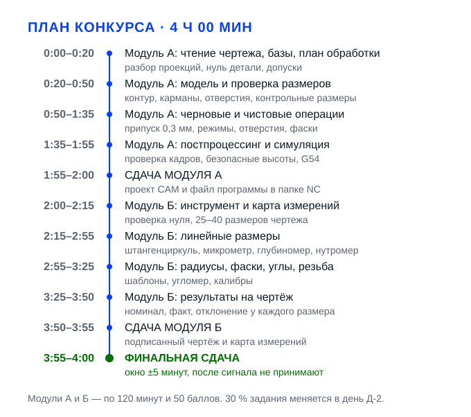
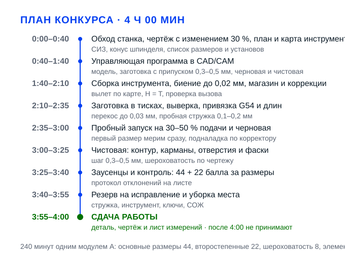
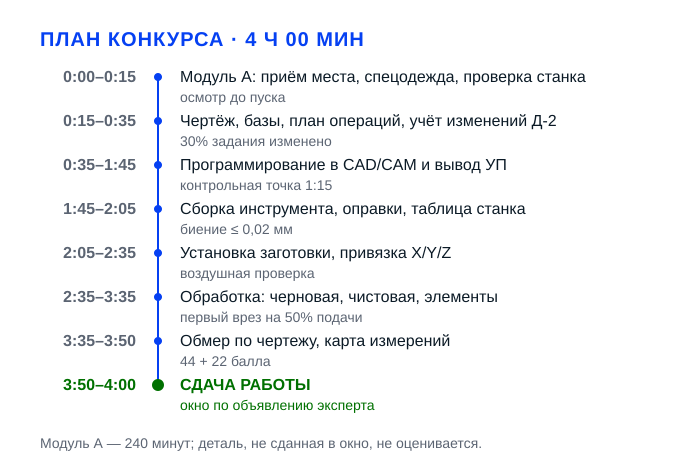

Фрезерные работы на станках с ЧПУ (Р)
Задания ниже — официальные файлы «Абилимпикс» (источник: abilympics-russia.ru), разложенные по категориям. Решения написаны по тексту задания, регламенту и критериям оценки; в них указано, что именно проверяет эксперт.
Школьник
14–16 лет, базовый уровень заданияВыдержка из официального конкурсного задания: страницы, относящиеся к категории «Школьник» (стр. 8–9 источника).
Пошаговое решение
Задание для школьников устроено не так, как у студентов: деталь не изготавливается, а программируется и измеряется, и на два модуля по 120 минут приходится по 50 баллов каждый. В модуле А нужно прочитать чертёж, построить модель и получить управляющую программу в CAD/CAM с черновыми и чистовыми операциями, отверстиями, фасками и корректным постпроцессингом. В модуле Б выдают готовую тестовую деталь: её надо измерить штангенциркулем, микрометром, нутромером и радиусными шаблонами и проставить фактические размеры с отклонениями прямо на чертеже. Три вещи решают исход: база и нуль детали, понятые до первого построения; припуск 0,3 мм на чистовую, без которого размер не выйдет в допуск; и простановка результата у самого размера, а не списком в углу листа. В день Д-2 эксперты меняют 30 процентов формулировки, поэтому текст задания перечитывается перед стартом.

Задача 1. Разобрать чертёж и построить план обработкиМодуль А · 50 баллов
Модуль А длится 120 минут и стоит 50 баллов, и первые двадцать из них уходят не на кнопки, а на голову: пока не прочитан чертёж, любая траектория — это угадывание. Школьник в этой категории не режет металл, он программирует и измеряет, поэтому цена ошибки смещается: неверно понятая база или пропущенный допуск видны сразу в симуляции и в протоколе измерений, а исправить их после генерации программы стоит уже десятков минут.
Действие 1.1. Развернуть рабочее место и файловую структуру
Шаг 1.1.1
Первым делом создаём папку по шаблону чемпионата: латиницей, без пробелов, с номером рабочего места и фамилией, например Ab2026_07_Ivanov. Внутри сразу три подпапки — CAD, CAM и NC, плюс отдельная PAPER под скан заполненного чертежа. Модель кладём в CAD, проект обработки в CAM, готовую управляющую программу в NC, и до самой сдачи эти три вещи не смешиваем: на приёмке эксперт открывает одну папку и должен с ходу видеть, где что лежит.
Организация работы входит в критерий «Программирование» модуля А, который целиком стоит 50 баллов, и проверяется она открытием папки. Если программа лежит в «Загрузках» под именем «новый1.nc», её могут просто не найти при оценивании, и 50 баллов превратятся в ноль независимо от качества траекторий. Латинские имена нужны и потому, что стойки читают путь в своей кодировке, и файл с кириллицей иногда не открывается вовсе.
Открываем папку и пересчитываем содержимое: три подпапки с точно такими именами, в корне ни одного файла, в названии общей папки есть номер места и фамилия. Заодно смотрим длину пути — если он длиннее примерно 150 знаков, при копировании на флешку часть стоек обрежет имя, и файл придёт битым.
Чаще всего работают прямо на рабочем столе, а папку делают в последние десять минут: половина файлов остаётся снаружи и в оценку не попадает. Вторая ошибка — назвать проект по-русски и потом искать, почему стойка не видит программу: на это уходит время модуля, а балл за организацию уже потерян.
Эксперт подходит к компьютеру в момент сдачи и смотрит папку целиком: имя, структуру, наличие файла программы и модели. Это занимает у него полминуты и сразу показывает, работал участник системно или собирал результат в спешке.
Шаг 1.1.2
Открываем CAM-систему и первым делом приводим её к метрической системе: в настройках документа ставим миллиметры, точность построения 0,001 мм, допуск аппроксимации дуг не грубее 0,01 мм. Проверяем, что в качестве станка выбран тот постпроцессор, который соответствует стойке на площадке, а не «универсальный трёхосевой» по умолчанию. Сразу включаем автосохранение каждые пять минут: модуль идёт два часа, и один сбой питания не должен обнулять полтора из них.
Дюймовая сцена — классическая ловушка готовых шаблонов: контур на экране выглядит правильным, а все координаты в программе оказываются в 25,4 раза больше, и деталь уходит в брак целиком. Постпроцессор определяет, какими командами CAM опишет смену инструмента, коррекцию и циклы, а неверный пост даёт программу, которую стойка не примет. Точность 0,001 мм не даёт дугам распадаться на сотни коротких отрезков и раздувать программу до тысяч кадров.
В строке состояния видно Units: Millimeters, в свойствах документа точность 0,001. Нарисуйте отрезок длиной 10 мм и измерьте его инструментом «расстояние» — должно выйти ровно 10,000. В заголовке проекта проверьте имя постпроцессора: оно должно совпадать с моделью стойки, а не быть пустым.
Работать в дюймах и заметить это только на симуляции, когда заготовка уезжает за пределы рабочей зоны. Вторая ошибка — оставить постпроцессор по умолчанию: программа получится с чужими кодами смены инструмента, и на стойке она остановится на первом же кадре с M6.
Эксперт смотрит на единицы измерения и имя постпроцессора ещё до того, как вы начнёте строить траектории: это первый признак того, что участник понимает, в каких величинах живёт деталь и на каком оборудовании она будет делаться.
Шаг 1.1.3
Надеваем спецодежду полностью: куртку или халат на все пуговицы, головной убор так, чтобы волосы были убраны и спереди, и на затылке, закрытую обувь. Снимаем часы, браслеты и кольца — они цепляются за маховики и попадают в зону шпинделя. Слушаем вводный инструктаж и расписываемся в журнале до старта, а не в середине модуля: без подписи к работе не допускают.
Требования охраны труда в конкурсном задании вынесены отдельным разделом, и их соблюдение фиксируется до начала отсчёта времени. Формально работа без подписи в журнале инструктажа — это нарушение допуска, за которое снимают с площадки, а не снижают баллы. Практическая сторона тоже важна: даже программист подходит к станку, чтобы проверить установку и привязку, и в этот момент рядом вращается шпиндель.
Проверьте себя по трём признакам: волосы не выглядывают ни спереди, ни сзади, рукава не свисают ниже локтя, обувь закрытая и сухая. В журнале инструктажа стоит ваша подпись с сегодняшней датой — если её нет, идите к эксперту до старта, а не после.
Прийти в удобной открытой обуви или с длинными рукавами, рассчитывая «я же только за компьютером»: к станку всё равно придётся подойти, а нарушение фиксируется сразу. Вторая ошибка — расписаться в журнале задним числом, чего делать нельзя ни при каких обстоятельствах.
Эксперт по охране труда проходит по площадке в первые минуты и отмечает спецодежду и подписи в журнале. Этот пункт не входит в 100 баллов напрямую, но нарушение снимает участника с конкурса целиком.
Действие 1.2. Прочитать чертёж до последней десятой
Шаг 1.2.1
Раскладываем чертёж и читаем его в строгом порядке: сначала основная надпись (масштаб, материал, обозначение), потом главный вид, потом виды сверху и сбоку, потом разрезы и выносные элементы. Для каждой проекции проговариваем вслух, что на ней изображено и какая поверхность в неё проецируется, а спорные места обводим карандашом прямо на бумажной копии. Масштаб сверяем с числами на размерных линиях: если масштаб 1:2, а размеры проставлены реальные, пересчитывать ничего не нужно — и это надо понять сразу, а не на середине построения.
Неправильно прочитанная проекция — самая дорогая ошибка модуля А, потому что она размножается на все последующие шаги: контур строится не тот, траектория идёт не туда, и к концу модуля переделывать приходится всё. В критерии «Программирование» оценивается соответствие программы чертежу, и любое расхождение снимает баллы по всему блоку, а не по одному элементу. Порядок от общего к частному экономит время и не даёт утонуть в мелких размерах.
Перескажите чертёж своими словами за минуту: какая деталь, габариты, где отверстия, где карман, что обрабатывается с одной установки. Если на каком-то вопросе вы запинаетесь — это место надо разобрать сейчас, пока не началось построение контура.
Начинать с мелочей — фасок и радиусов — и только потом смотреть габариты: в результате деталь построена «по частям» и не сходится по общей длине. Вторая ошибка — принять масштаб за единицу и потом удивляться, почему заготовка не помещается в рабочую зону.
Эксперт подходит и просит показать, где на чертеже та или иная поверхность. Ответ «я потом разберусь» означает, что участник работает наугад, и в протоколе это отражается как несистемная работа с документацией.
Шаг 1.2.2
Определяем базы и нуль детали. Выбираем поверхность, от которой проставлено больше всего размеров, — обычно это низ и один из торцов, — и объявляем её технологической базой. Нуль детали ставим в угол этой базы, с тем чтобы все три координаты X, Y, Z отсчитывались от реальных, а не воображаемых поверхностей, и записываем на бумаге: нуль в левом нижнем углу по X и Y, по Z — верх заготовки минус припуск 1 мм. Тут же решаем, куда ставим систему координат G54, чтобы она совпала с этим нулём.
База — то, от чего считаются размеры и на чертеже, и в программе. Если база в CAM не совпадает с базой на станке, каждая координата смещается на постоянную величину, и деталь выходит верной по форме, но не по расположению отверстий относительно кромок. В критерии «Программирование» соответствие нуля видно по первой же траектории: от какого угла построен контур. Привязка к базе позволяет потом измерить деталь от тех же поверхностей.
На бумажной копии обведите базовую поверхность и подпишите «X0 Y0», рядом поставьте стрелку Z с пометкой, от чего отсчёт: от верха заготовки или от чистовой плоскости. В CAM на экране системы координат стрелки X и Y должны смотреть от того же угла, что вы обвели.
Поставить нуль в центр детали, потому что так «удобнее смотреть», и забыть об этом к моменту привязки: на станке ноль ставят по углу, и вся программа смещается на половину габарита. Вторая ошибка — принять за базу поверхность, которая потом срезается первым же проходом.
Эксперт спрашивает, от какой поверхности построена система координат и почему. Ответ с обоснованием — что от этой базы проставлено большинство размеров — читается как понимание темы базирования, а не как механическое нажатие кнопки.
Шаг 1.2.3
Проходим по всем размерам и выписываем их в таблицу на бумаге: номинал, допуск, характер размера — наружный, внутренний, глубинный, координирующий. Отдельно отмечаем размеры с допуском в теле текста, например 50 H7 или 20 ±0,05, и размеры справочные, которые на чертеже стоят со звёздочкой: справочные в программе не задаются, их получают автоматически. Проверяем размерные цепи — сумма промежуточных размеров должна давать общий, и если не даёт, значит, один размер понят неверно.
Допуски определяют, с какой точностью строится траектория и нужен ли чистовой проход. Размер 20 ±0,05 допускает работу одним проходом, а 20 H7 с полем 0,021 мм требует чистовой фрезы и коррекции, иначе выход за верхнюю границу. В модуле А оценивается корректность программы по чертежу, и пропущенный размер — это пропущенный элемент обработки, то есть минус баллы. Сверка размерных цепей ловит ошибки чтения до того, как они станут геометрией.
Сложите промежуточные размеры вдоль каждой оси и сравните с общим: расхождение должно быть нулевым. В таблице не осталось пустых строк — у каждого размера есть номинал и допуск, а справочные помечены отдельно. Пересчитайте количество отверстий и карманов на чертеже и в таблице: числа должны совпасть.
Взять номиналы и проигнорировать допуски: программа строится «в ноль», а на приёмке размеры уходят в минус по внутренним поверхностям. Вторая ошибка — задать справочный размер как рабочий и получить конфликт размерных цепей, который потом ищут наугад.
Эксперт смотрит на таблицу размеров, если участник её ведёт: наличие выписанных допусков — прямой признак того, что человек понимает разницу между номиналом и полем допуска. Без таблицы разговор идёт по чертежу, и пропуски видны сразу.
Шаг 1.2.4
Отдельным проходом читаем то, что не относится к линейным размерам: шероховатость на каждой поверхности (обозначения Ra 1,6 и Ra 3,2 на чертеже стоят у конкретных плоскостей, а не «вообще»), радиусы скруглений, фаски с их размерами, допуски формы и расположения, а также технические требования под чертежом. Каждую позицию техтребований переписываем в план отдельной строкой: «Ra 1,6 по контуру», «фаска 1×45° по верхней кромке», «скругления R5 в кармане».
Шероховатость и фаски — отдельные элементы: для Ra 1,6 нужен чистовой проход с малой подачей на зуб, а фаска 1×45° делается фрезой с наклоном или отдельной операцией. У студентов шероховатость вынесена в отдельные 8 баллов, и здесь логика та же: поверхность без нужного Ra считается невыполненной. Технические требования часто содержат то, чего нет на видах, например притупление кромок, и их пропуск означает неполную программу.
Пройдите по чертежу пальцем, вслух называя каждое обозначение шероховатости и его поверхность: ни одного знака без расшифровки. В плане появились строки про радиусы, фаски и техтребования, и каждая привязана к конкретной операции.
Считать, что шероховатость «получится сама»: черновой проход оставляет гребешки, которые на приёмке видны и на ощупь, и в протоколе. Вторая ошибка — не заметить фаску на кромке, из-за чего деталь формально не соответствует чертежу по элементу.
Эксперт задаёт вопрос про конкретный знак шероховатости на чертеже и слушает, какой операцией участник собирается его обеспечить. Правильный ответ называет и чистовой проход, и подачу, а не «ну, станок сам».
Действие 1.3. Выбрать заготовку, инструмент и стратегию
Шаг 1.3.1
Задаём заготовку в CAM по габаритам детали плюс припуск: по 2 мм на сторону по X и Y и 1 мм по Z на чистовую плоскость, если в задании не оговорено иное. Для детали 100×80×25 это даёт заготовку 104×84×26, и такой припуск снимается за один черновой проход концевой фрезой Ø10. Если чертёж предполагает обработку в два установа, заготовку задаём так, чтобы после переворота оставалась база не меньше 5 мм по высоте — иначе деталь нечем зажать.
Припуск — это запас, из которого снимается погрешность установки и неровность кромки. Слишком маленький припуск не даёт выйти на чистый размер, если заготовка пришла с заусенцем или косым торцом; слишком большой — лишние проходы и время, которого в модуле всего 120 минут. В критерии «Программирование» проверяется, что запрограммирована вся деталь: заготовка меньше детали оставляет необработанные участки, видимые в симуляции.
В CAM включите отображение заготовки полупрозрачной: деталь должна быть внутри неё целиком, с запасом по всем сторонам. Проверьте численно: разница габаритов заготовки и детали равна 4 мм по X, 4 мм по Y и 2 мм по Z при выбранных припусках.
Задать заготовку «по детали» и получить траекторию, которая идёт точно по кромке и оставляет след от фрезы на готовой поверхности. Вторая ошибка — заложить припуск 10 мм на сторону: черновой проход займёт половину модуля, а времени на чистовую уже не останется.
Эксперт смотрит на заготовку в проекте и сравнивает её с чертежом: наличие припуска и его разумность — признак того, что участник думает про реальный процесс, а не только про картинку.
Шаг 1.3.2
Подбираем инструмент под каждый элемент, а не «одну фрезу на всё»: торцевая фреза Ø50 или Ø40 для чистовой плоскости, концевая Ø10 с числом зубьев 4 для чернового съёма, концевая Ø6 с тремя зубьями для карманов и скруглений, сферическая Ø4 для радиусных переходов, сверло Ø8,5 под резьбу М10 и метчик М10, фаска Ø10 с углом 90° для фасок. Для каждой фрезы фиксируем вылет из оправки: не более 3 диаметров, то есть для Ø10 это 30 мм — длиннее нельзя, начнётся вибрация.
Инструмент определяет и качество, и время: фреза Ø6 в кармане R5 проходит по радиусу без зарезов, а Ø10 туда просто не влезет. Вылет больше трёх диаметров — это биение и дробление поверхности, и никакая чистовая подача этого не исправит. В критерии «Программирование» набор инструментов проверяется на соответствие элементам чертежа: если в проекте нет сверла под отверстия, значит, отверстия не запрограммированы.
Составьте список инструментов и напротив каждого напишите, какие элементы он обрабатывает. Все элементы чертежа должны быть закрыты хотя бы одним инструментом. Проверьте вылет: он записан в свойствах инструмента и не превышает трёх диаметров.
Взять одну фрезу Ø8 на всё и потом обнаружить, что внутренние радиусы R5 не выдержаны: фреза с радиусом 4 оставляет радиус 4, а не 5. Вторая ошибка — задать вылет 60 мм для Ø10 «чтобы дотянуться» и получить вибрацию, из-за которой размер уходит на 0,1 мм.
Эксперт открывает список инструментов и спрашивает, почему выбран именно этот диаметр для кармана. Ответ через радиус скругления и вылет показывает инженерное мышление, ответ «какая была» — его отсутствие.
Шаг 1.3.3
Выстраиваем порядок переходов от общего к частному: сначала чистовой проход по верхней плоскости (она станет базой для дальнейших измерений), потом черновой съём контура и карманов, потом чистовая обработка контура и стенок, затем отверстия и резьба, и только в самом конце фаски и скругления. Внутри каждого перехода задаём направление фрезерования попутное, а врезание — по спирали или по дуге, а не вертикально в материал.
Порядок переходов влияет на точность: если сначала просверлить отверстия, а потом фрезеровать рядом, вибрация испортит их кромки. Чистовая плоскость в начале даёт базу, от которой потом измеряется глубина карманов. Попутное фрезерование даёт лучшую шероховатость, а спиральное врезание снижает нагрузку на зуб. Всё это вместе — содержание критерия «Программирование»: осмысленная последовательность, а не набор случайных операций.
Прочитайте дерево операций сверху вниз и проверьте, что ни одна чистовая операция не стоит раньше черновой по тому же элементу, и что отверстия идут после контура. В каждой операции врезание задано дугой или спиралью — в свойствах видно тип входа, а не «по нормали».
Поставить фасочную операцию в начало: фаска снимается там, где потом ещё будет сниматься металл, и в итоге её не остаётся. Вторая ошибка — вертикальное врезание концевой фрезы в материал: на алюминии это ещё терпимо, на стали — скол кромки и слом инструмента.
Эксперт листает дерево операций и смотрит на порядок. Правильная последовательность читается с первого взгляда: плоскость, черновая, чистовая, отверстия, фаски. Хаотичный список операций виден так же быстро.
Шаг 1.3.4
Считаем режимы резания и записываем их в проект, а не оставляем на «автоматике»: для алюминиевого сплава скорость резания 200–250 м/мин, для стали 80–100 м/мин. Для фрезы Ø10 с четырьмя зубьями при 250 м/мин число оборотов выходит около 8000 об/мин, подача на зуб 0,03 мм даёт минутную подачу примерно 950 мм/мин. Для Ø6 с тремя зубьями при 200 м/мин обороты около 10 000, подача на зуб 0,02 — минутная около 600 мм/мин. Глубину резания при черновой берём 0,5 диаметра, ширину — 0,6 диаметра, и только на чистовой оставляем 0,3 мм по стенке.
Режимы — это то, чем проверяется, умеет ли участник считать, а не подбирать на глаз. Слишком высокие обороты при большой подаче на зуб ломают фрезу, слишком низкие дают наклёп и плохую поверхность. В критерии «Программирование» режимы входят в оценку корректности программы: они должны быть записаны в операциях, а не оставаться нулевыми. Кроме того, при симуляции именно по режимам видно, укладывается ли обработка в машинное время.
Пересчитайте одну операцию вручную: обороты равны тысяче умноженной на скорость резания, делённой на пи и на диаметр; минутная подача равна оборотам, умноженным на число зубьев и на подачу на зуб. Ваши числа в проекте должны совпадать с расчётом до десятков, а не отличаться в разы.
Оставить в операции 10 000 об/мин и подачу 3000 мм/мин «по умолчанию шаблона»: на симуляции это выглядит нормально, а на станке фреза сгорит на первом проходе. Вторая ошибка — не пересчитать режимы при смене диаметра: для Ø4 те же обороты дают вдвое большую нагрузку на зуб.
Эксперт просит показать расчёт режимов и проверяет хотя бы одну строку арифметически. Совпадение с проектом говорит о том, что участник считал сам, а не нажимал «рассчитать автоматически».
Задача 2. Запрограммировать обработку в CAD/CAMМодуль А · 50 баллов
Основная часть модуля А: из плоского чертежа получить трёхмерную модель и траектории, которые стойка примет без правок. На 120 минут приходится и геометрия, и черновые, и чистовые операции, и отверстия, и постпроцессинг с проверкой. Порядок здесь важнее скорости: каждая переделанная операция стоит не только времени, но и баллов за корректность программы.
Действие 2.1. Построить модель и проверить её размеры
Шаг 2.1.1
Строим геометрию от выбранной базы: сначала прямоугольник заготовки по габаритам, потом контур детали в плоскости XY, потом выдавливаем тело на высоту чертежа. Все размеры вводим числами в поле, а не «на глаз» перетаскиванием: 100 по X, 80 по Y, 25 по Z. Скругления и фаски контура делаем инструментом скругления с явным радиусом, а не обрезкой лишнего, чтобы геометрия осталась параметрической и её можно было поправить одним числом.
Модель — это основа всех траекторий: если контур построен с ошибкой в 0,2 мм, то и обработка будет с этой ошибкой, и никакой чистовой проход её не исправит. Параметрическая геометрия экономит время: при изменении размера достаточно поменять одно число, а не перерисовывать контур. В критерии «Программирование» соответствие модели чертежу — первый и самый весомый пункт, потому что от него зависит всё остальное.
Включите отображение размеров на модели или измерьте габариты инструментом «ограничивающий прямоугольник»: должно быть ровно 100,000 на 80,000 на 25,000. Пройдите по контуру и убедитесь, что каждый радиус совпадает с чертежом до сотой, а не «примерно».
Рисовать контур линиями и дугами по клеточкам: на стыках остаются разрывы в 0,01–0,05 мм, и траектория потом идёт рывками. Вторая ошибка — строить тело без параметров, после чего любая правка требует полной перерисовки.
Эксперт открывает модель и меряет два-три размера прямо в CAM. Совпадение с чертежом до третьего знака — норма, расхождение в десятых он замечает сразу.
Шаг 2.1.2
Раскладываем геометрию по слоям и назначаем элементам понятные имена: BODY для тела, POCKET для карманов, HOLES для отверстий, CHAMFER для фасок, STOCK для заготовки. Отверстия строим как цилиндры с осью, а не как окружности на эскизе: тогда CAM сам распознает их как отверстия и предложит сверление или винтовую интерполяцию. Карманы ограничиваем замкнутым контуром с явно указанной глубиной.
Слои и имена нужны не для красоты: при выборе геометрии в операции легко поймать лишнюю линию, и траектория уйдёт по ней. Отдельные слои позволяют отключать готовые элементы и не задевать их при следующих операциях. Распознанные отверстия дают возможность применить типовой цикл сверления вместо ручной интерполяции, что и быстрее, и корректнее по кодам. В оценке программы это читается как структурированный подход.
Отключите по очереди каждый слой: при выключении HOLES на модели должны исчезнуть ровно все отверстия и ничего больше. В дереве модели нет элементов с именами вида «Вытянуть12» и «Эскиз47» — все переименованы.
Держать всё на одном слое и потом выделять геометрию рамкой: в контур попадает размерная линия или осевая, и фреза идёт по ним. Вторая ошибка — строить отверстия круглыми пазами, после чего CAM не видит их как отверстия и не даёт цикл сверления.
Эксперт смотрит дерево построения и включение слоёв. Опрятное дерево с осмысленными именами — признак того, что участник сможет быстро исправить модель, если эксперт попросит изменить размер.
Шаг 2.1.3
Сверяем модель с чертежом по контрольным размерам: габариты, расстояния между осями отверстий, глубины карманов, положение уступов. Для этого удобно поставить на виде сверху несколько размеров прямо в CAM и сравнить их с бумагой, а расхождения записать. Если модель строилась по половине контура с зеркалированием, отдельно проверяем симметрию: расстояние от оси до левой и правой кромки должно быть одинаковым до тысячных.
Проверка модели занимает пять минут и ловит те ошибки, которые в траектории стоят получаса. Симметрия — типичное место сбоя: при зеркалировании относительно неверной оси деталь получается почти правильной, и заметить это можно только измерением. В критерии «Программирование» оценивается соответствие программы чертежу, и любое отклонение модели переносится в программу один к одному.
Составьте список из пяти контрольных размеров и измерьте каждый в модели. Все пять должны совпасть с чертежом. Отдельно проверьте симметрию: два расстояния от оси должны быть равны, а не отличаться на 0,1.
Пропустить эту проверку и обнаружить расхождение на симуляции, когда все операции уже назначены: править приходится каждую. Вторая ошибка — зеркалить относительно кромки вместо оси и получить деталь, смещённую на половину ширины.
Эксперт просит назвать контрольные размеры и показать их на модели. Способность перечислить, что именно проверялось, отличает осознанную работу от «построил и поехал».
Действие 2.2. Назначить черновые и чистовые операции
Шаг 2.2.1
Первой операцией ставим обработку верхней плоскости торцевой фрезой: проход по всей заготовке с перебегом 5 мм за кромку, глубина 0,5 мм, подача 800 мм/мин при 2500 об/мин для Ø50. Именно этот проход создаёт чистую плоскость, от которой потом отсчитывается Z. В той же операции задаём чистовой проход по контуру плоскости с подачей вдвое меньше, чтобы поверхность была ровной и без следов.
Верхняя плоскость — база для всех последующих измерений и для привязки по Z, поэтому её надо получить сразу и чисто. Перебег за кромку убирает ступеньку на выходе фрезы, которая иначе остаётся валиком по краю. В критерии «Программирование» наличие операции по плоскости показывает, что участник думает о базе, а не только о контуре. Кроме того, ровная плоскость нужна для измерения глубины карманов штангенглубиномером.
В симуляции первый проход должен снимать тонкий ровный слой по всей площади, без «островов» в углах. Проверьте, что траектория выходит за габарит заготовки на 5 мм с каждой стороны и не задевает кулачки тисков.
Начать сразу с контура, оставив верхнюю плоскость как есть: глубины карманов потом отсчитываются от неровной поверхности, и допуск уходит. Вторая ошибка — задать перебег 0 мм, из-за чего по краю остаётся гребешок.
Эксперт смотрит на первую операцию в дереве. Если она по плоскости — разговор идёт про базу и припуск, если сразу контур — участнику задают вопрос, от чего он собирается отсчитывать глубину.
Шаг 2.2.2
Назначаем черновую обработку контура концевой фрезой Ø10: стратегия «снаружи внутрь», шаг по глубине 5 мм за проход, боковой шаг 6 мм, припуск на чистовую 0,3 мм по стенке и 0,1 мм по дну. Включаем опцию «обрабатывать открытые карманы» и задаём порядок обхода по кратчайшему пути. Скорость резания берём 250 м/мин, что для Ø10 даёт 8000 об/мин и подачу около 950 мм/мин.
Черновая операция убирает основной объём металла, и её задача — не испортить геометрию. Припуск 0,3 мм по стенке оставляет чистовой проходу материал, достаточный, чтобы убрать следы черновой и выйти в допуск. Шаг по глубине 5 мм при диаметре 10 — это половина диаметра, оптимум для алюминия по стойкости фрезы. В критерии «Программирование» оценивается разделение черновой и чистовой: обработка «в один проход на всю глубину» некорректна.
В свойствах операции видно: припуск по стенке 0,3, припуск по дну 0,1, шаг по глубине 5. На симуляции после черновой на стенках остаётся видимый слой материала, который снимает чистовая, — если стенки уже «чистые», припуск задан нулевым.
Задать черновую без припуска, «чтобы не тратить время»: чистовая пойдёт по уже готовой стенке, снимет 0,05 мм и оставит следы от черновой фрезы. Вторая ошибка — шаг по глубине 10 мм на всю высоту: фреза работает всей длиной кромки и начинает «петь».
Эксперт проверяет именно припуски в свойствах операции. Число 0,3 по стенке — то, что он ожидает увидеть; ноль или 2 мм вызывают вопросы. Для него припуск в свойствах — признак того, что участник думает о следующем проходе, а не только о текущем.
Шаг 2.2.3
Добавляем чистовую обработку контура и стенок карманов фрезой Ø6 с тремя зубьями: один проход по глубине с шагом 0,3 мм по стенке, обороты 10 000, подача 600 мм/мин, включённая коррекция на радиус G41 с плавным входом по дуге радиусом 2 мм. Для внутренних радиусов меньше радиуса фрезы ставим отдельную операцию сферической фрезой Ø4 или меняем стратегию на эквидистантную.
Чистовая операция — это то, что эксперт увидит и измерит: от неё зависят и размер, и шероховатость. Коррекция на радиус позволяет потом на стойке подправить размер на ±0,02 без перегенерации программы, что в конкурсе часто и требуется. Плавный вход по дуге не оставляет следа в точке врезания, который виден на полированной поверхности. В критерии «Программирование» чистовой проход по контуру с коррекцией — признак правильной программы.
В симуляции на контуре нет точки врезания и следа от подвода. В кадрах программы присутствует G41 перед контуром и G40 после него. Проверьте, что радиус скругления контура на модели и на траектории совпадает: фреза Ø6 физически не может дать радиус меньше 3.
Оставить коррекцию выключенной и получить размер, который на стойке не подправить: придётся менять программу целиком. Вторая ошибка — гнать чистовую фрезой Ø10 в карман с радиусом 5: фреза оставит радиус 5 вместо нужных 4 или наоборот, и элемент выйдет не по чертежу.
Эксперт открывает кадры и ищет G41 и G40. Их наличие и правильное окружение — прямой балл; отсутствие коррекции он отмечает как упрощение, из-за которого размер не управляется.
Шаг 2.2.4
Программируем отверстия и резьбу отдельными операциями: сверление Ø8,5 на глубину 20 мм с циклом G81, обороты 3000, подача 360 мм/мин, с выводом сверла для слома стружки каждые 5 мм; затем метчик М10 с циклом резьбонарезания, обороты 400, подача равна шагу 1,5 мм на оборот. Центровку делаем сверлом Ø8 или центровочным, если чертёж требует точного положения. Отверстия с допуском H7 обрабатываем сверлением с припуском и развёрткой Ø10 H7.
Отверстия — самый частый элемент, который в школьной категории программируют неправильно: сверлят сразу в размер без учёта того, что сверло уводит на 0,1–0,2 мм. Развёртка после сверла даёт H7 и правильную геометрию. Резьба требует синхронизации оборотов и подачи, и здесь ошибка в шаге рвёт метчик. В критерии «Программирование» отверстия и резьба проверяются как отдельные запрограммированные элементы, и их отсутствие — прямой минус баллов.
В симуляции сверло входит в каждое отверстие по центру, без смещения относительно перекрестия осей. В кадрах видно G81 с параметром глубины и G84 для резьбы. Подача в резьбовой операции численно равна шагу резьбы, умноженному на обороты.
Сверлить отверстие сразу Ø10 под номинальный размер и получить плюс 0,1 — деталь не пройдёт по H7. Вторая ошибка — задать подачу резьбы «на глаз»: метчик ломается в отверстии, и вытащить его без повреждения детали уже не получится.
Эксперт смотрит, есть ли отдельная операция под резьбу и правильно ли в ней связаны обороты и подача. Это один из тех пунктов, где видно, понимает ли участник физику процесса.
Действие 2.3. Настроить входы, отводы и безопасные высоты
Шаг 2.3.1
Для каждой операции задаём тип врезания: для контура — по дуге радиусом 2 мм, для кармана — по спирали с шагом 1 мм, для паза — маятниковым движением. Высоту подвода ставим 2 мм над заготовкой, высоту отвода 5 мм, безопасную высоту 30 мм над нулём детали. Проверяем, что ни один быстрый ход не идёт на рабочей глубине. Высоты смотрим в свойствах перехода, а не на глаз по симуляции: в анимации ошибка в 1 мм незаметна.
Врезание — самый нагруженный момент операции: вертикальный вход в материал даёт удар по кромке и оставляет след на стенке. Дуга и спираль распределяют нагрузку и не портят поверхность. Безопасная высота 30 мм гарантирует, что при быстром перемещении между элементами фреза не заденет ни заготовку, ни тиски. В критерии «Программирование» корректные подводы и отводы входят в понятие правильно построенной траектории.
В симуляции с включённым показом быстрых перемещений все они идут выше заготовки. В свойствах операции видно «врезание: спираль, шаг 1 мм», а не «по нормали». Прокрутите кадры: перед каждым G0 стоит Z на безопасной высоте.
Оставить вертикальное врезание и получить на стенке кармана точку-удар, которую потом видно на полировке. Вторая ошибка — безопасная высота 1 мм: при переезде через тиски фреза цепляет губку. Третья — не задать отвод вообще, и фреза выходит из материала по стенке, оставляя глубокую риску.
Эксперт включает показ быстрых ходов и смотрит, нет ли перемещений на глубине. Один такой кадр — и разговор идёт про безопасность траектории, а не про геометрию.
Шаг 2.3.2
Проверяем коррекции и компенсации: коррекция на радиус включена только на чистовых контурных проходах, коррекция на длину G43 задаётся по каждой фрезе через номер инструмента, а не вручную. Задаём таблицу инструментов с номерами 1–6, у каждого свой диаметр, вылет и тип. Убеждаемся, что номера в таблице совпадают с номерами, которые будут стоять в оправках на станке.
Стойка вызывает инструмент по номеру, и расхождение между таблицей CAM и реальной оправкой означает, что вместо фрезы Ø6 выйдет Ø10 — деталь испорчена, а иногда и станок. Коррекция на длину должна стоять в каждом кадре смены инструмента, иначе первое же перемещение пойдёт с чужой высотой. В критерии «Программирование» согласованность таблицы инструментов — обязательное условие корректной программы.
Сверьте таблицу инструментов с бумажным списком: номера, диаметры, вылеты. В программе перед каждым M6 стоит T с тем же номером, а после — G43 с той же строкой H. Ни одной операции без G43. В проекте нет операции, где инструмент выбран, а номер ему не присвоен.
Оставить номера по умолчанию 1, 2, 3 и на станке получить не тот инструмент: деталь режется фрезой не того диаметра, и все размеры уходят. Вторая ошибка — вписать G43 вручную один раз в начале программы и забыть про смены инструмента.
Эксперт сверяет таблицу инструментов CAM с раскладкой оправок. Совпадение номеров — то, что проверяется первым, потому что дальше проверять уже нечего, если оно нарушено.
Шаг 2.3.3
Задаём нулевую точку и систему координат: G54 в углу заготовки по X и Y, по Z — верх заготовки. Если деталь обрабатывается в два установа, для второго заводим G55 и прописываем его в операциях явно, а не полагаемся на то, что стойка «запомнит». В свойствах заготовки ставим её точные габариты и положение, чтобы симуляция считала съём материала по реальному объёму.
Система координат — это мост между программой и станком: если в CAM стоит G54, а наладчик привязал G55, все координаты сместятся на разницу смещений, и деталь уйдёт. Явное указание системы в каждой операции исключает сюрпризы при перестановке. Точные габариты заготовки в проекте нужны для честной симуляции: при завышенной заготовке остаточный материал не виден. В критерии «Программирование» привязка к нулю детали — отдельный пункт.
В каждой операции в поле «система координат» стоит G54 или G55, пустых значений нет. В симуляции нуль детали совпадает с углом заготовки, а не с её центром — это видно по стрелкам осей. Проверьте также, что в операциях второго установа стоит G55, а не G54 по наследству.
Оставить систему координат по умолчанию и на станке обнаружить смещение на половину габарита. Вторая ошибка — задать заготовку больше реальной, из-за чего симуляция показывает «всё снято», хотя на деле остаются необработанные участки.
Эксперт спрашивает, где стоит нуль и в какой системе он записан. Ответ с указанием G54 и угла заготовки показывает, что участник довёл программу до состояния, в котором её можно ставить на станок.
Действие 2.4. Сгенерировать программу и проверить её
Шаг 2.4.1
Выбираем постпроцессор под конкретную стойку, указанную в задании, и генерируем управляющую программу в файл с расширением, которое понимает стойка: обычно .nc или .tap. Перед генерацией проверяем в настройках поста вывод номеров кадров, формат координат (три знака после запятой), наличие строки безопасности в начале и команды возврата в конце. Сохраняем файл в папку NC под именем, содержащим номер места и фамилию.
Постпроцессор переводит язык CAM на язык стойки, и «универсальный» пост часто выдаёт команды, которых стойка не знает. Формат координат с тремя знаками даёт точность 0,001 мм, без него программа округляет до сотых. Строка безопасности сбрасывает модальные состояния от предыдущей программы: без неё станок начнёт работу с чужой коррекцией. В критерии «Программирование» корректность файла программы — итоговый и самый весомый пункт.
Откройте файл в текстовом редакторе: в начале есть строка безопасности с G17, G21, G40, G49, G90, в конце — M30. Координаты записаны с тремя знаками после запятой, номера кадров идут по порядку без пропусков и повторов.
Сгенерировать программу «универсальным» постом и получить кадры с несуществующими кодами: стойка выдаёт ошибку на первом же. Вторая ошибка — сохранить файл с расширением .txt, после чего стойка его просто не видит в списке.
Эксперт открывает файл программы и листает первые и последние кадры: строка безопасности, смена инструмента, возврат в ноль. Это то, что он проверяет у всех участников одинаково и очень быстро.
Шаг 2.4.2
Запускаем симуляцию обработки с показом съёма материала: смотрим, остаётся ли на детали необработанный металл, нет ли зарезов за контур и столкновений с тисками. Отдельно включаем режим «сравнение с моделью» — CAM подсвечивает красным места, где снято лишнее, и синим, где металл остался. Каждое красное пятно разбираем: чаще всего это заниженная безопасная высота или неверный припуск.
Симуляция — единственный способ увидеть ошибку до станка, и в школьной категории, где деталь не изготавливается, она заменяет собой пробный проход. Сравнение с моделью показывает то, чего не видно глазом: перекос в 0,1 мм на стенке или недоход фрезы в угол. В критерии «Программирование» проверенная программа оценивается выше, потому что в ней нет очевидных дефектов, которые видны на первом же проигрывании.
После симуляции на экране не осталось красных зон, а синие зоны — только там, где металл должен остаться по чертежу. Прокрутите анимацию на средней скорости и посмотрите на углы карманов: там чаще всего остаются столбики материала.
Пропустить симуляцию и сдать программу с зарезом за контур на 2 мм: на станке это брак, а на приёмке — минус баллы за соответствие чертежу. Вторая ошибка — смотреть симуляцию на максимальной скорости и не заметить столкновение с тисками.
Эксперт просит проиграть симуляцию при нём. Он смотрит на углы и на выходы фрезы за кромку: именно там ошибки видны без всяких измерений, и столкновение с тисками он замечает без вашей подсказки.
Шаг 2.4.3
Читаем программу глазами, а не только смотрим картинку: проверяем первый кадр после смены инструмента (там должны быть обороты, включение охлаждения и коррекция), проверяем каждый G0 на безопасной высоте, ищем повторяющиеся или лишние кадры. Если в программе больше 3000 кадров, смотрим, не разбились ли дуги на отрезки: это признак слишком грубого допуска аппроксимации, и файл можно сократить втрое, подняв точность до 0,01 мм.
Симуляция показывает геометрию, но не показывает логику: пропущенный M3 или M8 приведёт к тому, что фреза пойдёт без вращения или без охлаждения, а лишние кадры увеличат время обработки. Длинная программа с тысячами коротких отрезков грузит стойку и увеличивает риск сбоя чтения с флешки. В критерии «Программирование» структура программы оценивается наряду с геометрией: лишние кадры читаются как небрежность.
Пройдите поиском по файлу: каждый M6 сопровождается T, M3 и M8; каждый G0 стоит после кадра с Z выше 5 мм; количество кадров не превышает примерно 3000 для детали такого размера. Каждый G0 должен стоять после кадра с подъёмом по Z.
Сдать программу без M8 и получить на станке работу без охлаждения: алюминий налипает на фрезу, поверхность рвётся. Вторая ошибка — оставить допуск аппроксимации 0,001 мм и получить файл на 20 000 кадров, который стойка читает минутами.
Эксперт листает программу в середине, а не только в начале: смотрит, есть ли охлаждение и коррекция, и нет ли подряд сотни одинаковых строк. Так видно, читал ли участник свою программу вообще.
Шаг 2.4.4
Фиксируем результат модуля А: сохраняем проект CAM, файл программы и, если требуется, отчёт с параметрами режимов — в папку, созданную в самом начале. Имя файла программы делаем по шаблону из задания, без пробелов, версии вида «final_final» не оставляем. Записываем на бумаге время окончания модуля А и короткий список того, что осталось проверить перед сдачей.
Сдача оценивается по файлам, а не по тому, что участник помнит. Проект CAM нужен, чтобы эксперт мог открыть операции и увидеть режимы и припуски; без него оценивается только текст программы, и часть баллов за программирование снять невозможно. Отсутствие версий в имени исключает путаницу, когда на приёмку попадает старая программа. Список дел на бумаге экономит последние минуты, когда времени на размышления уже нет.
В папке лежат ровно три вещи: проект CAM, файл программы и при необходимости отчёт. Имя файла совпадает с шаблоном, дата изменения — сегодняшняя. Откройте файл программы заново из папки, чтобы убедиться, что он читается и не пустой.
Сохранить программу только на рабочем столе и потерять при копировании. Вторая ошибка — оставить в папке пять версий программы, из которых на приёмку попадает самая ранняя. Третья — сохранить проект в формате, который не открывается на другой версии CAM.
Эксперт открывает проект CAM и смотрит операции, а не только файл. Наличие сохранённого проекта — это разница между «участник запрограммировал» и «участник принёс текст».
Задача 3. Измерить тестовую деталь и проставить размерыМодуль Б · 50 баллов
Второй модуль — тоже 120 минут и тоже 50 баллов, и он устроен иначе: деталь уже готова, её не надо делать, её надо честно измерить и записать результат прямо на чертеже. Оценивается не красота почерка, а совпадение ваших чисел с эталонными и правильность простановки: номинал, факт и отклонение в нужном месте. Здесь выигрывает не тот, кто быстрее щёлкает штангенциркулем, а тот, кто измеряет в трёх сечениях и знает цену деления.
Действие 3.1. Подготовить деталь и средства измерения
Шаг 3.1.1
Протираем деталь насухо мягкой ветошью, убираем стружку и масло с измерительных поверхностей: заусенец или прилипшая стружка добавляют к размеру от 0,05 до 0,3 мм. Кладём деталь на чистую подкладку и даём ей полежать 15–20 минут при температуре площадки, обычно это 20 ± 2 °C. Штангенциркуль и микрометр тоже держим рядом с деталью, а не в кармане: разница температур в 5 градусов даёт на стальной детали длиной 100 мм расхождение около 0,006 мм.
Модуль Б стоит 50 баллов, и все они снимаются с ваших чисел: если к размеру прибавился заусенец, вы записали неверный факт и потеряли балл по этому размеру. Температурная выдержка — не формальность: металл расширяется, и измерение горячей после обработки детали даёт систематическую ошибку в плюс. В критерии «Измерение деталей» оценивается точность результата, а не усилие, с которым вы сжимали губки.
Проведите пальцем по кромкам: заусенцев и ступенек быть не должно. На измерительных поверхностях инструмента нет масляной плёнки — посмотрите на просвет, поверхность должна быть матовой. Деталь на ощупь не отличается по температуре от стола.
Измерять деталь сразу после того, как её принесли, и получить плюс 0,02–0,03 мм на всех размерах. Вторая ошибка — сдувать стружку ртом: влага оседает на поверхности и потом даёт коррозию на измерительных плоскостях.
Эксперт смотрит, как участник берёт деталь и чем протирает. Небрежная подготовка видна по первому же измерению: числа у такого участника «гуляют» от попытки к попытке.
Шаг 3.1.2
Проверяем инструменты на нуле до первого измерения. Микрометр МК25-50 сводим по установочной мере 25 мм: трещоткой до трёх щелчков, смотрим на просвет — щели быть не должно, а барабан должен показывать ровно 0,00. Штангенциркуль ШЦ-I-125-0,05 сдвигаем до упора и проверяем совпадение нулевых штрихов нониуса и штанги; если нониус смещён на 0,05, инструмент откладываем и берём другой. Индикаторный нутромер НИ 18-50 ставим по кольцу-установу и выводим стрелку на ноль.
Инструмент с нулевой погрешностью добавляет её к каждому вашему измерению, и на десяти размерах это уже систематическая ошибка, которая видна в протоколе. Проверка по установочной мере занимает минуту и защищает все 50 баллов модуля. В критерии «Измерение деталей» точность результата — единственное, что оценивается, поэтому состояние инструмента важнее скорости работы.
Микрометр на установочной мере показывает 0,00 при трёх щелчках. Штангенциркуль в сомкнутом состоянии показывает 0,00, а нулевые штрихи совпадают. Нутромер по кольцу даёт стрелку ровно на нуле шкалы. Все три проверки вместе занимают не больше двух минут.
Брать первый попавшийся штангенциркуль и не проверять его: смещённый нониус даёт постоянные плюс 0,05 на всех наружных размерах. Вторая ошибка — сводить микрометр «до упора», без трещотки: измерительные плоскости деформируются, и ноль уходит.
Эксперт наблюдает за проверкой нуля в первые минуты модуля. Участник, который сводит микрометр по мере и слушает щелчки, получает доверие к своим числам заранее.
Шаг 3.1.3
Составляем карту измерений на бумаге: столбцами — номер размера с чертежа, номинал, допуск, выбранный инструмент, три результата и итоговое значение. Порядок обхода выбираем от базы: сначала габариты, потом координирующие размеры от базовой поверхности, потом глубины, потом радиусы и фаски. Так вы не пропустите размер и не вернётесь к нему второй раз, а в карте сразу видно, что уже сделано.
На чертеже такой детали обычно 25–40 размеров: пропущенный размер — это минус баллы, потому что каждый пункт оценивается отдельно. Карта измерений превращает работу в последовательность и защищает от повторных замеров, которые съедают время модуля. Кроме того, в карте видно разброс между тремя замерами, и по нему понятно, надёжен ли результат. В критерии «Измерение деталей» ценится полнота: заполнены должны быть все размеры.
Пересчитайте строки карты и размеры на чертеже: числа должны совпасть. У каждого размера записан инструмент и допуск. Отмечайте строку галочкой сразу после замера, а не в конце. Проверяйте карту дважды: в начале модуля и за десять минут до сдачи.
Измерять «по ходу чтения чертежа» без карты: к концу модуля три-четыре размера остаются незаполненными, и времени на них уже нет. Вторая ошибка — записывать результаты на отдельном листе без номеров, после чего непонятно, какой размер к какому числу относится.
Эксперт подходит и смотрит на карту: если она есть и заполняется по ходу, он сразу видит системность. Работа «на память» заканчивается вопросом, сколько размеров осталось.
Действие 3.2. Измерить линейные размеры
Шаг 3.2.1
Наружные размеры до 125 мм берём штангенциркулем с ценой деления 0,05: губки ставим перпендикулярно измеряемой поверхности, сжимаем до лёгкого касания, без перекоса, и смотрим на нониус строго по нормали, а не под углом. Каждый размер меряем в трёх местах — у начала, в середине и у конца поверхности — и записываем все три числа. Если разброс больше 0,05, значит, поверхность не плоская или губки стояли криво, и замер надо повторить.
Штангенциркуль даёт погрешность ±0,05 мм, и это ровно тот масштаб, в котором лежат допуски на школьной детали, поэтому важно не добавить свою ошибку к инструментальной. Три сечения показывают, есть ли конусность или бочка: у детали, обработанной концевой фрезой с большим вылетом, это обычное дело. В критерии «Измерение деталей» оценивается итоговое число, и среднее по трём замерам надёжнее одного.
Три числа по одному размеру отличаются не больше чем на 0,05. Нониус читается однозначно: целые миллиметры по штанге, десятые и сотые по совпавшему штриху. Переставьте инструмент и повторите замер — результат должен попасть в тот же интервал.
Сжимать губки с усилием: тонкостенная деталь пружинит, и размер занижается на 0,05–0,1. Вторая ошибка — читать нониус под углом и брать не тот штрих, что совпал: ошибка ровно в 0,1 мм, которая выглядит как брак детали.
Эксперт смотрит на положение губок и на то, перемеряет ли участник. Повторный замер того же размера другим инструментом — приём, который он отмечает положительно.
Шаг 3.2.2
Размеры, у которых допуск 0,05 и точнее, берём микрометром с ценой деления 0,01: МК25-50 для размеров от 25 до 50 мм. Деталь ставим между пятками, вращаем трещотку до трёх щелчков и читаем сначала по стеблю целые половины миллиметра, потом по барабану сотые. Замеряем в трёх сечениях по длине и в двух направлениях — по ширине и по толщине, — чтобы поймать овальность и конусность.
Микрометр даёт точность в пять раз выше штангенциркуля, и для размеров с полем допуска 0,05–0,1 мм это единственный корректный инструмент. Трещотка нужна, чтобы усилие было одинаковым: без неё каждый замер получается с разным сжатием и числа «плавают». В критерии «Измерение деталей» точные размеры стоят столько же, сколько грубые, но измерить их штангенциркулем невозможно, и балл теряется целиком.
Показание читается без сомнений: на стебле видно, перешла ли шкала за половину миллиметра, барабан показывает сотые. Разница между сечениями не больше 0,02 — иначе деталь имеет конусность, и это надо отметить в карте.
Крутить микрометр за барабан, а не за трещотку: усилие доходит до десятков ньютонов, и размер занижается. Вторая ошибка — не заметить, что шкала стебля перешла за половину миллиметра, и записать 25,48 вместо 25,98.
Эксперт смотрит, за что именно вращают микрометр. Трещотка в работе — признак того, что участник понимает, откуда берётся разброс. Ответ «за барабан» сразу снижает доверие к остальным замерам.
Шаг 3.2.3
Глубины карманов и уступов меряем штангенглубиномером ШГ-160 с ценой деления 0,05: опорную пятку ставим на базовую плоскость, а не на соседний уступ, выдвигаем штангу до касания дна и фиксируем винтом. Каждую глубину берём в трёх точках кармана — у двух стенок и в центре, — потому что дно после фрезеровки часто имеет след от фрезы и небольшую вогнутость. Если карман узкий и пятка не входит, используем глубиномер штангенциркуля или индикатор на стойке.
Глубина — размер, который чаще всего проставляется от базовой поверхности, и ошибка в базе даёт ошибку во всех глубинах сразу. Три точки нужны потому, что дно кармана после концевой фрезы имеет следы и реальная глубина отличается от той, что видна в центре. В критерии «Измерение деталей» глубины — отдельные пункты, и их обычно больше, чем наружных размеров, так что здесь набирается значительная часть 50 баллов.
Пятка глубиномера лежит на базе всей плоскостью, а не на кромке. Три замера по карману отличаются не больше чем на 0,05. Сумма глубины и высоты уступа равна общему размеру по чертежу — это перекрёстная проверка.
Ставить пятку на соседний уступ и получить глубину, завышенную на его высоту. Вторая ошибка — мерить по центру кармана, где остался след от фрезы, и записать глубину на 0,1 меньше реальной. Третья — записать глубину от верха детали, хотя на чертеже она проставлена от дна кармана.
Эксперт смотрит, куда опирается пятка. Это первое, что отличает правильное измерение глубины от формального: если пятка стоит на кромке, замер он попросит повторить.
Шаг 3.2.4
Внутренние размеры — окна, пазы, отверстия — меряем нутромером или штангенциркулем с губками для внутренних измерений, добавляя к показанию толщину самих губок, обычно 10 мм. Отверстия до 50 мм удобнее брать индикаторным нутромером, установленным по кольцу: он показывает отклонение от номинала, а не абсолютный размер, и это точнее. Каждое отверстие меряем в двух направлениях — по X и по Y, — чтобы поймать овальность.
Внутренние размеры — самые неудобные: губки штангенциркуля имеют толщину, и забыть её прибавить значит занизить размер на 10 мм, что сразу видно как грубая ошибка. Индикаторный нутромер даёт сотые и позволяет увидеть овальность, которая на отверстиях после сверла доходит до 0,1 мм. В критерии «Измерение деталей» внутренние размеры оцениваются отдельно, и они же чаще всего остаются незаполненными.
При измерении штангенциркулем с внутренними губками к показанию прибавлена толщина губок, и итог совпадает с номиналом в пределах разумного. Овальность посчитана как разница двух направлений и записана в карту.
Записать показание штангенциркуля без учёта толщины губок и получить отверстие «на 10 мм меньше»: эксперту это сразу говорит о непонимании инструмента. Вторая ошибка — мерить отверстие только в одном направлении и не заметить овальность.
Эксперт просит показать, как измерено отверстие. Учёт толщины губок и два направления — то, что он хочет услышать. На этом вопросе видно, работал ли участник с инструментом раньше.
Действие 3.3. Измерить радиусы, фаски, углы и резьбу
Шаг 3.3.1
Радиусы скруглений проверяем набором радиусных шаблонов: подбираем пластину, которая прилегает к дуге без просвета по всей длине, и смотрим на свет — щели быть не должно. Если ни один шаблон не прилегает, радиус измеряем индикатором на поверочной плите или через хорду и стрелку прогиба: замеряем хорду и высоту сегмента, считаем радиус по формуле. Фаски проверяем угловым шаблоном 45° и штангенциркулем по катету.
Радиус — элемент, который почти невозможно измерить «на глаз», а несоответствие на 1 мм видно сразу при наложении шаблона. Формула через хорду даёт результат с точностью 0,1 мм, чего достаточно для школьной категории. Фаска 1×45° проверяется по катету: если катет 1 мм, значит и фаска 1 мм. В критерии «Измерение деталей» радиусы и фаски — отдельные пункты, и они часто остаются в конце, когда времени мало.
Шаблон прилегает без просвета, номер шаблона совпадает с номиналом на чертеже. Для фаски катет по штангенциркулю равен указанному на чертеже с точностью 0,1. Результат записан в карту с указанием, чем измерено.
Определять радиус «на глаз» и записать 5 вместо 4: шаблон это показывает мгновенно, и балл снимается. Вторая ошибка — мерить фаску по гипотенузе и получить значение в 1,4 раза больше номинала. Третья — мерить радиус по внешней кромке, где остался заусенец.
Эксперт смотрит на просвет между шаблоном и деталью. Именно просвет, а не номер подобранной пластины, говорит о том, попал ли участник в радиус. Прилегание по всей длине дуги он проверяет сам.
Шаг 3.3.2
Углы меряем угломером с нониусом: базу ставим на одну сторону угла, линейку совмещаем со второй, фиксируем и читаем градусы и минуты. Если угломера нет, угол считаем через два катета, измеренных штангенциркулем, и берём арктангенс отношения. Для конических поверхностей дополнительно проверяем конусность по двум диаметрам на известном расстоянии. Результат записываем с пометкой, чем измерено: угломером или расчётом.
Угловые размеры на чертеже встречаются реже линейных, но именно они чаще всего остаются без ответа: участник доходит до них в конце и записывает «примерно 45». Между тем угол проверяется быстро, и это лёгкие баллы. Расчёт через катеты даёт точность около 0,5°, что для школьной детали достаточно. В критерии «Измерение деталей» углы входят в общий перечень размеров чертежа.
Показание угломера записано в градусах и минутах, а не округлено до целого. Пересчёт через арктангенс даёт то же значение в пределах 0,5°. Для конуса два диаметра и расстояние между ними согласуются с заявленной конусностью.
Записать угол «45» там, где на чертеже 30°: это не описка, а незаполненный размер, и балл снимается. Вторая ошибка — мерить угол по кромке с заусенцем, из-за чего результат уходит на 2–3°. Третья — не заметить, что угол задан с минутами, и округлить его до градуса.
Эксперт проверяет, есть ли в карте угловые размеры вообще. Их отсутствие при заполненных линейных размерах читается как неполная работа, хотя спрашивает он о них всегда.
Шаг 3.3.3
Резьбу проверяем резьбовым калибром: пробку М10 вворачиваем от руки, она должна идти плавно на всю длину, без люфта и без закусывания; если идёт туго с первого витка — резьба не по калибру. Наружную резьбу проверяем кольцом или штихмасом: средний диаметр М10 равен 9,026 мм, наружный 10 мм с полем 6g. Шаг проверяем резьбомером, прикладывая пластину к виткам на просвет.
Резьба — единственный элемент, где размер нельзя измерить обычным штангенциркулем: нужен именно профиль. Калибр отвечает на вопрос «годна или нет» целиком, а штихмас даёт число для протокола. В критерии «Измерение деталей» резьба оценивается как отдельный размер, и запись «резьба М10 есть» без результата не засчитывается. Плавность хода пробки — тот признак, по которому эксперт отличает настоящую проверку от формальной.
Пробка входит от руки на всю длину резьбы без усилия. Штихмас на среднем диаметре даёт значение в пределах 8,994–9,026 мм для поля 6g. Резьбомер прилегает к виткам без просвета, шаг 1,5 мм подтверждён.
Закручивать пробку ключом «чтобы прошла»: это уже не контроль, а порча калибра и детали. Вторая ошибка — записать только обозначение резьбы без фактического результата, что не закрывает размер. Третья — мерить резьбу штангенциркулем по наружному диаметру и считать вопрос закрытым.
Эксперт смотрит, вворачивается ли калибр от руки и записан ли результат числом. На вопрос «калибр прошёл?» нужен ответ с числом или с пометкой о годности.
Действие 3.4. Проставить результаты на чертеже и оценить годность
Шаг 3.4.1
Записываем результаты прямо на чертеже, рядом с соответствующим размером: сначала номинал с чертежа, затем фактическое значение, затем отклонение со знаком. Формат записи единый по всему листу: например «50,00 / 49,97 / −0,03». Пишем карандашом или тонким маркером так, чтобы не перекрыть размерную линию и стрелки, и обязательно в том месте, где стоит сам размер, а не списком в углу.
Задание прямо требует «проставить результаты измерений на чертеже», и оценивается привязка числа к размеру. Список в углу содержит те же числа, но проверить их соответствие размерам невозможно, и баллы снимаются. Единый формат нужен для скорости: эксперт смотрит десятки листов и ищет отклонение в одном месте. В критерии «Измерение деталей» 50 баллов складываются из отдельных размеров, и потерянная привязка обнуляет размер.
Пройдите по чертежу: у каждого размера есть три числа, записанные в одном формате. Ни одна запись не перекрывает размерную линию и стрелки. Количество записей совпадает с количеством строк в карте измерений.
Записать результаты столбиком в свободном углу: числа есть, а соответствия размерам нет, и большинство баллов теряется. Вторая ошибка — писать поверх размерной линии, из-за чего чертёж становится нечитаемым для проверки.
Эксперт берёт чертёж и смотрит, стоит ли число у самого размера. Это первое, что он проверяет, и от этого зависит, сможет ли он вообще оценить ваши измерения.
Шаг 3.4.2
Считаем отклонение для каждого размера и определяем годность: вычитаем номинал из факта, сравниваем с полем допуска и ставим пометку «годен» или «не годен». Для размеров с симметричным допуском, например 20 ±0,05, годными считаются значения от 19,95 до 20,05. Для отверстий с полем H7 нижнее отклонение равно нулю, поэтому 10,00 годен, а 9,98 — нет, даже если «почти».
Годность — это вывод, который отличает измерение от простой записи числа. Эксперт оценивает не только факт, но и то, понимает ли участник, что с этим фактом делать. Ошибка в границах поля допуска — частая: многие считают H7 симметричным и записывают ±0,01 вместо плюс 0,021 и ноль. В критерии «Измерение деталей» правильная оценка годности входит в число проверяемых пунктов.
Для каждого размера посчитано отклонение со знаком и записано рядом с фактом. Границы допуска выписаны на полях и проверены по таблице: для H7 при диаметре 10 это 0 и +0,015, при 50 — 0 и +0,025. Запишите эти границы на полях до начала измерений.
Считать все допуски симметричными и признать годным отверстие, которое вышло в минус на 0,01. Вторая ошибка — не считать отклонение вообще, ограничившись фактом: тогда вывод о годности не сделан, и пункт не закрыт.
Эксперт проверяет одно-два отклонения арифметически. Если 49,97 при номинале 50 записано как плюс 0,03, дальше он смотрит лист с недоверием. Арифметику он проверяет выборочно, но всегда в двух-трёх местах.
Шаг 3.4.3
Если размер вышел за пределы допуска, не подгоняем число под чертёж: записываем то, что показал инструмент, отмечаем размер красной пометкой и сообщаем эксперту до сдачи. В карте напротив такого размера пишем, чем измерено и в каком сечении получено отклонение — это объясняет, почему число именно такое. То же делаем, если инструмент вызывал сомнение: отмечаем и просим перемерить другим.
Измерение — это протокол, а не украшение: подогнанное число расходится с эталонным, и при сверке это видно сразу, а доверие к остальным записям пропадает. Открытая пометка о выходе за допуск показывает, что участник умеет читать результат, а не только получать его. В критерии «Измерение деталей» честность записи проверяется автоматически: эксперт знает эталонные значения и видит, у кого они «идеальные» без причины.
Ни одно записанное значение не повторяет номинал в точности там, где допуск узкий: идеальные числа на десяти размерах подряд — признак подгонки. Отклонения распределены в обе стороны, как это бывает при реальном измерении.
Записать всем размерам ровно номинал, чтобы «всё было годным»: сверка с эталоном показывает расхождение, и баллы снимаются по всем пунктам сразу. Вторая ошибка — скрыть вышедший за допуск размер и не сказать о нём эксперту.
Эксперт сверяет ваши числа с эталонными и смотрит на распределение отклонений. Слишком ровная картина вызывает у него больше вопросов, чем честный разброс с одной красной пометкой.
Шаг 3.4.4
Завершаем оформление: подписываем лист, ставим дату и номер рабочего места, при необходимости прикладываем карту измерений к чертежу и скрепляем. Проверяем, что все записи читаются, пометки о годности стоят у каждого размера, а сам чертёж не порван и не залит. Сдаём лист эксперту лично в руки, называя вслух, сколько размеров измерено и какие вызвали сомнение.
Оформление — последние баллы модуля, и они самые дешёвые: подпись, дата и читаемость проверяются за секунды. Лист без подписи иногда считается анонимным и не оценивается вовсе, а мятый или залитый чертёж невозможно прочитать. Короткий устный отчёт при сдаче показывает, что участник владеет результатом, а не просто отдаёт бумагу. В критерии «Измерение деталей» аккуратность простановки входит в оценку наряду с точностью чисел.
На листе есть подпись, дата, номер места. Все записи читаются без напряжения, пометки о годности стоят у каждого размера. Карта измерений приложена и скреплена, ничего не выпадает. Чертёж не залит и не помят: его читаемость тоже оценивается.
Сдать лист без подписи и даты и потерять баллы за оформление. Вторая ошибка — отдать чертёж молча, не назвав число измеренных размеров: тогда эксперт выясняет это сам, и сомнительные пункты трактуются не в вашу пользу.
Эксперт принимает лист и сразу смотрит на подпись и на читаемость записей. Дальше он сверяет числа, и к этому моменту у него уже сложилось впечатление об аккуратности работы.
Задача 4. Проверить работу и сдать её в срокОба модуля · внутри 100 баллов
Последние двадцать минут не добавляют новых элементов, но сохраняют уже заработанное: проверить читаемость файлов, учесть вариативные 30 процентов, которые эксперты вносят в день Д-2, и сдать оба модуля в окно времени. Здесь теряют баллы чаще, чем на траекториях: не тот файл в папке, незаполненный размер, сдача после сигнала.
Действие 4.1. Провести финальную проверку
Шаг 4.1.1
Открываем папку и заново, с нуля, открываем каждый файл: проект CAM, программу и заполненный чертёж. Программу прокручиваем до конца и убеждаемся, что она заканчивается M30 и не обрывается на середине; проект проверяем на то, что все операции на месте и не помечены как устаревшие; чертёж просматриваем на читаемость записей. Файлы копируем на флешку и обратно, чтобы проверить, что они читаются не только на этом компьютере.
Половина потерь на сдаче связана не с качеством работы, а с файлами: программа сохранилась в старую папку, проект не закрылся, чертёж лежит под другим именем. Проверка занимает пять минут и страхует все 100 баллов. Копирование на флешку выявляет битые файлы, которые на рабочем компьютере открываются из кэша, а на приёмке не читаются вовсе. В критериях обоих модулей результат работы — это именно файл и лист, а не воспоминание о них.
Каждый файл открывается двойным щелчком и не выдаёт ошибок. Программа заканчивается кадром M30, количество кадров не нулевое. На чертеже читается каждая запись, а имя файла совпадает с шаблоном. На флешке должны лежать те же файлы, что в папке.
Сдать программу, которая сохранилась в предыдущей версии без последних операций: на приёмке это выглядит как недоделанная работа. Вторая ошибка — не проверить флешку, после чего на оценивание приходит файл нулевого размера.
Эксперт открывает файл при участнике. Если он не открывается или обрывается, дальше разговор идёт не о баллах, а о том, что сдавать нечего. Обрыв программы в конце — самая обидная потеря баллов.
Шаг 4.1.2
Перед сдачей отдельно проверяем бумагу: раскладываем чертёж на столе и считаем записи — их должно быть ровно столько, сколько размеров на чертеже. Смотрим, не перекрывает ли какая-то запись размерную линию или стрелку, читаются ли минусы и запятые, нет ли случайных карандашных пометок, которые эксперт примет за результат. Если требуется скан или фото листа, снимаем его сверху, при ровном свете, так чтобы все записи были видны целиком.
Лист — это результат модуля Б, и он оценивается только в том виде, в каком сдан: нечитаемая запись равна отсутствующей, а пометка без знака отклонения не закрывает размер. Подсчёт записей сразу показывает, все ли размеры измерены: если записей меньше, часть работы пропущена и это ещё можно исправить до сдачи. Скан или фото нужны, когда площадка требует электронную копию, и снятый под углом лист с бликом потом не читается.
Число записей на листе совпадает с числом размеров на чертеже. Каждая запись читается без увеличения, минус и запятая видны отчётливо. На фото нет блика и обрезанных краёв, все размерные линии попали в кадр.
Оставить на листе черновые пометки и стрелки, сделанные для себя: эксперт читает их как результаты и снимает баллы за неверный размер. Вторая ошибка — сфотографировать лист под углом, из-за чего часть записей не читается.
Эксперт берёт лист и просматривает его целиком, прежде чем сверять числа. Нечитаемые места он отмечает как незаполненные, а не пытается угадать, что там написано.
Действие 4.2. Учесть вариативную часть и привести место в порядок
Шаг 4.2.1
Перечитываем конкурсное задание и сверяем с ним свою работу: все ли элементы, которые перечислены в формулировке, запрограммированы и все ли размеры измерены. Отдельно уточняем у эксперта вариативную часть — 30 процентов задания, которые вносятся в день Д-2: это может быть дополнительный карман, изменённый размер или другой материал, и такие изменения объявляются до старта модуля. Записываем на бумаге, что именно изменилось, и проверяем, учтено ли это в проекте и на чертеже.
Вариативная часть — это не слух, а официальный пункт задания: 30 процентов формулировки меняются накануне, и работа, сделанная по старому тексту, теряет баллы по изменённым пунктам. Уточнение у эксперта до старта — нормальная практика, а не признак слабости: лучше потратить три минуты, чем два часа делать не тот карман. Сверка с формулировкой ловит пропущенные элементы, которые не видны на глаз, но прямо перечислены в задании.
На бумаге выписаны все пункты задания, и напротив каждого стоит галочка или пометка «не сделано». Изменения вариативной части записаны отдельным списком и отмечены в проекте. Если что-то не учтено, до сдачи остаётся время это исправить.
Не уточнять вариативную часть, считая, что «всё как в интернете»: изменённый размер обнуляет соответствующий пункт. Вторая ошибка — узнать об изменении и не внести его в проект, оставив на словах. Третья — узнать о нём, но не успеть внести.
Эксперт объявляет изменения перед стартом и потом проверяет именно их. Участник, который задал уточняющий вопрос, в его глазах работает осознанно, а не по памяти.
Шаг 4.2.2
Приводим в порядок рабочее место: инструмент на местах, деталь на подкладке, чертёж не залит и не помят, стружка убрана, клавиатура и мышь протёрты. Проверяем, что спецодежда на месте и застёгнута, а на столе нет ничего лишнего: телефона, еды, личных вещей в зоне работы. Если работали у станка, убеждаемся, что дверца закрыта, а шпиндель остановлен.
Состояние рабочего места входит в оценку качества работы участника: в критериях студентов это отдельные 16 баллов, и на школьной категории логика сохраняется. Порядок проверяется визуально за секунды и создаёт первое впечатление до того, как эксперт откроет файлы. Кроме того, убранная стружка и закрытая дверца станка — это требования охраны труда, нарушение которых фиксируется отдельно.
Стол пустой, кроме нужных предметов; инструмент разложен; чертёж лежит ровно и чистый; пол вокруг сухой. Дверца станка закрыта, шпиндель не вращается, ключи и оправки на местах. Пройдите по столу взглядом эксперта: что бы вы отметили сами.
Оставить на столе разобранный инструмент и стружку «до конца»: это фиксируется как нарушение порядка и снимает баллы за качество работы. Вторая ошибка — оставить деталь на краю стола, откуда она падает и получает забоину.
Эксперт проходит по площадке перед сдачей и смотрит на столы. Порядок он отмечает без измерений, и это одна из немногих оценок, которую можно получить или потерять за минуту.
Действие 4.3. Сдать оба модуля
Шаг 4.3.1
Сдаём модуль А по порядку: показываем папку с файлами, открываем проект CAM, называем ключевые операции — черновую, чистовую, отверстия, фаски, — и запускаем симуляцию целиком. Проговариваем вслух выбранные режимы: обороты, подачу, припуск на чистовую. На вопросы отвечаем коротко и по существу: где база, какая система координат, чем обеспечена шероховатость.
Модуль А стоит 50 баллов, и часть из них эксперт ставит по тому, что видит и слышит при сдаче: открывается ли проект, есть ли операции, понимает ли участник, что сделал. Молчаливая сдача оставляет эксперта наедине с файлами, и спорные пункты трактуются не в вашу пользу. Проговаривание режимов показывает, что они посчитаны, а не оставлены по умолчанию. В критерии «Программирование» защита решения — законная часть оценки.
Проект открывается с первой попытки, все операции видны в дереве, симуляция проходит без ошибок. На каждый вопрос эксперта у вас есть ответ с числом: 8000 об/мин, 0,3 мм припуска, G54 в углу заготовки.
Открыть папку и ждать вопросов молча: эксперт вынужден догадываться, и часть баллов он не поставит просто потому, что не увидел. Вторая ошибка — отвечать «так программа сама посчитала», что читается как отсутствие расчёта.
Эксперт задаёт два-три вопроса по операциям и слушает, насколько свободно участник ориентируется в собственном проекте. Свободный ответ стоит дороже, чем идеальная траектория без объяснения.
Шаг 4.3.2
Сдаём модуль Б: отдаём заполненный чертёж, называем число измеренных размеров, перечисляем те, что вышли за допуск, и говорим, чем измеряли каждый тип размера. Показываем карту измерений, если её вели. Если эксперт просит перемерить какой-то размер при нём, делаем это тем же инструментом и с той же подготовкой, не меняя числа задним числом. Чертёж держим в руках, а не на столе: так его удобнее показывать.
Модуль Б — это тоже 50 баллов, и они выставляются по листу и по разговору вокруг него. Названное число измеренных размеров сразу показывает полноту работы, а честный перечень отклонений — понимание результата. Перемер при эксперте проверяет не столько деталь, сколько вашу методику: если числа совпали, доверие к листу полное. В критерии «Измерение деталей» оценивается именно результат измерений, а не уверенность в нём.
Чертёж заполнен полностью, число названных размеров совпадает с числом записей. Перемер при эксперте даёт то же значение в пределах цены деления инструмента. Все отклонения названы, включая те, что выходят за допуск.
Назвать «примерно тридцать размеров», не зная точно: это сразу говорит о том, что карта не велась. Вторая ошибка — при перемёре назвать другое число, чем в листе, и начать объяснять расхождение на ходу.
Эксперт сверяет ваши числа с эталоном и смотрит, совпадает ли перемер. Расхождение в пределах 0,02 он считает нормальным, расхождение в 0,2 — ошибкой методики.
Шаг 4.3.3
Планируем последние пятнадцать минут заранее: за 15 минут до конца модуля прекращаем любые правки геометрии и переходим к проверке, за 10 минут сохраняем и копируем файлы, за 5 минут идём сдавать. Если правка не успевает быть проверенной, откатываемся к последней рабочей версии, а не оставляем недоделанное изменение. Время сдачи фиксируем по часам площадки, а не по своим.
Окно сдачи жёсткое: после сигнала работу не принимают, и это правило действует одинаково для всех категорий. Недоделанная правка хуже отсутствия правки: она ломает проверенную программу, и восстановить её в спешке невозможно. Планирование последних минут — часть критерия качества работы, и эксперт видит, кто сдаёт спокойно, а кто бежит с флешкой в руке. Запас в пять минут страхует от очереди на сдачу.
К моменту сигнала файлы сохранены и скопированы, чертёж подписан, а вы стоите у стола эксперта. На часах площадки до конца модуля остаётся не меньше двух минут. Последняя версия программы проверена симуляцией, а не изменена «на удачу».
Начать править траекторию за три минуты до сигнала и сдать непроверенную программу с зарезом. Вторая ошибка — доделывать чертёж после сигнала: лист не принимается, даже если заполнен на 95 процентов. Третья — встать в общую очередь за минуту до сигнала.
Эксперт отмечает время сдачи по факту. Участник, который подошёл заранее и спокойно отдал работу, получает оценку без спешки, а опоздавший — нет, независимо от качества.
Шаг 4.3.4
После сдачи коротко записываем для себя, что заняло больше времени, чем планировалось, и какой элемент пришлось переделывать: обычно это постпроцессинг, проверка модели или измерение внутренних размеров. Отмечаем, на каком шаге возникла ошибка и что помогло её найти. Эти заметки забираем с собой — они пригодятся на следующем чемпионате и при подготовке.
Разбор после сдачи — единственный способ превратить конкурс в опыт, а не в эпизод. Записанное узкое место в следующий раз планируется заранее: например, под постпроцессинг резервируются отдельные 15 минут. Это не входит в 100 баллов, но напрямую влияет на результат следующего выступления, и тренеры такие заметки ценят выше, чем диплом.
В заметке есть три вещи: этап, который съел больше времени, конкретная ошибка и её причина. Полезно записать и время, ушедшее на каждый модуль. Запись сделана в тот же день, пока детали не забылись. Отметьте и то, что помогло найти ошибку.
Выйти с площадки с мыслью «в следующий раз буду быстрее»: без конкретики повторяется та же ошибка. Вторая ошибка — записывать только итог, без причины, из-за чего непонятно, что именно менять. Третья — не записать ничего и через месяц вспоминать только результат.
Эксперт может спросить после сдачи, что участник сделал бы иначе. Осмысленный ответ с конкретным этапом показывает, что человек учится на своей работе.
Студент
учащиеся колледжей и техникумовВыдержка из официального конкурсного задания: страницы, относящиеся к категории «Студент» (стр. 8–9 источника).
Пошаговое решение
Конкурсное задание категории «Студенты» — одна деталь, изготовленная на фрезерном станке с ЧПУ. На всё отводится 240 минут одним модулем А, и внутри этих четырёх часов нужно успеть разработать управляющую программу в ПО CAD/CAM, собрать режущий инструмент, закрепить заготовку, установить инструмент в оправки, привязать его к нулевой точке детали и провести обработку. Оценивают результат по пяти блокам: основные размеры — 44 балла, второстепенные размеры — 22, шероховатость — 8, выполнение элементов — 10, качество работы участника — 16. Из этого расклада видно главное: 66 баллов из 100 дают размеры, то есть борьба идёт за сотые доли миллиметра, а не за скорость съёма стружки. В день Д-2 эксперты вносят тридцатипроцентное изменение в задание, поэтому чертёж, выданный на конкурсе, нельзя считать копией тренировочного: его читают заново, с карандашом, и сверяют каждую размерную цепочку.

Задача 1. Принять рабочее место, прочитать чертёж и спланировать обработкуМодуль А · 240 минут · вход в работу
Первые сорок минут определяют, хватит ли вам оставшихся двухсот на изготовление детали. Здесь вы надеваете спецодежду, обходите станок, читаете чертёж с учётом тридцатипроцентного изменения, которое эксперты внесли в день Д-2, и превращаете чертёж в письменный план: какие установы, каким инструментом, в какой последовательности и с каким запасом времени. Ошибка на этом этапе не видна сразу — она выходит наружу через два часа, когда выясняется, что на чистовую не осталось припуска или что фрезы нужного диаметра нет в карте.
Действие 1.1. Осмотреть станок и рабочее место
Шаг 1.1.1
Надеваем куртку и брюки из хлопка, головной убор, ботинки с защитным подноском и очки. Рукава застёгиваем у запястья, а не подворачиваем: вращающийся шпиндель тянет к себе всё, что свисает. Обходим станок слева направо и проверяем по порядку: дверь рабочей зоны закрывается и концевик щёлкает, кнопка аварийного останова фиксируется в нажатом положении, кожухи и защитные экраны на месте, а пол вокруг станины сухой и без стружки.
Спецодежда и обувь с подноском — прямое требование раздела охраны труда конкурсного задания, и без них участника к станку не допустят, поэтому проверка идёт первой, а не «по ходу работы». Аварийный останов — единственное, что реально спасает при ошибке в программе: если кнопка не фиксируется, вы не остановите станок в тот момент, когда фреза пойдёт не туда. Кроме того, аккуратность входит в 16 баллов за качество работы участника.
Пройдите обход ещё раз и назовите вслух, что проверили: дверь, кнопка, кожухи, пол. После нажатия кнопка аварийного останова должна остаться утопленной, а станок — потерять готовность к циклу. Если она отпружинивает назад, зовите эксперта сразу, до старта, а не в момент, когда понадобится.
Чаще всего надевают куртку, но оставляют незастёгнутыми манжеты или свисающий ремень: на холостом ходу это ничем не мешает, а на первом же ускорении рукав наматывает на оправку. Вторая ошибка — начать работу, не проверив аварийный останов, и выяснить, что он не работает, ровно тогда, когда он нужен.
Эксперт смотрит на участника у станка до старта и в первые минуты: надеты ли очки, застёгнута ли одежда, нажимает ли участник аварийный останов на проверку или только кивает в его сторону.
Шаг 1.1.2
Проверяем системы станка по индикации, не залезая руками в рабочую зону: давление воздуха в норме (обычно 0,5–0,6 МПа, стрелка в зелёной зоне), уровень смазочно-охлаждающей жидкости выше минимальной риски, бак не пустой, а сопла направлены в зону резания, а не в сторону. Протираем конус шпинделя и посадочное место оправки чистой ветошью, осматриваем рабочую зону: стружка убрана, тиски стоят на столе, болты крепления затянуты, губки не имеют забоин и задиров.
Забитый конус шпинделя даёт биение оправки в сотые доли миллиметра, а это сразу перекос фрезы и увод размера — при 44 баллах за основные размеры такая мелочь стоит дороже, чем весь черновой проход. Низкое давление воздуха отключает пневмозажим, и заготовка может «поплыть» в середине цикла. Стружка под тисками мешает посадке на 0,1–0,2 мм, и деталь встаёт с перекосом, который вы потом спишете на программу.
Стрелка манометра в зелёной зоне, уровень СОЖ между рисками, конус шпинделя чистый и сухой на ощупь, губки тисков без забоин, стол чистый. Проведите пальцем по конусу через салфетку: на ней не должно остаться тёмных следов и стружки.
Начать, не проверив конус: биение 0,05 мм на оправке превращается в 0,1 мм на контуре детали, и все основные размеры уезжают за допуск. Вторая ошибка — оставить стружку под губками тисков, из-за чего заготовка садится с перекосом по высоте.
Эксперт проходит по площадке в первые минуты и отмечает, чистит ли участник конус и посадочные места или сразу тянется к стойке. Отдельно он смотрит, продувается ли оправка до установки, а не после того, как замечено биение.
Действие 1.2. Прочитать чертёж и выписать размеры
Шаг 1.2.1
Кладём чертёж горизонтально и читаем в три прохода. Первый — общий вид: сколько проекций, где главный вид, какая сторона обозначена как сторона А, есть ли местные разрезы и выносные элементы. Второй — размеры: выписываем на лист все линейные размеры, диаметры отверстий, глубины карманов, радиусы и фаски, ничего не пропуская. Третий — технические требования: допуски, шероховатость, неуказанные радиусы, термообработка, покрытие, материал и его состояние.
Чертёж на конкурсе выдан после тридцатипроцентного изменения, внесённого в день Д-2, поэтому читать его «по памяти» с тренировки нельзя: изменённые элементы выглядят знакомо, но имеют другие размеры. Три прохода нужны потому, что при первом взгляде глаз цепляется за форму, а размерные цепочки и технические требования остаются в тени — именно там и прячутся изменённые позиции.
У вас на листе выписаны все размеры без пропусков, и их количество совпадает с количеством размерных линий на чертеже. Проверьте себя: пройдите по чертежу пальцем и отметьте карандашом каждый выписанный размер — неотмеченных быть не должно.
Читать чертёж один раз и сразу идти к компьютеру: через сорок минут выясняется, что не учтён допуск на глубину кармана или что радиус скругления указан как справочный. Вторая ошибка — не смотреть технические требования и не узнать про шероховатость, за которую дают отдельные 8 баллов.
Эксперт видит, работает ли участник с чертежом на бумаге или «помнит» его; наличие собственных выписок и пометок читается как понимание задания. Пометки на полях и собственные выписки он считает рабочим инструментом, а не лишней бумагой.
Шаг 1.2.2
Делим выписанные размеры на две группы и помечаем их разными цветами. В первую группу идут размеры, которые эксперт будет мерить в первую очередь: габариты, посадочные диаметры, межцентровые расстояния, глубины основных карманов и уступов — именно они дают 44 балла. Во вторую — фаски, радиусы, глубины второстепенных элементов, размеры под ключ и прочие позиции на 22 балла. Для каждого размера заранее пишем, чем будем мерить: штангенциркуль, микрометр, нутромер, калибр, индикаторный глубиномер.
Расклад баллов задаёт приоритет контроля: 44 балла против 22 — это вдвое больший вес, и если время поджимает, сначала доводим и проверяем основные размеры, а не фаски. Привязка «размер — измерительный инструмент» нужна до начала работы, потому что искать нутромер в момент, когда деталь уже снята со станка, бессмысленно: внутренние размеры меряются, пока деталь закреплена.
У каждого размера на листе стоит своя пометка и свой инструмент, а основные размеры выделены так, что видны с расстояния. Проверьте: если эксперт назовёт любой размер вслух, вы должны сразу ответить, чем его мерить и в какой момент.
Мерить всё подряд одним штангенциркулем: точность 0,05 мм не годится для допуска 0,02 мм, и вы запишете «норма» там, где на самом деле брак. Вторая ошибка — отложить второстепенные размеры «на потом» и не сделать их вовсе, потеряв 22 балла.
Эксперт оценивает системность: есть ли у участника список размеров, или он ищет их по чертежу каждый раз заново. Если участник называет размеры по памяти и не может показать, где они на чертеже, это видно сразу.
Шаг 1.2.3
Отдельно разбираем элементы, за которые дают 10 баллов: карманы с перемычками, сквозные и глухие отверстия, цековки, фаски, скругления, возможно — резьба или паз. Для каждого записываем, чем он будет делаться: концевая фреза диаметром под радиус угла, сверло, зенкер, фаска или сферическая фреза для радиусного дна. Тут же выписываем требования по шероховатости: где стоит Ra 3,2, где Ra 1,6, а где поверхность после черновой вообще не оценивается.
Элементы и шероховатость — это 18 баллов из 100, и они теряются не от небрежности, а от того, что о них вспоминают в конце. Если радиус дна кармана равен радиусу фрезы, чистовая обработка даст задиры в углу, и элемент не засчитают. Понимание, какая поверхность должна быть чистовой, определяет и выбор инструмента, и порядок проходов, то есть влияет на всю программу, а не только на последний проход.
По каждому элементу у вас есть ответ: чем делаем, каким проходом, до какой шероховатости. Проверьте радиусы: если на чертеже R3, а в карте стоит фреза Ø6, угол будет недообработан — нужен инструмент с радиусом меньше или равным радиусу скругления.
Самый частый промах — взять фрезу ровно по радиусу кармана: она оставляет след в углу и задирает стенку, элемент не засчитывают. Второй — не заметить знак шероховатости на конкретной плоскости и пройти её черновым проходом.
Эксперт проверяет элементы щупом, радиусомером и визуально, а шероховатость — сравнением с образцами; оба критерия измеримые, спорить с ними бессмысленно.
Шаг 1.2.4
Сравниваем чертёж с тем вариантом, который вы отрабатывали на тренировке, и ищем изменения: другие глубины, сдвинутые отверстия, добавленный карман, изменённый габарит, новые фаски. Изменённые места обводим и проговариваем вслух, что именно поменялось. Если что-то в чертеже читается неоднозначно — например, размер дан от другой базы или отсутствует глубина, — идём к эксперту и уточняем до начала программирования, а не после первого реза.
По конкурсному заданию эксперты в день Д-2 вносят тридцатипроцентное изменение, и рассчитывать, что достанется привычная деталь, нельзя. Изменения почти всегда касаются размеров, а не формы, поэтому они не бросаются в глаза и легко проскакивают при беглом чтении. Уточнение у эксперта — законная процедура: неясность чертежа не наказывается, а вот деталь, сделанная по догадке, теряет баллы по всем размерам.
Вы можете показать на чертеже каждое изменённое место и объяснить, чем оно отличается от тренировочного. Спорные позиции закрыты ответом эксперта, и этот ответ записан на листе рядом с размером. Проверьте, что отмечено каждое изменённое место, а не только те, что бросились в глаза.
Строить программу по памяти тренировочного варианта: деталь получается похожей, но с неверными глубинами, и теряются почти все 44 балла за основные размеры. Вторая ошибка — стесняться спросить и додумать размер самому.
Эксперт ожидает, что участник сам обнаружит изменение и уточнит неясности; вопрос по существу чертежа повышает доверие к работе, а не снижает оценку. Спорный размер, закрытый вопросом, он считает сильной стороной работы.
Действие 1.3. Составить план обработки и карту инструмента
Шаг 1.3.1
Раскладываем обработку по установам. Первый установ — там, где снимается основной объём металла и формируются главные базы: обычно это верхняя плоскость, наружный контур и основные карманы. Второй установ — элементы, которые нельзя сделать с первой стороны: отверстия с обратной стороны, сквозные пазы, обработка перевёрнутой детали. Пишем для каждого установа, какая поверхность будет базой и что мы теряем при переустанове: переустанов всегда даёт погрешность 0,03–0,05 мм, и размеры, связанные с базой, лучше делать за один установ.
Порядок установов определяет, сколько раз вы перезажимаете деталь, а каждый перезажим — это потеря точности и десять-пятнадцать минут. Если элементы, связанные жёстким допуском, оказываются в разных установах, погрешность переустанова складывается с погрешностью станка, и размер уходит за поле допуска при абсолютно правильной программе. План установов — это и есть «осмысленный структурированный план» из задания.
У вас на листе два-три установа, и для каждого указано, какие элементы делаются и от какой базы. Проверьте главное: ни один размер с жёстким допуском не разрезан между установами без необходимости. Сверьте число установов с числом сторон, которые нужно обработать.
Планировать всё за один установ и обнаружить, что обратная сторона недоступна, уже после черновой. Вторая ошибка — разнести связанные размеры по разным установам и потом ловить сотые доли коррекцией. Обе ошибки видны на первом же размере, когда исправлять уже поздно.
Эксперт смотрит на план как на документ: последовательность, базы, обоснование. Наличие письменного плана прямо соответствует формулировке задания. Отсутствие письменного плана он отмечает как потерю части баллов за организацию.
Шаг 1.3.2
Составляем карту инструмента: номер в магазине, тип фрезы, диаметр, радиус скругления, длина режущей части, требуемый вылет, для каких элементов используется. Подбираем так, чтобы обойтись минимальным набором: черновая концевая фреза максимального диаметра, который допускает самый узкий карман, чистовая концевая, сферическая или радиусная для скруглений, сверло под отверстия, зенкер или фаска, при необходимости — резьбовая фреза. Напротив каждого элемента чертежа ставим номер инструмента из карты.
Минимальный набор экономит время на смену инструмента и на привязку: каждая лишняя позиция — это ещё одна привязка по Z и ещё один шанс ошибиться в коррекции. При этом фреза должна проходить в карман с зазором: если диаметр равен ширине кармана, фреза будет тереть обе стенки, перегреется и даст завышенный размер. Карта нужна и потому, что по ней собирается инструмент: без неё в оправку встанет не та фреза.
В карте нет двух инструментов с одинаковым номером, каждый элемент чертежа закрыт инструментом, а самый узкий карман шире фрезы хотя бы на 10–15 процентов. Проверьте вылеты: они должны быть достаточны, чтобы добрать глубину, но не больше необходимого.
Взять фрезу по ширине кармана: она трётся, греется и оставляет след на стенке. Вторая ошибка — запланировать инструмент, которого нет на площадке, и искать замену в середине работы. Инструмент ищут двадцать минут, и это время уходит из чистовой обработки.
Эксперт сверяет карту с фактическим набором на столе: совпадение читается как подготовленность, расхождение — как импровизация. Если в карте стоят одни номера, а на столе другие фрезы, он фиксирует расхождение до запуска.
Шаг 1.3.3
Расписываем 240 минут по этапам с запасом: сорок минут на чтение чертежа, план и подготовку, шестьдесят — на программирование и проверку, тридцать — на сборку инструмента и привязки, сто — на обработку, тридцать — на контроль, заусенцы и сдачу. Внутри обработки отдельно отмечаем время на первый контрольный замер и на возможную подналадку. В конце ставим жёсткую отсечку: за двадцать пять минут до конца обработка прекращается независимо от того, что осталось недоделанным.
Раскладка по этапам — единственный способ не потерять чистовую обработку: без неё черновая всегда съедает больше, чем кажется, а на контроль не остаётся времени, и деталь сдаётся с заусенцами и без проверенных размеров. Отсечка за двадцать пять минут защищает от самой обидной потери: деталь готова, но не сдана в срок. Время сдачи фиксируется, и опоздание означает, что работу не принимают.
У вас есть письменный хронометраж с отсечкой, и вы знаете, сколько минут осталось до каждого рубежа. Проверьте по часам: если первый этап занял больше сорока минут, следующий сокращается сразу, а не «как получится».
Планировать «успею»: черновая идёт дольше расчётной, чистовая делается в спешке, контроль пропускается. Вторая ошибка — дорабатывать деталь после отсечки и опоздать к сдаче, потеряв всю работу целиком.
Эксперт отмечает, укладывается ли участник в объявленные им же рубежи и останавливается ли вовремя; управление временем — часть оценочного критерия. Он сверяет объявленные рубежи с фактическим временем каждого этапа.
Задача 2. Разработать управляющую программу в CAD/CAMМодуль А · около 60 минут · основа всех 100 баллов
Программа определяет, что именно вырежет станок, и любая ошибка в модели, траектории или постпроцессоре выйдет наружу в металле, где исправление стоит часов. Здесь вы строите твёрдотельную модель по новому чертежу, задаёте заготовку с припуском, назначаете черновые и чистовые траектории, обрабатываете карманы и отверстия, а затем выводите программу постпроцессором под стойку, которая стоит на площадке, и проверяете её покадрово до того, как она коснётся заготовки.
Действие 2.1. Построить модель детали и заготовку
Шаг 2.1.1
Создаём новый проект, выбираем фрезерную среду и импортируем чертёж подложкой в масштабе 1:1, привязав его к началу координат. Ноль модели ставим в точку, которая станет нулём детали на станке: чаще всего это угол заготовки по X и Y и верхняя обработанная плоскость по Z. Сразу фиксируем систему координат и больше её не двигаем, а если пришлось — пересчитываем все траектории заново.
Ноль модели и ноль станка должны совпадать, иначе вся программа сместится относительно заготовки, и вы получите деталь со срезанным краем или недообработанным контуром. Привязка подложки в масштабе 1:1 нужна для проверки: если модель накладывается на чертёж без расхождений, значит, размеры перенесены верно. Это первый фильтр, который ловит ошибку до того, как она попадёт в металл.
Модель наложена на подложку и совпадает с ней по всем видимым контурам. Оси X, Y идут вдоль кромок заготовки, Z — вверх, ноль стоит на верхней плоскости, и вы можете показать это на экране, не задумываясь.
Поставить ноль в центр детали, а на станке привязаться по углу: смещение составит половину габарита, и фреза пойдёт по воздуху или врежется в тиски. Вторая ошибка — импортировать чертёж в произвольном масштабе и строить «на глаз».
Эксперт подходит и смотрит на экран: совмещена ли модель с чертежом, где стоит система координат, названы ли операции осмысленно. Ему важно, чтобы система координат была названа словами, а не показана молча.
Шаг 2.1.2
Строим твёрдое тело по контуру: выдавливаем основание на высоту детали, затем вырезаем карманы, пазы и уступы, добавляем отверстия как элементы с диаметром и глубиной из чертежа, ставим фаски и скругления. Каждый размер вводим числом из выписки, а не «примерно по подложке». После построения делаем разрез и проверяем, что внутренние полости имеют ту глубину, которая указана, а не ту, которая получилась из удобства построения.
Модель — это эталон, с которым CAM считает траектории: если в модели карман глубже на 0,5 мм, станок снимет лишнее, и исправить это будет нечем. Отверстия и фаски, добавленные в модель, позволяют назначить обработку автоматически и не забыть про элементы, за которые дают 10 баллов. Разрез нужен потому, что ошибки в глубинах снаружи не видны — они прячутся внутри тела.
Модель совпадает с чертежом по габаритам, глубинам карманов и диаметрам отверстий: проверьте инструментом измерения в CAM, а не на глаз. В разрезе не должно быть пустот, которых нет на чертеже, и стенок нулевой толщины.
Забыть про глухие отверстия и сделать их сквозными: сверло выйдет в тиски или в соседний карман. Вторая ошибка — построить скругления, которые невозможно выполнить имеющимся инструментом. Скругление, которого нет на чертеже, сразу видно на разрезе модели.
Эксперт проверяет модель на соответствие чертежу и смотрит, есть ли в дереве построения порядок, а не набор случайных операций. Он может попросить показать разрез: глубины внутренних полостей проверяются именно там.
Шаг 2.1.3
Задаём заготовку: габарит детали плюс припуск по контуру 2–3 мм на сторону и 0,5–1 мм по высоте на подрезку верхней плоскости. Если заготовка выдана готового размера, вводим её фактические габариты, измеренные штангенциркулем, а не теоретические. Проверяем, что заготовка в модели перекрывает деталь со всех сторон и что траектории не выходят за её пределы больше, чем на ширину фрезы.
Припуск по контуру нужен, чтобы черновая фреза не резала в край и не оставляла недообработанную полосу на габарите: 44 балла за основные размеры включают и габаритные. Подрезка верхней плоскости на 0,5–1 мм даёт чистую базу по Z и снимает окалину или следы предыдущей обработки, от которых зависит отсчёт глубины. Если ввести теоретический габарит, программа посчитает проходы по несуществующему металлу.
Заготовка в модели больше детали по всем сторонам, а её размеры совпадают с заготовкой на столе с точностью до 0,5 мм. Проверьте это, положив заготовку рядом с распечаткой модели. Заготовка на столе должна быть той же, что в модели, включая толщину.
Ввести заготовку ровно по габариту детали: фреза не сможет выйти за контур, и на кромках останутся заусенцы и полосы. Вторая ошибка — не предусмотреть подрезку верхней плоскости и считать глубину от грязной поверхности.
Эксперт обращает внимание, учтены ли реальные размеры заготовки: это признак практического опыта, а не только владения программой. Расхождение модели с реальной заготовкой он считает ошибкой подготовки.
Действие 2.2. Назначить черновую и чистовую обработку контуров
Шаг 2.2.1
Создаём черновую операцию концевой фрезой: стратегию выбираем с постоянной нагрузкой на зуб или с адаптивным шагом, глубину резания задаём 0,5–1 диаметра для стали и до 2 диаметров для алюминия, шаг по ширине — 60–70 процентов диаметра, подачу на зуб 0,05–0,08 мм. Оставляем припуск на чистовую 0,3–0,5 мм по стенкам и по дну, направление фрезерования — попутное, врезание — по спирали или по дуге, а не вертикально в материал.
Черновая операция определяет, сколько времени останется на всё остальное, и одновременно закладывает качество чистовой: слишком большой припуск оставит вибрацию, слишком малый — не снимет следы предыдущего прохода. Попутное фрезерование даёт более чистую стенку и меньший износ кромки, а спиральное врезание не перегружает фрезу в момент, когда она входит в металл всей боковой поверхностью. Вертикальный вход почти всегда даёт удар и скол кромки.
Симуляция показывает снятие основной массы металла без красных участков перегрузки, припуск на стенках одинаковый, фреза не выходит за габарит заготовки. Проверьте расчётное время черновой: если оно больше половины отведённого на обработку, уменьшите число проходов или возьмите фрезу большего диаметра.
Задать припуск 0,1 мм «чтобы быстрее»: чистовая не сможет снять следы черновой, и на стенке останутся полосы с шероховатостью хуже требуемой. Вторая ошибка — врезание вертикально на полной подаче, от которого фреза ломается или скалывает кромку.
Эксперт смотрит на параметры операции и на результат симуляции: скорость съёма и припуск — признак понимания режимов резания. Ему важно, чтобы припуск был задан числом, а не оставлен по умолчанию.
Шаг 2.2.2
Назначаем чистовую операцию по контуру и по дну: концевая фреза с радиусом скругления, припуск ноль, шаг по глубине не больше 0,3–0,5 мм на проход, подача на зуб 0,03–0,05 мм, обороты на 20–30 процентов выше черновых. Обязательно включаем коррекцию на радиус инструмента, чтобы можно было подправить размер без пересчёта программы. Вход и выход делаем по дуге с перекрытием 1–2 мм, чтобы на стенке не осталось следа врезания.
Чистовая — это те 44 балла за основные размеры и 8 за шероховатость: снимать много за один проход нельзя, потому что сила резания отжимает фрезу, и стенка получается с конусностью. Коррекция на радиус нужна для подналадки: если первый замер дал плюс 0,04 мм, вы правите корректор, а не пересчитываете программу заново. Вход по дуге убирает след врезания — визуальный признак, по которому шероховатость сразу видна.
В симуляции чистовая идёт по всему контуру без пропусков, припуск нулевой, шаг по глубине не больше 0,5 мм. Проверьте, что в местах смены направления фреза не останавливается: остановка в углу даёт след.
Оставить шаг по глубине 1–2 мм: стенка получается с уступами, шероховатость хуже Ra 3,2, и теряются все 8 баллов. Вторая ошибка — не включить коррекцию и потом подгонять размер правкой модели. Уступы на стенке видны на просвет, без всяких приборов.
Эксперт смотрит на параметры чистовой и на наличие коррекции: работа без корректора означает, что участник не готов поднастраивать размер. Он смотрит также на шаг по глубине: именно он определяет шероховатость стенки.
Шаг 2.2.3
Обрабатываем карманы отдельной операцией: для каждого задаём границы, глубину, тип врезания и порядок обхода. Если карман узкий, идём по спирали от центра, если широкий — параллельными проходами с перекрытием 60–70 процентов. Углы кармана обрабатываем доработкой по остаточному материалу фрезой меньшего диаметра, а не пытаемся выжать их той же фрезой, что и основной контур. Перемычки между карманами оставляем нетронутыми до чистовой.
Карманы и перемычки — это элементы, за которые дают 10 баллов, и они чаще всего страдают: в углу остаётся скругление радиусом фрезы, которого нет на чертеже, или перемычка срезается черновым проходом. Доработка остаточного материала меньшим инструментом даёт правильный радиус в углу и не требует ручной доработки, которая на конкурсе почти всегда заметна. Широкий шаг оставляет гребешки на дне, и глубина меряется по гребешку.
В симуляции в углах карманов нет лишних скруглений, дно ровное, перемычки целые. Проверьте каждый карман отдельно, приблизив вид: на общем плане гребешки и недорезы не видны. Проверьте дно на просвет: гребешки видны как тени при боковом свете.
Обработать карман одной фрезой и оставить в углу радиус, которого нет в чертеже: элемент не засчитывают. Вторая ошибка — срезать перемычку черновым проходом и потерять сразу и элемент, и размер. Перемычку восстанавливают только новой заготовкой, а времени на неё уже нет.
Эксперт проверяет карманы глубиномером и визуально, а перемычки — штангенциркулем: это измеримые критерии. Он обращает внимание и на порядок обхода кармана: от центра к периферии или наоборот, лишь бы без удара.
Шаг 2.2.4
Назначаем обработку отверстий и фасок: центровку, сверление с выводом стружки и зенковку или фаску по контуру. Для отверстий задаём цикл с быстрым подводом, рабочей подачей и выводом на ускоренном, а для глубоких — с периодическим выводом для удаления стружки. Фаски снимаем концевой фрезой с наклоном или фаской, но обязательно после того, как обработан контур, а не до него, иначе кромка замнётся при следующем проходе.
Отверстия — вторая по частоте потеря баллов после карманов: сверло без вывода стружки забивается, перегревается и даёт диаметр меньше номинала или ломается в глубоком отверстии. Порядок «контур, потом фаска» нужен потому, что фаска — тонкая кромка, и любой следующий проход по соседству её заминает или скалывает. Циклы с выводом на ускоренном экономят время по сравнению с ручным описанием каждого перехода.
В симуляции сверло проходит на нужную глубину, фаски идут по всем острым кромкам без захода на чистовые поверхности, порядок операций соответствует плану. Проверьте глубину глухих отверстий: она должна быть больше номинала на 0,5 мм на засверловку, но не насквозь.
Сверлить без вывода стружки: стружка пакетируется, сверло клинит и ломается в отверстии, вытащить обломок без повреждения детали уже не получится. Вторая ошибка — снять фаску до контурной обработки. Обломок сверла вынимают часами, а чаще деталь просто выбрасывают.
Эксперт проверяет отверстия калибром и глубиномером, фаски — визуально и штангенциркулем; порядок операций виден в дереве программы. Порядок операций он проверяет по дереву программы, а не по словам участника.
Действие 2.3. Вывести программу и проверить её до станка
Шаг 2.3.1
Выбираем постпроцессор, соответствующий стойке на площадке, и проверяем его настройки перед выводом: единицы в миллиметрах, подача в мм/мин, вывод коррекции на радиус вместе с номером инструмента, рабочая система координат G54, вывод G43 с номером коррекции по длине, безопасная высота отвода и стартовый блок с оборотами и включением СОЖ. Если стойка незнакома, уточняем у эксперта её модель и смотрим пример программы, выданный на площадке.
Постпроцессор — переводчик с языка CAM на язык стойки, и ошибка в нём проявляется не сообщением об ошибке, а неверным движением. Программа, выведенная под Fanuc и загруженная в Siemens, может не запуститься вовсе или проигнорировать коррекцию, и тогда деталь будет сделана по номиналу без запаса на подналадку. Проверка стартового блока — самое дешёвое место, где ловятся ошибки: обороты, СОЖ и высота отвода.
В первых двадцати строках программы стоят G54, G43 с номером инструмента, обороты и включение СОЖ, а первое перемещение идёт на безопасной высоте. Единицы — миллиметры: проверьте по координатам, они должны совпадать с габаритом детали, а не быть в десять раз больше.
Вывести программу под другой постпроцессор и обнаружить это на первом запуске: стойка выдаёт ошибку кадра, и время уходит на пересчёт. Вторая ошибка — не проверить стартовый блок и начать цикл без СОЖ.
Эксперт смотрит, какой постпроцессор выбран и совпадает ли он со стойкой; это базовая проверка квалификации. Если участник не может назвать стойку, под которую выводит программу, это видно по первому же вопросу.
Шаг 2.3.2
Прогоняем полную симуляцию в CAM с показом снятия материала и сравнением с моделью, затем открываем программу в стойке и проходим её покадрово на графическом отображении. Смотрим три вещи: нет ли зарезов за контур детали, не задевает ли фреза тиски и прихваты, остаётся ли на всех поверхностях припуск на чистовую. Отдельно проверяем высоту безопасного отвода: она должна быть выше самой высокой точки заготовки и тисков.
Симуляция в CAM и графический контроль в стойке ловят разные ошибки: первая видит геометрию, вторая — реальные команды, включая коррекции и циклы. Зарез за контур — это сразу потеря всех 44 баллов за основные размеры, а задевание тисков — испорченная оснастка и остановка работы. Припуск на чистовую проверяют потому, что его отсутствие на отдельных стенках означает, что чистовая пройдёт по воздуху, и шероховатость там останется черновой.
Симуляция проходит без красных зон и без зарезов, график в стойке показывает те же траектории, что и CAM. Проверьте кадры смены инструмента: инструмент должен отходить на безопасную высоту до поворота магазина.
Пропустить симуляцию «программа простая»: именно на простых деталях забывают про высоту отвода и ломают фрезу о тиски. Вторая ошибка — проверять только в CAM и не смотреть программу в стойке, где видны реальные коррекции.
Эксперт может попросить показать симуляцию или объяснить кадр: готовность объяснить программу говорит о понимании, а не о копировании. Он может попросить показать конкретный кадр смены инструмента и объяснить его.
Шаг 2.3.3
Сохраняем проект и выводим программу в файл с понятным именем: номер участника, номер детали, дата. Копируем на носитель, принятый на площадке, и загружаем в стойку через интерфейс, который разрешён регламентом. После загрузки сравниваем количество кадров и контрольную сумму, если стойка её показывает, а также открываем первые и последние строки — они должны совпадать с файлом.
Сохранённый проект — это страховка: если в программе найдётся ошибка, вы исправите её в модели и выведете заново за пять минут, а не будете вспоминать последовательность построений. Проверка количества кадров ловит обрыв загрузки, который случается при передаче по сети или через носитель. Понятное имя файла нужно не для красоты: на площадке несколько участников, и перепутанный файл означает запуск чужой программы.
Файл на станке открывается полностью, число кадров совпадает с исходным, первые строки содержат G54 и коррекцию. Убедитесь, что выбран именно ваш файл: имя с номером участника видно в заголовке стойки.
Загрузить программу и не проверить, что она дошла целиком: последние кадры обрезаны, и цикл останавливается на середине обработки. Вторая ошибка — перезаписать чужой файл или запустить не свой. Остановка на середине цикла стоит получаса и части припуска.
Эксперт фиксирует наличие сохранённого проекта и корректность загрузки; потеря файла при работающей детали считается грубой ошибкой организации. Ему важно, чтобы имя файла позволяло опознать работу без дополнительных вопросов.
Задача 3. Собрать режущий инструмент и поставить его в оправкиМодуль А · около 30 минут · качество работы участника
Станок режет не программой, а кромкой фрезы: если пластина или фреза посажены с перекосом, вылет не тот или цанга зажата грязной, ни одна траектория не даст нужного размера. Здесь вы собираете инструмент строго по карте, проверяете посадку и биение индикатором, ставите оправки в магазин под своими номерами и вносите коррекции в стойку. Эта работа занимает полчаса, но именно она отделяет деталь в допуске от детали, которую забракуют по всем основным размерам.
Действие 3.1. Собрать инструмент по карте
Шаг 3.1.1
Раскладываем на верстаке, застеленном чистой ветошью, все фрезы из карты и проверяем каждую: диаметр и радиус скругления совпадают с картой, режущие кромки целые, без сколов и выкрошенных участков, посадочный хвостовик без забоин, маркировка читается. Отдельно смотрим на фрезу, которой будете делать чистовую обработку: любая зазубрина на кромке оставит на стенке след, который не убрать без второго чистового прохода, а времени на него не будет.
Скол на кромке увеличивает силу резания и уводит размер: фреза с выкрошенным зубом даёт стенку с полосами и отклонение 0,03–0,05 мм, а это уже половина поля допуска. Проверка перед сборкой занимает три минуты и спасает от получаса переделки. Кроме того, работа с повреждённым инструментом — нарушение правил эксплуатации, и эксперт это отмечает в критерии качества работы участника.
Все фрезы из карты разложены по порядку номеров, у каждой проверены кромки и хвостовик. Посмотрите на кромку под светом, поворачивая фрезу: скол виден как блестящая площадка, а не как линия. Запишите на листе, какая фреза на какую операцию пойдёт.
Взять первую попавшуюся фрезу нужного диаметра, не проверив кромку: на чистовой она оставит риски, и 8 баллов за шероховатость уйдут. Вторая ошибка — перепутать фрезу с радиусом скругления и обычную концевую, тогда углы карманов получатся не те.
Эксперт смотрит на организацию рабочего места и на то, проверяет ли участник инструмент до установки, а не после первого реза. Он смотрит, разложен ли инструмент по номерам или лежит кучей в ящике.
Шаг 3.1.2
Собираем оправку: вставляем хвостовик фрезы в цангу до упора, но не глубже, чем на 80 процентов длины цанги, затягиваем гайку ключом от руки до упора, а затем дотягиваем на четверть оборота. Цангу и гайку перед сборкой протираем и продуваем воздухом: стружка и масляная плёнка на конусе цанги дают биение. Вылет задаём по карте — обычно не меньше двух диаметров фрезы, чтобы она не задевала поверхность оправки при входе в карман.
Биение оправки складывается из трёх составляющих: посадка цанги, посадка фрезы и состояние конуса, и каждая даёт свою долю. Стружка под цангой — самая частая причина биения 0,05 мм, при котором фреза работает одним зубом, греется и быстро тупится. Вылет меньше двух диаметров опасен тем, что при входе в карман гайка оправки задевает стенку, и вы получите зарез в месте, которое программа считала безопасным.
Оправка собрана, гайка затянута, фреза сидит плотно и не проворачивается рукой. Вылет измерьте штангенциркулем от торца гайки до вершины фрезы и сравните с картой: расхождение больше 2 мм уже существенно.
Затягивать гайку «до хруста»: цанга деформируется, посадка становится неравномерной, и биение растёт. Вторая ошибка — собрать оправку на грязном конусе и не продуть её перед установкой. Биение 0,05 мм обнаруживается уже на первой чистовой стенке.
Эксперт проверяет сборку визуально и может попросить показать затяжку: аккуратность сборки — часть 16 баллов за качество работы. Ему важно, чтобы цанга протиралась до сборки, а не после первого реза.
Шаг 3.1.3
Маркируем каждую оправку номером из карты: полоска малярной ленты с надписью или маркер на державке, но только не на посадочном конусе. Укладываем собранные оправки на поднос в порядке номеров, режущей частью вверх и так, чтобы кромки не касались друг друга. Сверло и фаску кладём отдельно, чтобы не перепутать с концевыми фрезами при установке в магазин.
Номер на оправке — единственная защита от путаницы: в магазине восемь-десять позиций, и оправки похожи друг на друга. Ошибка на одну позицию означает, что программа вызовет не ту фрезу, и вместо чистовика пойдёт черновая или сверло, а деталь будет испорчена за один кадр. Порядок на подносе экономит время на поиск и защищает кромки от случайных ударов, которые дают сколы.
На каждой оправке читается номер, все оправки лежат по порядку и не касаются друг друга режущими частями. Проверьте: если смешать оправки и вытащить одну наугад, вы должны сразу понять по маркировке, какая это позиция.
Сложить оправки в кучу: кромки бьются друг о друга, и на чистовой фрезе появляется скол. Вторая ошибка — промаркировать только первые две оправки и дальше различать их «по памяти». Скол на чистовой фрезе стоит всех 8 баллов за шероховатость.
Эксперт замечает порядок на столе: разложенный по номерам инструмент читается как профессиональная привычка. Если оправки лежат вперемешку, он делает вывод о порядке в работе в целом.
Действие 3.2. Проверить сборку, вылет и биение
Шаг 3.2.1
Проверяем биение собранных оправок индикатором: ставим оправку в шпиндель или в призму, подводим ножку индикатора к цилиндрической части фрезы на 5–10 мм от кромки, проворачиваем шпиндель вручную и смотрим размах стрелки. Для чистового инструмента добиваемся 0,01–0,02 мм, для чернового допустимо 0,03 мм. Если биение больше, разбираем оправку, продуваем цангу и конус, переворачиваем фрезу на другую сторону хвостовика и повторяем замер.
Биение 0,05 мм на фрезе Ø8 даёт на стенке волнистость, которую видно на просвет, и отклонение размера, которое нельзя убрать корректором: коррекция сдвигает траекторию целиком, а биение работает как пульсация. Для чистовой операции, которая отвечает за 44 балла за основные размеры и 8 за шероховатость, допуск по биению жёстче, чем для черновой, и это нормальная практика, а не перестраховка.
Размах стрелки индикатора на чистовой оправке не больше 0,02 мм, на черновой — не больше 0,03 мм. Замерьте в двух сечениях: у кромки и ближе к цанге, чтобы поймать перекос, а не только радиальное смещение.
Проверить биение «на глаз» и пропустить замер: глаз не видит 0,05 мм, а на детали это уже волнистая стенка. Вторая ошибка — мерить по режущей кромке, которая сама имеет погрешность заточки, вместо цилиндрической части.
Эксперт может подойти в момент замера и посмотреть на индикатор: умение пользоваться индикатором — базовый навык компетенции. Ему важно, чтобы замер повторялся после переборки оправки, а не делался один раз.
Шаг 3.2.2
Проверяем вылет каждой фрезы по карте и записываем фактический вылет на лист. Для фрез, работающих в глубоких карманах, вылет должен быть больше глубины кармана на 3–5 мм, но не настолько, чтобы фреза начала вибрировать: предельная длина вылета обычно не больше четырёх диаметров. Если нужного вылета достичь нельзя, ставим фрезу с более длинной режущей частью или меняем стратегию, разбивая глубокий карман на два уровня.
Вылет — компромисс между доступом и жёсткостью: короткая фреза не достанет до дна кармана, длинная начнёт отжиматься и даст конусность стенки, а на выходе из материала — вибрацию и скол. Записанный фактический вылет нужен для привязки по длине: если фреза села не так, как в карте, коррекция, взятая из карты, будет неверной, и глубина уйдёт на разницу вылетов.
Фактический вылет совпадает с картой или отличается не больше чем на 2 мм, и это записано. Проверьте самую длинную фрезу: она не должна выходить за предел четырёх диаметров, иначе вибрация неизбежна. Записанный вылет должен совпадать с фактическим, иначе коррекция будет неверной.
Поставить фрезу с вылетом «до упора», потому что так короче: она не достанет до дна глубокого кармана, и дно останется на 2–3 мм выше нужного. Вторая ошибка — выдвинуть фрезу на 60 мм и получить вибрацию на чистовой.
Эксперт смотрит, соотносятся ли вылеты с глубинами карманов на чертеже: это проверка понимания, а не памяти. Он может попросить назвать вылет самой длинной фрезы и сравнить его с глубиной кармана.
Шаг 3.2.3
Протираем посадочные конусы всех оправок и конус шпинделя, проверяем, что на них нет забоин и следов коррозии. Оправку с повреждённым конусом откладываем и берём другую: даже мелкая забоина выводит оправку из строя, потому что садится она по конусу, а не по торцу. Собранный инструмент накрываем или убираем в ячейку, чтобы стружка от предыдущей операции не попала на кромки.
Конус — единственная база, по которой оправка держится в шпинделе, и любая частица на нём работает как клин: оправка перекашивается, биение растёт, а при больших оборотах появляется вибрация, разрушающая и фрезу, и поверхность детали. Пыль и стружка на кромках — вторая причина сколов, которые обнаруживаются уже на детали.
Конусы чистые и сухие, забоин нет, инструмент накрыт или убран. Проведите салфеткой по конусу: на ней не должно остаться металлических блестящих частиц. Если на салфетке остались блестящие частицы, оправку надо продуть и протереть заново.
Оставить оправки открытыми рядом с зоной обработки: стружка летит на кромки, и первая же чистовая фреза идёт с выкрошенным зубом. Вторая ошибка — поставить оправку с забоиной, рассчитывая, что «сядет».
Эксперт проверяет чистоту посадочных мест: это одна из тех мелочей, которые отличают уверенного участника. Ему важно, чтобы инструмент был накрыт до начала обработки, а не лежал открытым у зоны резания.
Действие 3.3. Поставить инструмент в магазин и внести коррекции
Шаг 3.3.1
Ставим оправки в магазин строго по номерам из карты: вставляем до упора, совмещаем шпонку с пазом, затягиваем крепление и проверяем рукой, что оправка не проворачивается и не выдвигается. Проверяем, что самая длинная оправка не задевает соседние гнёзда при повороте магазина, и что фрезы не выступают за габарит, который может зацепить кожух. После установки всех оправок закрываем дверцу магазина и снимаем руку с панели.
Магазин — это место, где номер в программе превращается в конкретную фрезу: если оправка стоит не в своём гнезде, программа вызовет не тот инструмент, и первый же кадр с G43 отработает по чужой длине. Проверка на проворот и выдвижение нужна потому, что незатянутая оправка выходит из гнезда на оборотах и разрушает магазин — это уже не потеря баллов, а остановка работы.
Все номера в магазине совпадают с картой, оправки сидят плотно, магазин поворачивается без задеваний. Прокрутите магазин вручную через все позиции и послушайте: посторонних звуков быть не должно. Затем прокрутите магазин ещё раз, уже после установки всех оправок.
Поставить оправки «по порядку на глаз», не сверяясь с картой: номера сдвигаются на единицу, и черновая идёт чистовиком. Вторая ошибка — не затянуть крепление, из-за чего оправка выходит на оборотах. Сдвиг на один номер виден на первом же резе, но исправить его уже нельзя.
Эксперт сверяет фактические номера в магазине с картой участника: расхождение видно сразу и говорит о невнимательности. Он проверяет и то, что оправки не перепутаны местами после первой смены инструмента.
Шаг 3.3.2
Вносим коррекции в таблицу стойки: для каждого инструмента заполняем коррекцию по длине в тот регистр, который прописан в программе (H-номер совпадает с T-номером), и коррекцию на радиус фрезы, если программа выводит её отдельно. Проверяем, что в таблице нет старых значений от предыдущего участника: их надо обнулить или перезаписать, а не оставить «как есть».
Коррекция по длине — это то, что превращает координату Z из программы в реальную высоту вершины фрезы: если в регистре осталось чужое значение, станок пойдёт на глубину, отличающуюся на десятки миллиметров, и зарежет деталь или тиски в первом же кадре. Коррекция на радиус нужна для чистовой подналадки, и её отсутствие лишает вас возможности поправить размер без перевыпуска программы.
В таблице заполнены все инструменты из карты, номера H совпадают с номерами T, посторонних значений нет. Прокрутите таблицу целиком, а не только строки своих инструментов. Проверьте также, что активная коррекция на экране совпадает с вызванным номером.
Оставить в таблице коррекции предыдущего участника: станок отработает по чужой длине, и первое же врезание будет или по воздуху, или на 20 мм глубже. Вторая ошибка — заполнить H, не совпадающий с T в программе.
Эксперт смотрит таблицу коррекций до запуска: это один из самых быстрых способов понять, готов ли участник к работе. Ему важно, чтобы участник открыл таблицу целиком, а не только строки своих номеров.
Задача 4. Закрепить заготовку и привязать инструмент к нулевой точке деталиМодуль А · около 25 минут · точность всех размеров
Заготовка, зажатая с перекосом, даёт разную глубину по сторонам детали, а неверная нулевая точка сдвигает всю обработку относительно материала. Здесь вы ставите заготовку в тиски или на прихваты, выверяете её индикатором, привязываете ноль детали по X, Y и Z и привязываете каждый инструмент по длине. Это самая короткая задача по времени и самая дорогая по последствиям: ошибка в 0,1 мм здесь превращается в брак по всем 44 баллам за основные размеры.
Действие 4.1. Закрепить заготовку и выверить её
Шаг 4.1.1
Осматриваем заготовку: габариты измеряем штангенциркулем в трёх местах по каждой стороне, проверяем плоскостность и отсутствие заусенцев на кромках, которые помешают посадке. Снимаем заусенцы напильником, обезжириваем поверхность, которая ляжет на губки, и продуваем тиски. Отмечаем маркером сторону, которая станет верхней, и сторону, от которой будем привязываться по X и Y.
Фактические габариты нужны, чтобы понять, хватит ли припуска на все стороны: если заготовка меньше расчётной на 1 мм, часть контура останется необработанной, и это выяснится только на чистовой. Заусенец на кромке поднимает заготовку на 0,1–0,2 мм, и она садится с перекосом, а перекос в 0,1 мм на длине 100 мм даёт разную глубину карманов по краям. Отметка верхней стороны защищает от переустановки детали вверх ногами.
Габариты заготовки совпадают с расчётными или больше их, кромки без заусенцев, поверхность обезжирена, тиски продуты. Проверьте припуск: разница между заготовкой и деталью по каждой стороне должна быть не меньше 2 мм.
Поставить заготовку с заусенцем на кромке: она садится с перекосом, и первая же чистовая проходит по одной стороне глубже, чем по другой. Вторая ошибка — не измерить заготовку и обнаружить нехватку припуска на чистовой.
Эксперт обращает внимание, измеряет ли участник заготовку до установки: это базовая привычка, которая экономит время. Он смотрит и на то, отмечена ли верхняя сторона заготовки, чтобы переустанов не стал ошибкой.
Шаг 4.1.2
Ставим заготовку в тиски так, чтобы она опиралась на всю поверхность губок, а не на два угла: подводим подвижную губку до касания и зажимаем равномерно, сначала слегка, потом дотягиваем. Если заготовка выше губок, используем параллельные подкладки одинаковой высоты, а не случайные пластины. Для тонкой детали зажим делаем через мягкие накладки, чтобы не оставить следов на боковых поверхностях, которые тоже оцениваются.
Опора на всю поверхность — условие отсутствия перекоса: если заготовка касается губок только углами, при зажиме она изгибается, и после обработки, когда её освободят, размеры «уйдут» на величину упругой деформации. Подкладки одинаковой высоты держат заготовку параллельно столу; разные подкладки дают наклон, который вы не увидите глазом, но увидите на глубине кармана. Следы от губок — потеря баллов за элементы и шероховатость.
Заготовка сидит плотно, не качается при нажатии рукой, выступает над губками на одинаковую величину с обеих сторон. Проверьте индикатором по верхней поверхности: размах при перемещении по X и Y не должен превышать 0,03 мм.
Зажать тонкую заготовку с усилием «чтобы не вырвало»: она изгибается, и после обработки и снятия размеры уходят на 0,05–0,1 мм. Вторая ошибка — подложить разные по высоте подкладки и получить наклон. Наклон в 0,05 мм виден на глубине кармана, но не глазом при установке.
Эксперт смотрит на установку до запуска: правильная посадка видна по отсутствию зазора под заготовкой. Ему важно, чтобы подкладки были одинаковыми по высоте и заготовка не качалась при нажатии рукой.
Шаг 4.1.3
Выверяем заготовку индикатором на магнитной стойке: обходим верхнюю поверхность по двум направлениям и добиваемся размаха не более 0,02–0,03 мм, подстукивая заготовку медной выколоткой или киянкой при слегка ослабленном зажиме. Затем проверяем параллельность боковой поверхности оси X тем же индикатором, и только после этого дотягиваем тиски окончательно и повторяем замер.
Выверка задаёт связь между системой координат станка и реальным положением материала: без неё ноль, привязанный по одной точке, будет верен только в этой точке, а на другом краю детали глубина уйдёт на перекос. Размах 0,02–0,03 мм на длине 100 мм — это практический предел для тисков, и добиваться меньше не имеет смысла, а вот 0,1 мм уже виден на глубине кармана. Финальный замер после затяжки нужен потому, что зажим сам вносит перекос.
Размах стрелки по верхней поверхности не больше 0,03 мм в обоих направлениях, после окончательной затяжки замер повторён и не изменился. Если после затяжки перекос вырос — ослабьте, подбейте и зажмите снова.
Выверять до затяжки и не проверять после: зажим добавляет 0,02–0,05 мм перекоса, и выверка оказывается бесполезной. Вторая ошибка — стучать по заготовке стальным молотком и оставить вмятины на базовой поверхности.
Эксперт наблюдает за выверкой: наличие индикатора на столе и реальное его использование — сильный признак квалификации. Он обращает внимание на повторный замер после затяжки: именно он показывает реальный перекос.
Шаг 4.1.4
Проверяем доступ инструмента ко всем зонам: прокручиваем шпиндель по контуру обработки в ручном режиме на безопасной высоте и смотрим, не задевает ли оправка губки тисков, прихваты или струбцины. Для деталей, где фреза должна выйти за контур, убеждаемся, что за габаритом есть свободное место не меньше радиуса фрезы. Если доступа нет, переставляем заготовку или меняем схему крепления сейчас, а не в середине чистовой.
Задевание оснастки — самая дорогая авария: фреза ломается, оправка гнётся, заготовка сдвигается, и работа останавливается на неопределённое время. Даже если обошлось, след от касания губок остаётся на детали и читается как зарез. Проверка доступа в ручном режиме занимает пять минут, а замена сломанной фрезы и перепривязка — двадцать, которых у вас нет.
Шпиндель проходит по всему контуру обработки без касаний, за габаритом детали есть свободное место, равное хотя бы радиусу фрезы. Проверьте самые глубокие места и углы: именно там оправка подходит ближе всего.
Начать обработку, не проверив доступ: на первом же глубоком кармане гайка оправки цепляет губку тисков. Вторая ошибка — оставить за контуром 2 мм свободного места при фрезе Ø10. Замена сломанной фрезы и перепривязка стоят двадцати минут, которых нет.
Эксперт отмечает, проверяет ли участник траекторию в ручном режиме: это привычка, которая отличает опытного оператора. Ему важно, чтобы проверка делалась на безопасной высоте, а не в рабочей зоне на оборотах.
Действие 4.2. Привязать нулевую точку детали
Шаг 4.2.1
Привязываем ноль по X и Y. Если ноль стоит в углу заготовки, подводим вращающуюся фрезу к боковой поверхности на подаче 30–50 процентов до касания, ловим момент по появлению искры или по звуку, отводим по Z, входим в меню нулевых точек и записываем текущую координату с учётом радиуса фрезы: к положению оси прибавляем или вычитаем радиус в зависимости от того, с какой стороны подошли. Если ноль в центре — привязываемся по двум противоположным сторонам и берём середину.
Ноль детали — точка отсчёта для всех координат программы, и ошибка в нём сдвигает всю обработку целиком: контур сместится на ту же величину, и один край детали окажется без припуска, а другой — с лишним металлом. Учёт радиуса фрезы обязателен: касание происходит кромкой, а координата оси отличается на радиус, и забыть про него — значит получить сдвиг на 4–5 мм. Привязка по двум сторонам для центра дополнительно ловит ошибку в габарите заготовки.
Координата X в таблице G54 отличается от положения касания ровно на радиус фрезы, то же по Y. Проверьте знаком: если подошли с плюсовой стороны, радиус вычитается, если с минусовой — прибавляется. Запишите оба значения на лист, чтобы потом было с чем сверять.
Записать координату касания без учёта радиуса: деталь смещается на радиус фрезы, и весь контур уходит за габарит заготовки. Вторая ошибка — привязаться по грязной или черновой кромке, которая имеет заусенцы и наклон.
Эксперт смотрит, как участник привязывается: наличие пробного касания и пересчёта на радиус читается как понимание процесса. Он смотрит, названа ли сторона подвода: от неё зависит знак пересчёта на радиус.
Шаг 4.2.2
Привязываем ноль по Z: подводим вершину фрезы к верхней плоскости заготовки на подаче 30 процентов, доводим до касания, затем снимаем пробную стружку глубиной 0,1–0,2 мм на небольшом участке и записываем в G54 фактическую координату, а не координату касания. Если верхняя плоскость будет подрезаться программой, ноль ставим на её номинальное положение, а не на грязную поверхность, иначе подрезка снимется неравномерно.
Касание «на глаз» даёт погрешность 0,05–0,1 мм, а пробная стружка — 0,01–0,02 мм, потому что вы видите реальную глубину, а не момент касания. Глубина карманов и уступов отсчитывается именно от нуля по Z, и её отклонение напрямую попадает в основные размеры. Если ноль стоит на грязной поверхности, после подрезки он «уедет» на снятый слой, и все глубины изменятся на эту величину.
После пробной стружки координата в G54 соответствует реальной верхней плоскости, а не касанию. Проверьте: измерьте глубину пробного уступа штангенциркулем — она должна совпасть с заданной. Сравните её с заданной глубиной пробного уступа, а не с номиналом детали.
Ставить ноль по касанию и не снимать пробную стружку: погрешность 0,1 мм уходит в глубины всех карманов. Вторая ошибка — привязаться по верхней поверхности, которая потом срезается подрезкой. Глубины всех карманов уходят на эту величину, и коррекция не помогает.
Эксперт проверяет, снимает ли участник пробную стружку: это индикатор практического опыта. Он обращает внимание и на то, сколько металла снято пробной стружкой: 0,1–0,2 мм — норма, 1 мм — уже ошибка.
Шаг 4.2.3
Проверяем привязку повторным касанием в другой точке: подводим фрезу к той же плоскости в 20–30 мм от первой точки и смотрим, совпадает ли координата. Расхождение больше 0,03 мм означает, что заготовка стоит с перекосом или поверхность неровная, и привязку надо делать по результатам выверки, а не по одной точке. Записываем проверенные значения в G54 и фиксируем их на листе.
Повторное касание — единственная дешёвая проверка того, что ноль соответствует всей плоскости, а не одной её точке. Перекос заготовки в 0,05 мм на длине 100 мм даёт разную глубину по краям, и никакая коррекция этого не исправит: она сдвигает всё целиком. Записанные на бумаге значения нужны, если стойка перезагрузится или вы случайно измените G54 — восстановить будет чем.
Координаты в двух точках отличаются не больше чем на 0,03 мм, значения записаны на лист. Проверьте также, что в таблице выбрана именно G54, а не G55 или активная рабочая система от предыдущего участника.
Привязаться по одной точке на неровной поверхности: глубины по краям отличаются, и часть размеров выходит за допуск. Вторая ошибка — записать значения не в ту систему координат. Разница глубин по краям видна на первом же замере после чистовой.
Эксперт может попросить показать значения в таблице: открытая G54 с осмысленными числами подтверждает, что привязка сделана, а не пропущена. Ему важно, чтобы значения были записаны на лист, а не только введены в стойку.
Шаг 4.2.4
Проверяем ноль на безопасном расстоянии: поднимаем шпиндель, включаем вращение, подводим фрезу к заготовке в ручном режиме по X и Y и убеждаемся, что она идёт вдоль кромки, а не сквозь материал. Затем отводим в точку, которая по программе будет стартовой, и смотрим на экран: координаты должны соответствовать ожидаемым. Только после этого можно переходить к пробному запуску.
Стартовая точка и направление движения — последняя возможность увидеть ошибку до того, как она станет зарезом. Если фреза при подводе идёт внутрь материала, значит, знак координаты или радиус учтены неверно, и цикл начнётся с зареза. Проверка стартовой точки в ручном режиме стоит две минуты и защищает от самой частой аварии на конкурсе.
Фреза идёт вдоль кромки, координаты на экране совпадают с ожидаемыми, стартовая точка выше заготовки. Если что-то не совпадает — не запускайте цикл, а разберитесь сейчас. Стартовая точка должна быть выше самой высокой точки заготовки и тисков.
Запустить цикл сразу после привязки, не проверив направление подвода: фреза врезается в материал на ускоренном ходу и ломается. Вторая ошибка — считать, что координаты на экране «примерно те». Скол фрезы в первом кадре — типичная потеря времени на конкурсе.
Эксперт наблюдает за переходом от привязки к запуску: спокойная проверка вместо спешки — признак готовности. Он отмечает, что участник подводит фрезу на пониженной подаче, а не на ускоренном ходу.
Действие 4.3. Привязать длины инструментов
Шаг 4.3.1
Привязываем каждый инструмент по длине к нулю детали: вызываем инструмент, подводим к верхней плоскости на подаче 30 процентов, доводим до касания и записываем разницу в регистр коррекции по длине, соответствующий номеру инструмента. Для фасонного и сферического инструмента касаемся самой нижней точкой, а не боковой кромкой. После записи отводим шпиндель, вызываем следующий инструмент и повторяем.
Каждый инструмент имеет свою длину, и без коррекции станок считает, что все они одинаковые: первая же смена инструмента даст неверную глубину, обычно на 10–30 мм. Привязка к нулю детали, а не к нулю станка, позволяет перезажать деталь и заново привязать ноль, не перепривязывая весь инструмент. Для сферической фрезы касание боковой кромкой даёт ошибку на радиус, и скругление получится недогрызенным.
Все инструменты из карты привязаны, в каждом регистре стоит осмысленное значение, разница между длинами соответствует разнице вылетов. Проверьте два инструмента повторным касанием: значения должны совпасть с записанными.
Привязать только первый инструмент: остальные пойдут по его длине, и глубина уйдёт на разницу вылетов. Вторая ошибка — привязать сферическую фрезу по боковой кромке. Разница вылетов в 20 мм означает, что фреза пойдёт по воздуху или на 20 мм глубже.
Эксперт смотрит на таблицу коррекций после привязки: заполненные регистры с реалистичными значениями — прямой признак выполненной работы. Он смотрит и на то, привязан ли последний инструмент, а не только первый.
Шаг 4.3.2
Проверяем привязку контрольным проходом: включаем вращение, подводим первый инструмент к заготовке на рабочей подаче и снимаем стружку 0,1 мм на площадке 10×10 мм, затем измеряем фактическую глубину. Если расхождение больше 0,02 мм, корректируем регистр на эту величину и повторяем. Для чистового инструмента такую же проверку делаем на черновой поверхности, чтобы убедиться, что он снимет именно припуск, а не больше.
Контрольный проход — единственный способ убедиться, что вся цепочка «длина инструмента, коррекция, ноль детали» работает вместе: по отдельности каждое значение может быть верным, а сумма — нет. Расхождение 0,02 мм на этом этапе правится одной цифрой, а после чистовой уже не правится ничем. Проверка чистового инструмента отдельно нужна потому, что он снимает 0,3–0,5 мм, и ошибка в его длине сразу уходит в глубину.
Фактическая глубина пробного уступа совпадает с заданной в пределах 0,02 мм, чистовой инструмент снимает ровно припуск. Измеряйте глубиномером или микрометром, а не штангенциркулем, если допуск жёсткий.
Пропустить контрольный проход и сразу запустить чистовую: ошибка в 0,05 мм уходит в размер, и деталь выходит за допуск. Вторая ошибка — проверять только черновой инструмент. Ошибка в 0,05 мм на глубине кармана — это уже выход за поле допуска.
Эксперт обращает внимание на наличие пробного уступа: он показывает, что участник контролирует процесс, а не надеется. Ему важно, чтобы пробный уступ был снят на черновой поверхности, а не на чистовой.
Задача 5. Обработать деталь и сдать её экспертуМодуль А · около 100 минут · размеры 44 + 22, шероховатость 8
Основное время уходит здесь: пробный запуск с контролем первого размера, черновая обработка с подналадкой, чистовая по контуру, карманам и отверстиям, затем снятие заусенцев, измерение всех размеров из своего списка и сдача детали до истечения 240 минут. Ключ к этому этапу — не гнать, а держать контроль: первый замер после черновой стоит дешевле, чем переделка чистовой, а двадцать пять минут резерва в конце стоят дороже, чем последний проход.
Действие 5.1. Сделать пробный запуск и проверить первый размер
Шаг 5.1.1
Запускаем программу в автоматическом режиме, но с корректором подачи на 30–50 процентов и с выключенным ускоренным подводом, если стойка позволяет. Правую руку держим на кнопке аварийного останова, левой контролируем индикацию: номер кадра, активный инструмент, координаты по осям. Первые тридцать секунд смотрим только в зону резания и не отвлекаемся на экран, потому что первое врезание — самый опасный момент всей программы.
Первый кадр — это проверка всех настроек сразу: привязки, коррекции, постпроцессора и порядка инструментов. На пониженной подаче вы успеете остановить станок, если фреза пойдёт не туда, и потеряете секунды вместо заготовки. Ошибка, пойманная на первом врезании, стоит двух минут, а та же ошибка на полной подаче — сломанной фрезы и испорченной детали, то есть всех 100 баллов.
Фреза вошла в материал в ожидаемом месте, стружка идёт нормальной формы, нагрузка на шпиндель в допустимых пределах, номер кадра соответствует плану. Если что-то не так — останов, разбор, а не попытка «дожать».
Запустить сразу на 100 процентах подачи: ошибка в привязке проявляется за доли секунды, и остановить станок вы не успеваете. Вторая ошибка — смотреть на экран вместо зоны резания в первый момент. Остановка занимает секунду, а переделка детали — час.
Эксперт наблюдает за запуском: рука на кнопке останова и пониженная подача читаются как осознанная работа, а не как надежда. Он отмечает и то, с какой подачи начат цикл: 30–50 процентов — норма для первого врезания.
Шаг 5.1.2
Останавливаем программу после первого обработанного элемента, отводим инструмент и измеряем полученный размер: глубину первого уступа, ширину первого паза или диаметр первого отверстия. Сверяем с чертежом и с припуском, который должен остаться на чистовую. Если отклонение больше 0,05 мм, правим коррекцию или привязку сейчас, до продолжения, и только потом возвращаемся к полной подаче.
Первый размер — единственная точка, где можно понять системную ошибку: она проявится во всех размерах одинаково, и лучше узнать о ней на первом элементе, чем на последнем. Смещение 0,05 мм, замеченное сразу, правится одной цифрой корректора; то же смещение, обнаруженное на готовой детали, уже не правится — припуска нет. Проверка припуска на чистовую нужна отдельно: если черновая сняла лишнее, чистовая пройдёт по воздуху и не даст шероховатости.
Измеренный размер совпадает с ожидаемым в пределах 0,03–0,05 мм, припуск на чистовую на месте. Запишите фактическое значение на лист: по нему вы поймёте направление подналадки. Если отклонение в плюс, коррекция уменьшается, если в минус — увеличивается.
Измерить размер штангенциркулем при допуске 0,02 мм и решить, что «нормально»: погрешность инструмента складывается с погрешностью обработки, и вы уходите за допуск незаметно. Вторая ошибка — не остановить программу и мерить на ходу.
Эксперт смотрит, останавливает ли участник программу для первого замера: это отличает контроль от надежды. Ему важно, чтобы участник назвал фактическое значение и объяснил, куда будет двигать коррекцию.
Шаг 5.1.3
Возвращаемся к началу операции, восстанавливаем корректор подачи на 100 процентов и продолжаем цикл. Перед этим проверяем, что после остановки и измерений не сбились координаты: подводим инструмент к обработанной поверхности и сверяем показания с расчётными. Если программа была остановлена в середине кадра, откатываемся на несколько кадров назад, чтобы не начать движение с середины траектории.
Возврат в цикл после остановки — место, где теряются детали: если начать с середины кадра, инструмент может пойти по диагонали через материал. Откат на несколько кадров и повторный проход по уже обработанному участку безопаснее, чем попытка угадать точку возобновления. Проверка координат после остановки нужна потому, что ручные подводы могли изменить текущее положение.
Инструмент возобновил движение с безопасной точки, координаты совпадают с расчётными, подача восстановлена. Убедитесь, что корректор действительно вернулся на 100 процентов — на некоторых стойках он сбрасывается отдельно.
Продолжить цикл с середины кадра: фреза идёт по кратчайшему пути через металл, и деталь испорчена. Вторая ошибка — забыть вернуть подачу и обрабатывать всю деталь на 50 процентах, потеряв время. Откат на три-четыре кадра решает проблему за десять секунд.
Эксперт отмечает аккуратность возобновления: осмысленный откат виден по траектории на экране. Он смотрит, откатывается ли участник на несколько кадров назад, а не продолжает с середины траектории.
Действие 5.2. Выполнить черновую обработку
Шаг 5.2.1
Ведём черновую по всей программе: снимаем основной объём металла с верхней плоскости, по наружному контуру и в карманах, оставляя припуск 0,3–0,5 мм по стенкам и по дну. Следим за тремя вещами одновременно: формой стружки, звуком резания и нагрузкой на шпиндель. Стружка должна идти короткой и завитой, а не пылью и не длинными спутанными жгутами, звук — ровный, без визга и стука, нагрузка — в пределах 60–80 процентов от номинала.
Форма стружки — самый быстрый индикатор режима: пыль означает слишком малую подачу на зуб, от которой кромка трётся и тупится, а длинные жгуты — слишком большую, при которой стружка не отводится и наматывается на фрезу. Визг говорит о вибрации, и если её не убрать, стенка получится волнистой, а 8 баллов за шероховатость уйдут вместе с ней. Нагрузка выше 80 процентов означает, что при следующем проходе станок может уйти в перегруз и остановиться.
Стружка короткая и завитая, звук ровный, нагрузка в зелёной зоне, припуск на стенках виден и одинаковый. Проверьте первый карман после черновой: на дне не должно быть гребешков выше 0,2 мм. Запишите фактическую нагрузку и форму стружки на лист, чтобы сравнивать с чистовой.
Гнать черновую на пределе, чтобы сэкономить время: станок уходит в перегруз, цикл останавливается, и вы теряете больше, чем сэкономили. Вторая ошибка — не смотреть на стружку и работать с затупленной фрезой до посинения.
Эксперт слушает станок и смотрит на стружку: по ним он понимает режим без всяких приборов. Он обращает внимание на форму стружки и на то, не меняется ли звук резания к концу прохода.
Шаг 5.2.2
После черновой по наружному контуру останавливаемся и проверяем габарит: ширину и длину детали штангенциркулем, толщину оставшегося слоя по верхней плоскости глубиномером. Сравниваем с расчётным припуском и записываем фактические значения. Если припуск по какой-то стороне меньше 0,2 мм, чистовая там не сработает, и нужно либо уменьшить съём в этом месте, либо принять решение сразу, пока не поздно.
Промежуточный контроль после черновой — это точка, где ещё можно что-то изменить: припуск есть, время есть, деталь не испорчена. Если обнаружить нехватку припуска после чистовой, исправлять будет нечем, потому что размер уже сформирован. Записанные фактические значения припуска нужны для настройки чистовой: если по одной стороне 0,5 мм, а по другой 0,2 мм, чистовой проход надо распределить иначе.
Припуск по всем сторонам не меньше 0,2 мм, габарит больше номинала на величину припуска, толщина верхнего слоя соответствует расчёту. Запишите значения и сравните с планом: расхождение больше 0,2 мм — повод разобраться.
Пропустить промежуточный контроль и сразу запустить чистовую: на одной стороне припуска нет, и размер выходит меньше номинала. Вторая ошибка — измерить габарит по черновой кромке с заусенцем и получить ложное значение.
Эксперт обращает внимание на остановку для промежуточного замера: это признак управления процессом. Ему важно, чтобы промежуточный замер делался до чистовой, а не после неё, когда исправлять уже нечем.
Шаг 5.2.3
При необходимости подналаживаем: правим коррекцию на радиус на величину отклонения, снятого при замере, и, если отклонение больше 0,1 мм, проверяем привязку по X и Y повторным касанием. Изменение вносим по одному параметру за раз и после каждого делаем пробный проход, чтобы понимать, что именно подействовало. Все правки записываем на лист рядом с исходными значениями.
Подналадка по одному параметру — единственный способ не запутаться: если одновременно изменить коррекцию и привязку, вы не будете знать, что дало результат, и следующая правка пойдёт наугад. Величина 0,1 мм — порог, за которым отклонение уже нельзя объяснить погрешностью инструмента, и его надо искать в привязке. Записанные правки защищают от «накопления» изменений, когда корректор ушёл на 0,3 мм и никто не помнит почему.
После подналадки пробный проход даёт размер в пределах 0,02 мм от номинала, все правки записаны. Проверьте, что изменился именно тот регистр, который нужен: на стойке видно активную коррекцию. Сверьте номер регистра с номером инструмента, который сейчас в работе.
Крутить коррекцию в несколько приёмов без пробных проходов: суммарно набегает 0,2–0,3 мм, и размер уходит в другую сторону. Вторая ошибка — править привязку, когда дело в износе фрезы. После третьей правки корректор уходит на 0,3 мм, и никто не помнит почему.
Эксперт смотрит на лист с правками: системная подналадка читается как понимание процесса, хаотичная — как угадывание. Он смотрит, меняется ли за один приём один параметр, а не три сразу.
Действие 5.3. Выполнить чистовую обработку
Шаг 5.3.1
Запускаем чистовую по наружному контуру: шаг по глубине не больше 0,3–0,5 мм, подача на зуб 0,03–0,05 мм, обороты на 20–30 процентов выше черновых, постоянная подача без остановок в углах. Перед запуском проверяем, что включена коррекция на радиус и что припуск по всему контуру одинаков. Смотрим на стенку по ходу обработки: она должна выходить светлой и ровной, без полос и следов врезания.
Чистовая формирует те поверхности, по которым эксперт мерит 44 балла за основные размеры и оценивает 8 баллов за шероховатость, поэтому режим здесь мягче чернового: сила резания отжимает фрезу, и на большом шаге стенка получается с конусностью. Остановка в углу оставляет след, который видно на просвет, а постоянная подача этот след убирает. Светлая ровная стенка — признак того, что режим и инструмент подобраны верно.
Стенка ровная, без полос и следов врезания, размер по контуру в пределах 0,02 мм от номинала. Проверьте шероховатость сравнением с образцом: она должна быть не хуже указанной на чертеже. Замерьте её индикатором или сравните с образцом шероховатости.
Идти чистовой с шагом 1 мм, чтобы успеть: на стенке остаются уступы, шероховатость хуже требуемой, и теряются 8 баллов. Вторая ошибка — выключить коррекцию и потом не иметь возможности поправить размер.
Эксперт оценивает шероховатость сравнением с образцами и визуально: полосы и риски видны без приборов. Он сравнивает стенку с образцом шероховатости и смотрит, нет ли на ней следов врезания.
Шаг 5.3.2
Обрабатываем карманы и уступы начисто: сначала дно, потом стенки, затем доработка углов фрезой меньшего диаметра. Врезание в карман делаем по спирали или по дуге, а не вертикально, и выходим за контур на 1–2 мм, чтобы на стенке не осталось точки входа. Перемычки между карманами обрабатываем с двух сторон поочерёдно, не снимая лишнего с одной стороны.
Карманы и перемычки — это 10 баллов за выполнение элементов, и они самые чувствительные к порядку проходов: если сначала обработать стенку, а потом дно, стружка и заусенец от дна попадут на готовую стенку. Доработка углов меньшей фрезой даёт радиус, соответствующий чертежу, а не радиус основного инструмента. Выход за контур убирает точку входа, которая на чистовой поверхности видна как тёмное пятно.
Дно карманов ровное, глубина в пределах допуска, углы соответствуют радиусам чертежа, перемычки целые и одинаковой ширины. Проверьте глубиномером каждый карман отдельно: на общем виде разница 0,1 мм не видна.
Обработать карман одной фрезой и оставить в углу радиус инструмента: элемент не засчитывают. Вторая ошибка — снять перемычку, потому что фреза прошла по ней дважды с перекрытием. Радиус инструмента в углу виден радиусомером сразу, и элемент не засчитывают.
Эксперт проверяет карманы глубиномером и радиусомером, перемычки — штангенциркулем; это измеримые критерии, и отклонения фиксируются точно. Он проверяет и то, не осталось ли в углах кармана радиуса основного инструмента.
Шаг 5.3.3
Сверлим и обрабатываем отверстия: центруем, сверлим с выводом стружки, при необходимости зенкуем и снимаем фаску. Сверло подводим на ускоренном до 2–3 мм над поверхностью, дальше на рабочей подаче; для глубоких отверстий задаём периодический вывод. После сверления проверяем диаметр калибром или нутромером и глубину глухих отверстий глубиномером, не вынимая деталь из тисков.
Отверстия дают баллы и в основных, и во второстепенных размерах, а брак по ним неисправим: отверстие больше номинала уже не уменьшить. Вывод стружки нужен, чтобы сверло не забилось и не дало диаметр меньше номинала из-за трения. Проверка на месте, пока деталь закреплена, экономит время: если диаметр не тот, можно пересверлить большим размером, если это допускает чертёж, а после снятия такой возможности уже не будет.
Диаметры совпадают с чертежом в пределах допуска, глухие отверстия имеют засверловку 0,5 мм сверх номинала, фаски сняты по всем острым кромкам. Проверьте расположение отверстий по межцентровым расстояниям.
Сверлить без вывода стружки: сверло забивается, клинит и ломается в отверстии, и вытащить обломок без повреждения детали почти невозможно. Вторая ошибка — не снять фаску и оставить острую кромку, которая считается заусенцем.
Эксперт проверяет отверстия калибром и глубиномером, а фаски — визуально и штангенциркулем. Он обращает внимание на фаски у отверстий: острая кромка считается заусенцем и снимает баллы.
Действие 5.4. Проконтролировать деталь, снять заусенцы и сдать работу
Шаг 5.4.1
Снимаем заусенцы шабером или надфилем по всем острым кромкам: по контуру, краям карманов, выходу отверстий и фаскам, не заходя инструментом на чистовые поверхности. Проходим мелкой шлифовальной шкуркой зернистостью 400–600 только по кромке, а не по плоскости, и сдуваем пыль воздухом. Затем протираем деталь ветошью и укладываем на чистый поднос. Стружку сдуваем и с самого станка, чтобы она не попала на деталь при укладке.
Заусенец — это и травмоопасность, и потеря баллов: в критерии выполнения элементов и шероховатости он читается как незавершённая обработка, а эксперт проводит пальцем по кромке и чувствует его сразу. Шкурка по плоскости, наоборот, портит геометрию: она скругляет кромку и снимает сотые доли там, где размер уже выдержан. Сдувание пыли нужно, чтобы стружка не поцарапала чистовые поверхности при укладке.
Кромки гладкие на ощупь, заусенцев нет ни по контуру, ни у отверстий, чистовые поверхности не тронуты шкуркой. Проведите пальцем в перчатке по всем кромкам — вы не должны почувствовать зацеп. Осмотрите карманы: стружка в углах остаётся чаще всего.
Снимать заусенец круговыми движениями по плоскости: кромка скругляется, и размер по контуру уходит на 0,05 мм. Вторая ошибка — оставить заусенец у выхода отверстия, где его хуже всего видно. Заусенец у выхода отверстия чувствуется пальцем изнутри кармана.
Эксперт проверяет кромки тактильно и визуально, а также смотрит, не осталось ли стружки внутри карманов. Он смотрит и на то, не тронуты ли шкуркой чистовые плоскости, по которым меряются размеры.
Шаг 5.4.2
Измеряем деталь по своему списку, начиная с основных размеров: габариты микрометром, глубины глубиномером, межцентровые расстояния штангенциркулем или на плите с индикатором, диаметры калибром. Каждое значение записываем в лист рядом с номиналом и допуском, а не «норма» или «не норма». Затем переходим ко второстепенным размерам и только после них — к фаскам и радиусам.
Порядок контроля повторяет расклад баллов: 44 балла за основные размеры, 22 за второстепенные, и если время поджимает, вы успеете проверить главное. Запись фактического числа, а не отметки «норма», нужна для двух вещей: вы видите, в какую сторону идёт отклонение, и можете успеть подналадить размер, если деталь ещё в станке. Второстепенные размеры проверяются после основных, чтобы не застрять на фаске.
Все размеры из списка измерены и записаны числами, ни один не пропущен. Сверьте количество измеренных позиций с количеством строк в вашем списке из задачи 1. Пропущенная строка — это потерянный балл, даже если размер в норме.
Мерить «выборочно, что успею»: пропущенный размер — это гарантированная потеря баллов, даже если он в норме. Вторая ошибка — записывать «норма» вместо числа и не видеть направления отклонения. Пропущенный размер нечем компенсировать.
Эксперт мерит деталь по своему протоколу, и его числа не зависят от ваших: ваш лист нужен для того, чтобы успеть исправить, а не чтобы убедить. Ему важно, чтобы список размеров был своим, а не переписанным с чертежа наспех.
Шаг 5.4.3
Сравниваем записанные значения с допусками и отмечаем отклонения. Если какой-то размер вышел за допуск, но деталь ещё в станке и есть припуск, делаем один аккуратный проход с коррекцией на величину отклонения. Если деталь уже снята, а отклонение в плюс, оцениваем, можно ли исправить переустановом, и стоит ли это времени: иногда лучше сдать деталь с одним отклонением, чем опоздать.
Подналадка после контроля — последний шанс исправить размер, и он есть только у тех, кто контролирует деталь, не снимая её со станка. Один проход с коррекцией 0,02–0,03 мм безопасен, а попытка снять 0,1 мм на чистовой фрезе даёт задир и уводит шероховатость. Решение «сдать или исправлять» — это управление временем: опоздание к сдаче обнуляет работу целиком, а одно отклонение стоит нескольких баллов.
Все отклонения выписаны с указанием размера и величины, решение по каждому принято и записано. Проверьте часы: если до сдачи меньше двадцати минут, исправления уже не начинают. Запишите решение рядом с отклонением, чтобы не возвращаться к нему дважды.
Бесцельно шлифовать деталь «чтобы стало лучше»: снимается слой, размер уходит в минус, и исправить это невозможно. Вторая ошибка — начать исправление за десять минут до сдачи и не успеть. Минус 0,02 мм уже не вернуть никакой обработкой.
Эксперт видит, есть ли у участника протокол измерений и осознанные решения по отклонениям: это прямо влияет на 16 баллов за качество работы. Он отмечает, записано ли решение по каждому отклонению.
Шаг 5.4.4
За двадцать пять минут до конца объявленного времени прекращаем обработку: останавливаем цикл, отводим инструмент в безопасную точку, снимаем деталь, продуваем её воздухом, протираем и укладываем на поднос вместе с чертежом и листом измерений. Убираем рабочее место: стружка сметена, инструмент в магазине и на подносе, ключи на месте, СОЖ выключена. Затем подходим к эксперту и сдаём работу, называя номер участника и категорию.
Двадцать пять минут — это резерв, который покрывает снятие детали, уборку и дорогу до стола эксперта; без него последний проход съедает время сдачи, а опоздание означает, что работу не принимают вовсе. Чистое рабочее место и разложенный инструмент входят в 16 баллов за качество работы участника, и их видно без измерений. Сдача с чертежом и листом измерений показывает, что работа велась системно, а не на удачу.
Деталь сдана до истечения 240 минут, место убрано, инструмент разложен, лист измерений приложен. Проверьте часы в момент сдачи и попросите эксперта зафиксировать время, если это принято на площадке. Время сдачи лучше знать точно, а не по памяти.
Дорабатывать деталь до последней минуты: сдача сдвигается, и работу не принимают. Вторая ошибка — уйти, оставив стружку и разбросанный инструмент, потеряв баллы за качество работы. Опоздание обнуляет работу целиком, независимо от качества детали.
Эксперт принимает деталь и фиксирует время; порядок на месте и наличие документов он отмечает отдельно. Он фиксирует и время сдачи, и состояние места: и то, и другое входит в его протокол.
Специалист
работающие профессионалыВыдержка из официального конкурсного задания: страницы, относящиеся к категории «Специалист» (стр. 8–11 источника).
Пошаговое решение
Категория «Специалисты» — один модуль на 240 минут: нужно разработать управляющую программу в CAD/CAM и изготовить деталь на фрезерном станке с ЧПУ. Внутри модуля шесть обязательных шагов из конкурсного задания: программа, сборка режущего инструмента, закрепление заготовки, установка инструмента в оправки, привязка к нулевой точке детали и обработка. Сто баллов распределены так: основные размеры 44, второстепенные 22, шероховатость 8, выполнение элементов 10 и качество работы участника 16. В день Д-2 эксперты меняют 30% задания, поэтому программа, привезённая с собой, не работает: считать придётся по чертежу, который выдадут на месте. Главный риск здесь не в сложности обработки, а во времени — четыре часа уходят на программирование, наладку и контрольный обмер, и каждая минута, потраченная на поиск цанги или пересчёт режимов, вычитается из обработки.

Задача 1. Принять рабочее место, прочитать чертёж и разложить 240 минутМодуль А · качество работы участника · 16 баллов
Первый час уходит не на металл, а на то, чтобы станок и инструмент стали предсказуемыми: спецодежда и очки, проверка пневматики и СОЖ, поверенный измерительный инструмент, прочитанный чертёж и разложенный по операциям план. Здесь же учитывается вариативная часть, которую эксперты внесли в день Д-2: 30% задания меняются, и именно изменённые элементы проверяются в первую очередь. Задача даёт 16 баллов за качество работы участника — единственный оценочный критерий, где смотрят не на деталь, а на то, как организован процесс.
Действие 1.1. Войти в зону и проверить станок с оснасткой
Шаг 1.1.1
Надеваем полный комплект: куртку, брюки х/б, головной убор и ботинки с защитным подноском — это ровно тот набор, который КЗ требует привезти с собой, и без него на площадку не допускают. Рукава застёгиваем у запястья или подворачиваем выше локтя, волосы убираем под головной убор целиком, снимаем часы, кольца и браслеты: вращающийся шпиндель тянет всё, что выступает. Защитные очки надеваем до первого включения станка, а не после того, как стружка попала в глаз.
Качество работы участника — 16 баллов, и спецодежда с очками входит в этот критерий: эксперт отмечает комплект до старта и дальше следит, остаётся ли он застёгнутым. Формально нарушение требований охраны труда даёт право не допустить к станку, а не просто снять балл, поэтому спорить здесь бессмысленно. Заодно аккуратный вход задаёт рабочий тон на все четыре часа.
Проверьте по зеркалу или камере телефона: волос не видно ни спереди, ни сзади, куртка застёгнута, рукава не свисают, очки сидят плотно и не сползают при наклоне. Обувь закрытая, шнурки убраны. Украшений на руках и шее нет.
Самая частая ошибка — надеть головной убор на макушку и оставить затылок открытым: спереди всё нормально, сзади волосы выбиваются. Вторая — работать в часах или с незастёгнутыми рукавами: их наматывает на оправку, и это уже травма, а не потеря баллов.
Эксперт фиксирует комплект до старта и проверяет очки в момент пуска шпинделя; замечание по спецодежде делается один раз, дальше это уже нарушение. Отдельно он отмечает, поправлял ли участник очки по ходу работы: это признак того, что защита действительно используется, а не надета для вида.
Шаг 1.1.2
Обходим станок по часовой стрелке и проверяем то, что проверяется руками: давление воздуха в пневмолинии не ниже 6 бар, уровень масла в гидростанции и системе смазки, наличие СОЖ в баке и её концентрацию, чистоту конуса шпинделя и посадочных мест. Открываем дверь, проверяем ход кожухов и защит, нажимаем аварийную кнопку и убеждаемся, что она реально снимает питание приводов, затем возвращаем её в исходное положение.
Пустой бак СОЖ или упавшее давление воздуха — это не бытовая мелочь, а остановка на середине чистового прохода, когда деталь почти готова. Качество работы участника (16 баллов) включает проверку оборудования до начала работы: эксперту видно, осматривал ли участник станок или сразу включил шпиндель.
Манометр показывает 6 бар и выше, масло в окне между метками, СОЖ покрывает сопла и не пахнет горелым. Конус шпинделя сухой и чистый, без забоин и стружки. Аварийная кнопка проверена и возвращена до щелчка.
Запустить обработку без СОЖ: фреза садится, кромки выкрашиваются, заготовка нагревается и ведёт размер. Вторая ошибка — не проверить конус: стружка под оправкой даёт биение 0,05 мм и убивает и инструмент, и шероховатость.
Эксперт смотрит, открыл ли участник дверь и осмотрел зону обработки до пуска, и отдельно — проверил ли аварийную остановку. Если участник включает шпиндель, не проверив давление воздуха и СОЖ, эксперт делает пометку в листе наблюдений, и она идёт в оценочную часть, а не в измеримую.
Шаг 1.1.3
Раскладываем оснастку по местам: тиски или прихваты, набор параллелек, цанги ER32 под нужные диаметры, оправки, ключи. Измерительный инструмент проверяем на нуле: штангенциркуль 0–150 с ценой деления 0,05 мм сводим губки и смотрим, совпадает ли ноль, микрометр 0–25 с ценой 0,01 мм проверяем по установочной мере, индикатор ИЧ-10 с магнитной стойкой — по возврату стрелки на тот же оборот.
Измерительный инструмент — это ваши глаза на всё задание: 44 балла за основные размеры и 22 за второстепенные набираются только тем, что измерено достоверно. Инструмент со сбитым нулём даёт систематическую ошибку, и участник уверенно режет в допуск, которого на самом деле нет.
Штангенциркуль на нуле показывает 0,00, микрометр по мере — 0,00 или паспортное значение, индикатор возвращается на тот же оборот. Поверочное клеймо не просрочено, губки без забоин и люфта. Отдельно проверьте, что губки не расходятся при замере: покачайте измеряемую деталь между губками, люфт сразу даст о себе знать.
Мерить изношенным штангенциркулем с люфтом в губках: деталь в допуске по вашим замерам и вне допуска по замерам эксперта. Вторая ошибка — брать микрометр, не проверив его по мере: погрешность 0,02 мм съедает половину поля допуска.
Эксперт смотрит, чем участник измеряет и проверял ли инструмент; отдельно фиксирует случаи, когда деталь мерили штангенциркулем там, где нужен микрометр.
Действие 1.2. Прочитать чертёж и разложить технологию
Шаг 1.2.1
Кладём чертёж перед собой и читаем его в четыре прохода. Сначала общее: главный вид, проекции, материал и размеры заготовки. Потом базы: от какой поверхности проставлены размеры и совпадает ли эта база с той, к которой вы будете привязываться на станке. Затем допуски: где стоят поля вроде H7 или ±0,05, какие размеры даны в скобках как справочные. И последним — технические требования: неуказанные допуски, шероховатость, скругления и фаски, которые на видах не подписаны.
Основные размеры — 44 балла, второстепенные — 22, и разница между ними не в величине, а в том, что основные задают посадку и положение, а второстепенные — свободные габариты. Если не понять, от какой базы проставлены размеры, можно выдержать каждый размер по отдельности и всё равно получить деталь, которая ни с чем не собирается.
Вы можете назвать вслух три основные базы, два-три размера с жёстким допуском, требуемую шероховатость и материал. Ключевые размеры выписаны на отдельный лист в том виде, в котором вы будете их проверять.
Читать чертёж по ходу работы и обнаружить, что часть размеров дана от оси симметрии, а не от торца, уже после черновой. Вторая ошибка — принять справочный размер в скобках за рабочий и подгонять под него деталь.
Эксперт смотрит на чертёж участника: обведены ли базы, отмечены ли допусковые размеры. По этим пометкам видно, читали чертёж или просто листали. Если на чертеже обведены базы и подчёркнуты допусковые размеры, вопросов у него не остаётся, и он идёт дальше, не тратя время на разбор.
Шаг 1.2.2
Раскладываем деталь на операции в порядке, который не потребует переустановки: торцевание, черновой съём объёма, стенки и карманы, отверстия, затем чистовой проход по контуру и фаски последними. Для каждого элемента записываем, каким инструментом он делается и что остаётся на чистовой проход — припуск 0,3–0,5 мм по стенке и 0,1–0,2 мм по дну кармана.
Выполнение элементов — 10 баллов, и они снимаются за пропущенную фаску или недорезанный угол, а не только за размер. Порядок «сначала всё черновое, потом всё чистовое» экономит время: чистовые проходы идут подряд, без смены инструмента между ними, а на четырёхчасовом модуле это десятки минут.
В плане нет операции, которая перекрывает уже готовую поверхность. Каждый элемент чертежа имеет строку: инструмент, припуск, чем проверяется. План укладывается в 240 минут с запасом 15–20 минут на обмер и сдачу.
Сделать чистовой контур до сверления отверстий: сверло выходит на готовую стенку и вырывает заусенец, который потом виден на шероховатости. Вторая ошибка — не оставить припуск и чистить сразу в размер: любая вибрация уводит стенку за допуск.
Эксперт смотрит план на бумаге или дерево операций в CAM; отсутствие плана при хорошей детали всё равно снижает оценку за качество работы. План из трёх-пяти операций на листе он считает нормой; план на двадцати строках, который участник не успевает выполнить, — тоже минус.
Шаг 1.2.3
Берём заготовку, обмеряем штангенциркулем по трём направлениям и записываем фактические размеры — они почти всегда отличаются от номинала на 0,3–0,8 мм. Проверяем плоскостность на плите: заготовка не должна качаться, покороблённую сторону кладём вниз или фрезеруем торец первым. Снимаем заусенец с кромок надфилем, чтобы он не мешал базированию на параллельки.
Припуск в CAM считается от фактического размера заготовки, а не от номинального: если заготовка на 0,5 мм больше, чистовой проход срежет больше металла, чем рассчитано, и стенка уйдёт. Качество работы (16 баллов) включает аккуратность подготовки — заготовка с заусенцем не садится ровно и даёт перекос на базе.
Фактические размеры записаны и внесены в CAM. Заготовка лежит на плите без качания, кромки без заусенца, следы напильника не выходят на обрабатываемые поверхности. Если заготовка качается на плите, отложите её в сторону и возьмите другую: правкой напильником плоскостность не лечится, а перекос уйдёт в базовую поверхность.
Поставить в CAM номинальную заготовку, а в тиски фактическую: разница уходит в стенку, и после чистового прохода размер оказывается на 0,3 мм меньше нужного. Вторая ошибка — не убрать заусенец: заготовка садится с перекосом 0,1 мм на 100 мм длины.
Эксперт смотрит, обмеряли ли заготовку до установки и совпадают ли её размеры с тем, что задано в CAM. Отдельно он смотрит, записаны ли фактические размеры: участник, который обмерил заготовку и держит цифры в листе, реже ошибается в CAM.
Действие 1.3. Спланировать время и учесть изменение Д-2
Шаг 1.3.1
Разбиваем 240 минут на блоки и записываем их на лист: программирование 65–75 минут, сборка инструмента и занос в таблицу 20–25, установка заготовки и привязка 30, обработка 80–90, контроль и сдача 20–25. Рядом ставим контрольные точки: к 1:15 программа выведена, к 1:45 заготовка закреплена и привязана, к 3:30 обработка закончена. Время на обмер и уборку вычитается из обработки, а не добавляется сверху: это самая частая арифметическая ошибка планирования.
Модуль А длится 240 минут и заканчивается сдачей детали, а не остановкой станка: время на обмер и уборку планируется заранее, иначе последние двадцать минут уходят на попытку догнать размер. Контрольные точки позволяют заметить отставание в середине, когда его ещё можно догнать сменой стратегии, а не в конце.
На листе пять блоков и три контрольные точки с временем. В любой момент вы можете сказать, на каком блоке находитесь и сколько осталось до следующей точки. Если контрольная точка прошла, а результата нет, не надейтесь догнать за счёт скорости резания: меняйте стратегию, например откажитесь от декоративных фасок.
Планировать по принципу «сначала программирование, потом разберёмся»: на привязку и первый пуск остаётся 20 минут, и первый же зарез уходит в брак. Вторая ошибка — не заложить время на обмер: деталь готова, но не измерена и не сдана.
Эксперт по ходу конкурса видит, держит ли участник темп; явное отставание на промежуточной точке обычно означает, что деталь не будет сдана в срок. Если участник к 1:45 ещё не привязал заготовку, эксперт обычно уже понимает, чем закончится модуль, и не мешает работать.
Шаг 1.3.2
Читаем лист изменений, который эксперты внесли в день Д-2: по КЗ вариативная часть составляет 30% задания, и это обычно другой контур, дополнительный карман, изменённый размер или другая шероховатость. Выписываем изменённые элементы отдельным списком и сразу проверяем, тянет ли их имеющийся инструмент и не нужно ли менять последовательность операций.
Тридцать процентов задания меняются за два дня до старта, и делается это именно для того, чтобы нельзя было привезти готовую программу. Изменённые элементы оцениваются теми же критериями — 44 балла основных размеров и 10 за выполнение элементов, — но не заметить их значит потерять часть баллов ещё до включения станка.
Изменённые элементы выписаны, каждый отработан в CAM и проверен на симуляции. Старая программа не используется как есть: сверено, что изменённые размеры в ней обновлены. Отдельно сверьте, что изменённый элемент есть в программе, а не только в вашем списке: список без отражения в CAM — это запись о намерении, а не работа.
Взять домашнюю программу и подправить на месте: изменённый карман остаётся необработанным, и это минус по выполнению элементов. Вторая ошибка — заметить изменение, но не проверить, есть ли под него фреза нужного радиуса.
Эксперт знает, что именно изменено, и смотрит в первую очередь на изменённые элементы — они для него маркер, читал ли участник задание. Если участник сам перечислил изменённые элементы до вопроса эксперта, это читается как внимательность к заданию, и отношение к работе меняется в его пользу.
Шаг 1.3.3
Заводим рабочий лист: номер инструмента, диаметр, вылет, длина коррекции, привязка, контрольные размеры. Туда же пишем, где лежит файл программы и под каким именем, и договариваемся с экспертом, как подавать сигнал о готовности к обмеру. Лист держим на столе, а не в голове: на четвёртом часу память подводит всех без исключения. Лист формата А4, разлинованный от руки, работает лучше, чем аккуратная таблица в телефоне, к которому нельзя прикасаться в перчатках.
Качество работы участника — 16 баллов, и это единственный оценочный критерий, где смотрят не на деталь, а на организацию: порядок на столе, наличие записей, спокойная коммуникация. Кроме того, рабочий лист экономит минуты: искать вылет инструмента в собственной памяти — худший способ потратить конкурсное время.
В листе есть все инструменты с номерами и вылетами, привязка, пять-семь контрольных размеров. Записи читаются вами с первого взгляда и не требуют расшифровки. Проверьте лист на постороннем глазу: если коллега не может по нему понять, какой инструмент сейчас в шпинделе, значит запись недостаточно ясная.
Держать всё в голове и на третьем часу перепутать H3 и H4: коррекция от чужого инструмента даёт зарез по глубине сразу на несколько десятых. Вторая ошибка — сохранить программу под именем «новый1» и потом искать её по всему диску.
Эксперт подходит и смотрит на стол: есть ли лист наладки, лежит ли чертёж на виду, убран ли мусор. Это самая быстрая часть его оценки. Он же отмечает, убирает ли участник стружку со стола по ходу работы: гора стружки рядом с чертежом читается как отсутствие порядка.
Задача 2. Разработать управляющую программу в CAD/CAMМодуль А · программирование · часть 240 минут
Программирование — самая длинная часть модуля и та, где ошибки ещё бесплатны. Нужно построить модель по чертежу, задать заготовку по фактическим размерам, разложить операции в правильном порядке, посчитать режимы по материалу и проверить всё симуляцией до того, как фреза коснётся металла. Здесь же формируется шероховатость (8 баллов): она закладывается припуском и отдельным чистовым проходом, а не догоняется на станке.
Действие 2.1. Построить модель и задать заготовку
Шаг 2.1.1
Открываем CAM-модуль и первым делом выставляем единицы — миллиметры, а не дюймы, — и допуск построения 0,01 мм. Создаём систему координат детали так, как она будет стоять на станке: X и Y по базовым поверхностям, Z от обработанного торца, и эта же система потом станет G54. Проект сохраняем в папку рабочего места латиницей, без пробелов и кириллицы.
Программирование — первая часть модуля А, и любая ошибка в единицах или в системе координат переносится на станок целиком: деталь выходит зеркальной или смещённой на десятки миллиметров. Привязка G54 к той же точке, что и система координат в CAM, — это то единственное, что связывает виртуальную модель с реальной заготовкой.
В строке состояния стоят миллиметры, в настройках допуск 0,01. Система координат детали видна на экране и совпадает с базой на чертеже. Файл сохранён в папку рабочего места с читаемым именем. Отдельно проверьте, что оси на экране направлены так же, как на станке: X вправо, Y от себя, Z вверх, иначе первый проход пойдёт зеркально.
Работать в дюймах по привычке: программа выходит с координатами и подачами в двадцать пять раз меньше, и первый проход идёт либо в воздух, либо сразу на полную глубину. Вторая ошибка — поставить ноль в центр заготовки, а привязаться по углу: смещение ровно на половину габарита.
Эксперт смотрит на экран в начале работы: единицы, система координат, дерево операций. По этим трём вещам уровень участника виден сразу. Если система координат повёрнута на 90 градусов относительно чертежа, он замечает это сразу и просит объяснить, как участник собирается привязываться.
Шаг 2.1.2
Строим или импортируем геометрию по чертежу: внешний контур, карманы, отверстия, фаски и скругления. Контуры делаем замкнутыми — CAM не считает траекторию по разомкнутому контуру и либо выдаёт ошибку, либо строит проход наугад. Радиусы скруглений проверяем по чертежу отдельно, потому что именно они чаще всего теряются при импорте из DXF. Отверстия строим как отдельные элементы с осями, а не как окружности в эскизе: CAM выбирает их по осям и не путает с декоративными дугами.
Выполнение элементов — 10 баллов, и они снимаются за каждый пропущенный радиус или недорисованную фаску. Замкнутый контур нужен ещё и для корректной коррекции на радиус: по разомкнутому контуру станок не выйдет на эквидистанту, и стенка встанет на радиус фрезы в сторону.
Все контуры закрыты — CAM не подсвечивает разрывы. Число карманов и отверстий на экране совпадает с чертежом. Радиусы и фаски пересчитаны и совпадают с указанными на чертеже. Проверьте также, что карманы не пересекаются между собой и не выходят за внешний контур: пересечение даёт двойную обработку и лишние проходы.
Импортировать DXF и не проверить стыки: две линии не сходятся на 0,02 мм, контур считается разомкнутым, и чистовой проход оставляет ступеньку на стенке. Вторая ошибка — потерять при импорте фаски: на детали их просто не будет.
Эксперт проверяет модель против чертежа выборочно — два-три размера и наличие всех элементов; пропущенный карман виден ему сразу. Если участник показывает модель и сразу называет число карманов и отверстий, это значит, что он держит чертёж в голове, а не подглядывает в него каждые полминуты.
Шаг 2.1.3
Задаём заготовку не по модели, а по фактическим размерам, которые обмерили: прибавляем к габариту 2–3 мм на сторону по XY и 1 мм на торец, чтобы был материал на торцевание. Начало координат заготовки ставим в тот же угол, что и базу на станке, и проверяем, что высота заготовки в CAM больше высоты детали на припуск по дну. Припуск по дну задаём отдельно от припуска по стенкам: торец снимается плитой за один проход, и лишний материал там только мешает.
Если заготовка в CAM меньше фактической, первый же проход по контуру начинается внутри металла, и фреза идёт с перегрузкой. Если больше — траектории уходят в воздух, и вы теряете минуты на пустых проходах, а на четырёхчасовом модуле каждая минута вычитается из обработки.
Габарит заготовки в CAM совпадает с записанными фактическими размерами. Верх заготовки выше верха детали на 1 мм, бока — на 2–3 мм. Начало координат совпадает с базовым углом на чертеже. Проверьте габарит по трём осям, а не только по двум: ошибка в высоте заготовки уводит глубину кармана сразу на всю разницу.
Оставить заготовку по умолчанию, то есть по модели: черновой проход начинается с нулевым припуском, и первая же подача даёт удар по фрезе. Вторая ошибка — задать запас 10 мм на сторону: половина времени уходит на воздух.
Эксперт сверяет размеры заготовки в CAM с теми, что участник намерил; расхождение — признак того, что модель и реальность живут отдельно. Если в CAM стоит заготовка с запасом 5 мм, а на столе лежит деталь с запасом 2 мм, он понимает, что участник не обмерял металл.
Шаг 2.1.4
Перед назначением операций прогоняем модель на дефекты: поиск самопересечений, нулевой толщины и открытых кромок. Затем берём пять ключевых размеров с чертежа и меряем их прямо в CAD инструментом расстояний и диаметров. Совпадение всех пяти даёт уверенность, что модель построена по чертежу, а не похоже на него. Отдельно проверяем, что все карманы имеют плоское дно: дно, построенное по дуге, даёт плавную глубину и уводит размер по всему контуру.
Модель с дефектом даёт корректные траектории, но неверную деталь, и заметить это на станке уже поздно. Пять контрольных размеров — самый быстрый способ поймать ошибку: если разошёлся один, дальше искать нечего, надо править геометрию, пока не назначены операции.
Проверка дефектов не выдаёт замечаний. Пять размеров в CAD совпадают с чертежом до 0,01 мм. Диаметры отверстий и радиусы скруглений соответствуют таблице на чертеже. Сверьте также число элементов: если на чертеже четыре отверстия, а в модели три, поиск дефектов вам не поможет, нужен глазомер и внимательность.
Пропустить проверку и обнаружить, что глубина кармана построена по справочному размеру: обработка идёт на 2 мм глубже, и дно уходит за допуск. Вторая ошибка — доверять импортированной модели, не сверив её с чертежом.
Эксперт просит показать любой размер на модели и сравнить с чертежом; быстрота и точность ответа говорят сами за себя. Если участник открывает чертёж и модель рядом и меряет размер при эксперте, это самый убедительный ответ: видно, что он умеет проверять себя.
Действие 2.2. Назначить операции, инструмент и режимы
Шаг 2.2.1
Строим дерево операций сверху вниз: торцевание плитой, черновой съём объёма адаптивной стратегией с постоянной нагрузкой на зуб, затем стенки и карманы, отверстия, чистовой проход по контуру и фаски последними. Каждую операцию привязываем к своей геометрии — выборке, контуру или набору отверстий, — а не ко всей модели, чтобы не переобработать готовые поверхности.
Выполнение элементов — 10 баллов, и часть из них теряется не из-за размера, а из-за порядка: фаска, снятая до чистового контура, срезается следующим проходом. Адаптивная черновая стратегия держит нагрузку постоянной и позволяет идти на 60–70% диаметра фрезы за проход вместо 20–30% при классической строчной обработке.
В дереве операций у каждой операции своя геометрия, и ни одна не перекрывает готовую поверхность. Порядок читается сверху вниз как список: черновое, получистовое, чистовое, фаски. Проверьте, что каждая операция имеет свою геометрию и не наследует выбор предыдущей: наследование — самая частая причина обработки готовых поверхностей.
Сделать все операции по всей модели: чистовой проход идёт и по дну кармана, и по стенке, инструмент работает то в угол, то по кромке, и шероховатость выходит рваной. Вторая ошибка — поставить фаски раньше чистового контура.
Эксперт смотрит дерево операций и по нему понимает, мыслит ли участник технологически или просто нажимает кнопки. Если в дереве видно торцевание первым и фаски последними, он делает вывод, что участник работал на станке не только на учебных заданиях.
Шаг 2.2.2
Для каждой операции выбираем фрезу из наличия и считаем режимы: скорость резания Vc, число оборотов по формуле n = 1000·Vc/(π·D), подачу на зуб fz и минутную подачу. Для алюминия берём Vc 200–300 м/мин, для конструкционной стали 80–120, для нержавейки 50–70; fz — 0,02–0,05 мм на зуб в зависимости от диаметра. Проверяем, что обороты не превышают паспортных для станка.
Режимы — это одновременно шероховатость (8 баллов) и стойкость инструмента: на завышенных оборотах кромка садится за десять минут, и чистовой проход идёт уже тупой фрезой. Заниженные режимы дают не шероховатость, а время, которого на модуле всего 240 минут.
Обороты и подача посчитаны, а не взяты на глаз, и записаны в рабочем листе. Ни одна операция не превышает максимальные обороты станка. Для чистового прохода подача снижена на 30–40% относительно чернового.
Поставить универсальные 3000 об/мин и подачу 800 мм/мин на все операции: для торцевой плиты это нормально, для концевой фрезы Ø6 — выкрашивание кромок и вибрация. Вторая ошибка — считать режимы по справочнику для другого материала.
Эксперт смотрит таблицу режимов в CAM и спрашивает, откуда взяты цифры; ответ «так стоит по умолчанию» стоит баллов. Если участник называет Vc и fz для своего материала, а не показывает готовые цифры из таблицы, это ценится выше: значит, он считал сам.
Шаг 2.2.3
Настраиваем врезание: для карманов — по спирали или пантографом под углом 2–3 градуса, для наружного контура — плавный подход по дуге радиусом не меньше радиуса фрезы. Безопасную высоту ставим 50 мм над заготовкой для быстрых перемещений и 5 мм для рабочих, а отход — в сторону, свободную от тисков. Включаем перемычки, чтобы деталь не отлетела при отрезке.
Прямое вертикальное врезание концевой фрезой — самая частая причина скола кромки и сломанного инструмента: фреза работает торцом, где нет режущих кромок к центру. Плавный подход по дуге ещё и оставляет стенку без следа от вреза, а этот след виден на шероховатости.
Все врезания идут по дуге или по спирали, вертикальных плюхов нет. Быстрые перемещения проходят выше заготовки и тисков. Отход не упирается в губки, перемычки оставляют 0,5–1 мм. Отдельно проверьте, что высота безопасных перемещений больше высоты тисков: иначе быстрый ход идёт на уровне губок и цепляет их при первом же переходе.
Оставить врезание по умолчанию вертикальным: на алюминии фреза ещё пойдёт, на стали сломается на первом же кармане, и замена инструмента съест полчаса. Вторая ошибка — не проверить отход: фреза уходит в губку тисков и выкрашивается.
Эксперт смотрит в симуляции именно момент врезания — там чаще всего видно, понимает ли участник, что делает фреза в металле. Он смотрит также, включены ли перемычки: деталь, отрезанная полностью, падает в карман и может быть задета следующим проходом.
Шаг 2.2.4
Оставляем на чистовой проход 0,3 мм по стенке и 0,1–0,2 мм по дну, включаем коррекцию на радиус G41 или G42 и задаём отдельную, более низкую подачу. Включаем обработку по контуру с постоянной подачей и без остановок в углах: остановка в углу оставляет след, который не убрать ничем, кроме повторного прохода. Проверяем, что припуск на чистовой проход остаётся одинаковым по всей глубине: если черновая оставила ступеньку, чистовая её только повторит.
Шероховатость — 8 баллов, и она набирается именно чистовым проходом: черновой снимает объём, чистовой делает поверхность. Коррекция на радиус позволяет подправить размер прямо на станке, не пересчитывая программу, — это спасает, когда первый замер показал уход на 0,05 мм.
Припуск на чистовой проход задан в CAM и совпадает с тем, что оставлен черновой. Коррекция включена, подача чистового прохода ниже черновой. В углах нет нулевой подачи. Проверьте на симуляции, что чистовой проход идёт по всей высоте стенки, а не только по верхней части: недобор по глубине виден на просвет линейкой.
Оставить припуск 1 мм и пройти за один раз: фреза снимает много, стенка пружинит, и размер уходит на 0,1 мм. Вторая ошибка — не включить коррекцию и потом догонять размер правкой программы вручную на станке.
Эксперт проверяет, есть ли отдельная чистовая операция; её отсутствие видно по шероховатости и по следам от черновой фрезы. Если чистовой проход включён в ту же операцию, что и черновой, без отдельной подачи, он почти наверняка отметит риск рваной стенки.
Действие 2.3. Проверить траектории и вывести программу
Шаг 2.3.1
Запускаем полную симуляцию с показом заготовки и оснастки: в CAM задаём модель тисков или прихватов и смотрим, не задевает ли инструмент оснастку. Отдельно смотрим остаточный материал — цветовая карта показывает, где после черновой остались гребешки выше припуска. Затем прогоняем симуляцию на зарезание: любое пятно на готовой поверхности означает ошибку в стратегии.
Симуляция — единственное место, где ошибку можно исправить бесплатно: на станке зарез стоит детали, а иногда и фрезы. Остаточный материал важнее красивой картинки: если после черновой остался гребешок 1,5 мм, чистовой проход его не снимет, и на стенке будет полоса.
На симуляции нет зарезаний по готовым поверхностям и столкновений с оснасткой. Остаточный материал не превышает припуска на чистовой проход. Все карманы и отверстия обработаны полностью. Проверьте также, что инструмент нигде не проходит через уже обработанную стенку на быстром ходу: такие места на карте видны как тонкие линии внутри металла.
Пропустить симуляцию из уверенности в стратегии: первая же ошибка в высотах даёт врез в тиски, и вместо детали участник меняет фрезу и объясняется с экспертом. Вторая ошибка — смотреть симуляцию без модели оснастки.
Эксперт смотрит, запускал ли участник симуляцию и что именно проверял: картинка «красиво летает» его не убеждает. Если участник прогоняет симуляцию дважды — сначала на объём, потом на зарезание, — он отмечает это как правильную привычку и не задаёт лишних вопросов.
Шаг 2.3.2
Выбираем постпроцессор под стойку конкретного станка — FANUC или Haas — и проверяем настройки вывода: G21 (миллиметры), G54, G43 с номером коррекции H, отмена компенсации G49 и циклов G80 в конце, обязательный M30. Отдельно проверяем, выводится ли коррекция на радиус D и совпадает ли она с номером инструмента. Проверяем также вывод коррекций на износ: если программа выводит D, а станок настроен на G41 без D, компенсация не сработает и размер уйдёт на радиус фрезы.
Постпроцессор — переводчик между CAM и станком: неверный пост даёт программу, которая синтаксически правильна и физически опасна. Самая частая беда — несовпадение номеров инструмента и коррекций: станок берёт длину от T1, а в шпинделе стоит T3, и разница в длине уходит в глубину.
В первой сотне кадров есть G21, G54, G43 H с правильным номером, M03 с оборотами. В конце — M09, M05, отвод по Z и M30. Номера T, H и D совпадают между собой. Отдельно проверьте, что в программе нет кадров с G28 без выхода из цикла: станок уходит в референтную точку прямо из кармана и оставляет след.
Взять первый попавшийся пост и получить программу без отмены циклов: станок после сверления продолжает ждать цикл и останавливается с ошибкой. Вторая ошибка — не проверить H: глубина уходит ровно на разницу длин инструментов.
Эксперт открывает первые кадры программы и смотрит шапку; по ней видно, понимает ли участник, что такое коррекции. Если участник показывает шапку программы и сам называет, где стоит G54, а где G43, эксперт переходит к следующему пункту без вопросов.
Шаг 2.3.3
Читаем программу не целиком, а по трём местам: начало — безопасная точка, вызов инструмента, шпиндель; первые врезания каждого инструмента; конец — отвод и останов. Проверяем, что первый подход идёт на Z+50, а не сразу на рабочую глубину, и что номера инструментов в тексте совпадают с рабочим листом. Проверяем также, что в начале нет кадра с быстрым перемещением сразу по трём осям на рабочую глубину: такой кадр означает, что безопасная точка не задана вовсе.
Три места — те, где ошибка стоит дороже всего: неверная безопасная точка даёт удар по заготовке при первом же быстром перемещении, а неверный конец оставляет фрезу в детали. Чтение программы глазами занимает пять минут и снимает половину рисков наладки.
В начале программы стоит отвод на безопасную высоту до первого перемещения по XY. Все номера инструментов совпадают с листом наладки. В конце есть отвод по Z и останов шпинделя. Сверьте номера оборотов с паспортом: если программа просит 12000 при максимуме 8100, станок выдаст ошибку уже на первом кадре.
Нажать пуск сразу после вывода программы: первое же быстрое перемещение идёт в точку, которая при неверной привязке оказывается внутри заготовки. Вторая ошибка — не заметить, что программа заканчивается без отвода по Z.
Эксперт спрашивает, что участник проверял в программе перед пуском; конкретный ответ про три места звучит убедительно. Он может попросить найти в программе кадр с первым врезанием; если участник находит его за десять секунд, значит ориентируется в тексте.
Шаг 2.3.4
Сохраняем программу в формате стойки, имя — латиницей, короткое, с номером, например O1001.nc. Переносим на станок через USB или сетевую папку, копию оставляем на рабочем месте. На станке открываем файл в редакторе и сверяем первые и последние десять кадров с тем, что было на экране CAM. Если станок не видит флешку, не тратьте время на переформатирование: переносите по сети или через промежуточный компьютер площадки, но проверьте файл тем же способом.
Потерянная или чужая программа на станке — реальная ситуация на площадке, где за соседним пультом работает другой участник. Сверка начала и конца файла после переноса ловит обрезанный файл: при копировании на флешку он иногда приходит не полностью. Кроме того, копия на рабочем месте нужна, если станок потеряет питание и файл в памяти не сохранится.
Файл виден в списке программ станка, его размер совпадает с исходным, первые и последние кадры идентичны. Копия лежит на рабочем месте и открывается. Проверьте размер файла в байтах: он должен совпадать с исходным до последней цифры, потому что обрезанный файл по числу кадров выглядит почти нормально.
Передавать программу с телефона или из чужой папки: файл приходит с другим именем, и на станке открывается не то. Вторая ошибка — не проверить файл после переноса: обрезанный файл заканчивается посреди кадра, и станок встаёт с ошибкой форматирования.
Эксперт смотрит, откуда участник берёт программу и проверяет ли файл после переноса; работа с чужого носителя фиксируется отдельно. Если участник приносит программу на флешке, а на станке открывает её из памяти, он уточняет, какая версия последняя, и это законный вопрос.
Задача 3. Собрать режущий инструмент и занести его в станокМодуль А · сборка инструмента · часть 240 минут
Сборка инструмента кажется механической мелочью, но именно здесь теряются десятые доли миллиметра: цанга не по диаметру, вылет на двадцать миллиметров больше нужного, биение 0,05 мм, чужой номер коррекции. Всё это уходит прямо в размеры, за которые дают 44 и 22 балла. Собираем по списку из CAM, маркируем оправки, замеряем вылет и биение, заносим длины в таблицу станка и сверяем номера с текстом программы.
Действие 3.1. Проверить фрезы, собрать и выставить вылет
Шаг 3.1.1
Достаём фрезы по списку из CAM и проверяем каждую: кромки без сколов и налипшего металла, покрытие целое, хвостовик без забоин, диаметр соответствует номеру операции. Сферическую фрезу смотрим на просвет — вершина радиуса не должна быть слизана в площадку. Фрезу с выкрошенным зубом откладываем сразу, а не оставляем на чистовую с мыслью, что дотянет.
Инструмент с выкрошенной кромкой даёт шероховатость хуже заявленной и уводит размер на 0,05–0,1 мм, а шероховатость — это 8 баллов из ста. Проверка занимает три минуты и делается до сборки, потому что после сборки дефект кромки виден хуже: мешает патрон и блик от покрытия.
Все фрезы из списка есть в наличии, кромки целые, диаметры совпадают с номерами операций. Скол или налип не обнаружен ни на одной. Отбракованные фрезы отложены в отдельную сторону. Проверьте также маркировку на хвостовике: диаметр, указанный на фрезе, должен совпадать с тем, что вы записали в рабочем листе.
Поставить фрезу с налипшим алюминием: нарост на кромке снимает стенку с задиром, и шероховатость уходит из Ra 1,6 в Ra 6,3, а это минус все восемь баллов. Вторая ошибка — взять фрезу другого диаметра, похожего на нужный: программа считает коррекцию под номинал, и стенка уходит на разницу.
Эксперт может попросить показать фрезу перед установкой; чистая кромка и совпадение номера — быстрый плюс. Если участник достаёт фрезы по списку, а не вываливает коробку на стол, это видно как система, а не как поиск.
Шаг 3.1.2
Собираем фрезу в цанговом патроне: цанга строго под диаметр хвостовика (ER32 — под 6, 8, 10, 12 мм), хвостовик вставляем до упора, гайку затягиваем ключом до ощутимого сопротивления, без удлинителей и без попыток дотянуть трубой. Перед затяжкой протираем цангу и конус патрона ветошью: пыль и масло дают биение. Проверяем также, что фреза не упирается в дно цанги: хвостовик должен иметь небольшой зазор, иначе цанга не зажмёт его по всей длине.
Неправильная цанга — например, 8 мм под хвостовик 6 мм — держит фрезу только по трём точкам, и на первой же нагрузке она проворачивается или выходит. Биение от грязного конуса 0,05 мм превращается в разницу диаметров на стенке и в вибрацию, которая ломает кромку раньше времени.
Цанга соответствует диаметру хвостовика по маркировке. Фреза сидит до упора, гайка затянута, люфта нет. Конус и цанга чистые, без масляного блеска. Потяните фрезу на себя после затяжки: она не должна выходить из цанги даже на десятую долю миллиметра.
Зажать фрезу цангой, какая была под рукой: при фрезеровании кармана фреза проворачивается, хвостовик лысеет, и инструмент уходит в брак вместе с деталью. Вторая ошибка — затянуть гайку рукой: фреза выходит на глубину и режет дно кармана.
Эксперт проверяет сборку на ощупь и на просвет; торчащая из цанги фреза с перекосом видна сразу. Он смотрит, как участник держит патрон при затяжке: за корпус, а не за кромки, и это тоже часть оценки аккуратности.
Шаг 3.1.3
Выставляем вылет фрезы из цанги минимально необходимым: для кармана глубиной 10 мм вылет 18–20 мм, не больше. Измеряем вылет штангенциркулем от торца гайки до вершины фрезы и записываем в рабочий лист рядом с номером инструмента. Чем короче вылет, тем жёстче система оправка — фреза. Если фреза всё же требует большого вылета, берите патрон с большей жёсткостью или уменьшайте глубину за проход, а не идите на вибрацию.
Каждый лишний миллиметр вылета снижает жёсткость и увеличивает прогиб: фреза с вылетом 40 мм на том же режиме даёт вибрацию и стенку с волной. Кроме того, вылет входит в длину коррекции, и если он записан неверно, глубина уйдёт на разницу. Кроме того, длинный вылет увеличивает риск задеть оснастку при смене инструмента и цепляет губки тисков на отходе.
Вылет измерен и записан, он не превышает глубины обработки плюс 8–10 мм. Фреза не касается дна цанги, хвостовик зажат не менее чем на три диаметра. Проверьте, что вылет одинаков у всех инструментов одной операции: разный вылет при одинаковой коррекции даёт разную глубину.
Выставить вылет на 45 мм, чтобы удобно было дотянуться: при фрезеровании стенки появляется вибрация, шероховатость уходит, а на тонкой перемычке фреза ломается. Вторая ошибка — зажать хвостовик на 5 мм: держит только кромка цанги, и фреза выходит под нагрузкой.
Эксперт смотрит вылет у каждого инструмента и спрашивает, почему выбран именно такой; ответ про жёсткость — правильный. Если участник сам называет вылет и глубину обработки, он проверяет, понимает ли тот связь между ними.
Действие 3.2. Установить инструмент в оправки и проверить биение
Шаг 3.2.1
Устанавливаем собранные патроны в оправки или напрямую в шпиндель, предварительно протерев конус оправки и конус шпинделя насухо. Оправку вводим без перекоса, ориентируя её так, чтобы кулачки совпали с пазами, и затягиваем ключом в два приёма. Проверяем, что оправка села до упора и не выступает из шпинделя. Проверяем также, что ключ не срывается: сорванные грани на гайке оправки означают, что её затягивали с перекосом.
Стружка или капля СОЖ на конусе — это те же 0,03–0,05 мм биения, которые потом видны на шероховатости и слышны как гул на оборотах. Недостаточно затянутая оправка на 8000 об/мин начинает играть, и размер уходит по глубине, а участник ищет причину в программе.
Конус чистый и сухой, оправка села до упора, ключ затянут без люфта. При прокрутке шпинделя рукой нет стука и качания. Проверьте посадку ещё и на слух: при лёгком постукивании по оправке звук должен быть глухим и коротким, а не дребезжащим.
Ставить оправку на конус с засохшей смазкой: биение 0,04 мм, и чистовой проход оставляет на стенке риски с шагом зубьев. Вторая ошибка — не дотянуть оправку: на оборотах она смещается, и глубина уходит на 0,2 мм.
Эксперт проверяет посадку оправки до пуска; следы стружки на конусе для него — грубая ошибка наладки. Он обращает внимание и на то, вынимает ли участник оправку из шпинделя перед чисткой конуса: чистить на весу бесполезно.
Шаг 3.2.2
Проверяем биение собранного инструмента индикатором ИЧ-10 на магнитной стойке: ножку ставим на цилиндрическую часть фрезы в 5–10 мм от кромки, шпиндель прокручиваем рукой и смотрим размах стрелки. Для концевой фрезы допустимо 0,01–0,02 мм, для сферической — до 0,01 мм. Если больше, разбираем, протираем и собираем заново. Если индикатор показывает размах больше 0,03 мм, не пытайтесь компенсировать это коррекцией: биение меняет диаметр по окружности, а не по глубине.
Биение делит нагрузку неравномерно: один зуб работает больше остальных и садится первым, а на стенке появляется разница диаметров, равная удвоенному биению. На чистовом проходе это прямо переводится в размер, а размер — это 44 балла основных и 22 второстепенных.
Размах стрелки индикатора не превышает 0,02 мм на концевой фрезе. После пересборки биение уменьшилось. Показания записаны в рабочий лист. Повторите замер после пересборки: если биение не изменилось, причина в самой фрезе или в патроне, а не в посадке.
Проверить биение на глаз и пропустить 0,05 мм: стенка выходит на 0,05 мм толще с одной стороны кармана, и симметричный размер уходит за допуск. Вторая ошибка — мерить по кромке, а не по цилиндру: показания скачут на каждом зубе.
Эксперт смотрит сам процесс проверки: правильно ли выставлена стойка и понимает ли участник, что именно он измеряет. Он смотрит на положение ножки индикатора: по кромке мерить нельзя, и это самая частая ошибка на этом шаге.
Шаг 3.2.3
Маркируем каждую оправку номером инструмента — T1, T2, T3 — маркером или биркой и ставим их в стакан в порядке номеров. Рядом кладём рабочий лист с вылетами, чтобы номер, фреза и вылет читались вместе. Порядок в стакане экономит минуты при смене инструмента в середине обработки. Если оправок больше, чем номеров, лишние убираем в ящик: на столе должны лежать только инструменты текущей программы.
Смена инструмента вручную на четырёхчасовом модуле происходит пять-восемь раз, и каждая путаница — это либо зарез чужой коррекцией, либо потеря двух-трёх минут на поиск. Маркировка входит в качество работы участника (16 баллов) как часть организации рабочего места.
Номер на оправке совпадает с номером в рабочем листе и в программе. Все оправки стоят по порядку номеров. Фреза в оправке соответствует операции. Сверьте маркировку с программой ещё раз после первой смены инструмента: именно в этот момент оправки чаще всего меняются местами.
Поставить T2 в стакан с надписью T3: при смене участник берёт не ту фрезу, станок применяет чужую коррекцию длины, и первый проход идёт на пятнадцать миллиметров глубже. Вторая ошибка — маркировать после обработки, когда уже поздно.
Эксперт заглядывает в стакан с инструментом: аккуратный ряд с номерами читается как профессиональная привычка. Если участник подаёт оправку эксперту номером вперёд, это мелочь, но она читается как порядок в голове.
Действие 3.3. Занести инструмент в таблицу станка
Шаг 3.3.1
Открываем на стойке таблицу инструментов и вводим по каждому номеру: номер T, радиус R, тип фрезы, длину коррекции H и радиус коррекции D. Радиус D вводим фактический, а не номинальный: если фреза Ø10 после переточки стала Ø9,94, то и радиус 4,97. Износ заносим в отдельную колонку, а не в геометрию. Проверяем также единицы в таблице: она должна быть в миллиметрах, как и программа, иначе станок прочитает радиус 5 как 5 дюймов.
Станок считает траекторию по таблице, а не по чертежу: неверный радиус D даёт стенку, смещённую на разницу радиусов, и на кармане это сразу два размера — ширина и положение. Радиус, введённый номиналом при изношенной фрезе, систематически уводит контур внутрь.
В таблице заполнены все номера, которые есть в программе, без пропусков. Радиусы соответствуют фактическим диаметрам. Колонка износа пустая или нулевая. Сверьте таблицу с рабочим листом: номера, диаметры и радиусы должны совпадать до второго знака после запятой.
Оставить радиус 5,0 для фрезы, которая фактически 4,9: контур выходит на 0,1 мм внутрь, и оба размера кармана уходят. Вторая ошибка — записать длину в колонку радиуса: станок считает коррекцию от совершенно другой величины.
Эксперт открывает таблицу инструментов и сверяет номера с программой; расхождение видно за десять секунд. Он спрашивает, откуда взят радиус: из паспорта фрезы или из замера, и ответ про фактический диаметр его устраивает.
Шаг 3.3.2
Измеряем длину каждого инструмента на станке: подводим вершину фрезы к датчику или к чистой плите стола и записываем машинную координату Z в колонку H. При отсутствии датчика используем плитку 50 мм: касаемся фрезой плитки, лежащей на столе, и вычитаем её толщину. Повторяем замер дважды и берём среднее. Если датчика нет и плитки тоже, используем торец заготовки, но тогда точность хуже на 0,05 мм и это надо записать в лист.
Длина инструмента — единственная величина, которая связывает привязку Z по заготовке с реальным положением кромки. Ошибка 0,1 мм на длине — это 0,1 мм по глубине дна, а для кармана с допуском ±0,1 мм это половина поля допуска, то есть выход за границу при любом другом отклонении.
Два замера одного инструмента расходятся не более чем на 0,01–0,02 мм. Все номера H заполнены. Разница длин между инструментами выглядит логично относительно их вылетов. Проверьте, что замер сделан на остановленном шпинделе: касание на вращении даёт занижение на 0,05 мм и риск сколоть кромку.
Замерить длину по касанию на слух, без плитки: кромка касается стола неравномерно, и глубина уходит на 0,1–0,2 мм. Вторая ошибка — измерить один раз и не перепроверить: сбой датчика на 0,3 мм заметен только на готовой детали.
Эксперт смотрит, как участник замеряет длину: по датчику, по плитке, с повтором — всё это видно и оценивается. Он смотрит, записывает ли участник значение сразу: цифра, которую держат в голове между замерами, обычно теряется.
Шаг 3.3.3
Сверяем таблицу с программой построчно: для каждого вызова T в тексте программы есть строка с H и D того же номера. Отдельно проверяем первый инструмент — он вызывается в начале, и ошибка именно там обнуляет всю обработку. Результат сверки отмечаем в рабочем листе галочкой напротив каждого номера. Если программа вызывает инструмент, которого нет в таблице, станок остановится с ошибкой уже на первом кадре, и время уйдёт на поиск причины.
Несовпадение T и H — самая разрушительная ошибка наладки: станок берёт длину от одного инструмента, а работает другим, и разница в 20–40 мм уходит в глубину. На детали это выглядит либо как врез в дно кармана, либо как обработка в воздухе, и в обоих случаях баллы за основные размеры теряются целиком.
Каждому T в программе соответствует H и D в таблице. Первый инструмент проверен отдельно. В рабочем листе стоит отметка о сверке. Проверьте также, что в программе нет вызова инструмента без коррекции: работа без G43 даёт глубину по машинной координате и уводит дно на десятки миллиметров.
Вызвать T3 с коррекцией H1: разница длин 25 мм уходит в Z, фреза врезается в дно кармана и ломается. Вторая ошибка — проверить только первые два инструмента и забыть про последний, который делает фаску.
Эксперт может попросить назвать коррекцию для любого инструмента; быстрый и точный ответ показывает, что наладка осознанная, а не случайная. Если участник показывает сверку на экране, а не на словах, он засчитывает это как выполненную проверку.
Задача 4. Установить заготовку и привязать нулевую точкуМодуль А · закрепление заготовки и привязка
Установка заготовки и привязка — момент, когда виртуальная модель встречается с реальным металлом. Чистый стол, посадка на параллельки, равномерный зажим без выгиба, привязка X и Y индикатором к той же базе, что в CAM, и Z по обработанному торцу с учётом толщины пластины. Ошибка привязки в 0,1 мм уводит все размеры сразу, поэтому после ввода в G54 обязательно делается воздушная проверка на высоте 50 мм.
Действие 4.1. Закрепить заготовку без перекоса
Шаг 4.1.1
Снимаем тиски или прихваты, если они стоят криво, и протираем стол, Т-пазы и опорную плиту от стружки и СОЖ. Стружка под тисками — это перекос 0,05–0,1 мм на 100 мм длины, а перекос базы переносится на все размеры детали. После протирки проходим по пазам щёткой и продуваем воздухом. Если под рукой нет ветоши, используем бумажные полотенца, но не оставляем их на столе: они впитывают СОЖ и потом мешают базированию.
Базирование — то, с чего начинается точность: 44 балла за основные размеры держатся на том, насколько ровно стоит заготовка. Стружка под опорной поверхностью тисков даёт не только перекос, но и пружину: при зажиме тиски выгибаются, а после обработки деталь отыгрывает обратно, и размер уходит уже без вашего участия.
Стол и пазы чистые, на ветоши после протирки нет металлической пыли. Тиски стоят на плите без качания, при нажатии рукой не играют. Проведите пальцем по пазу: если чувствуется песок или металлическая крошка, протирку надо повторить, а не надеяться на зажим.
Поставить тиски на стол, где лежит стружка: перекос 0,08 мм, и параллельность боковых стенок уходит за допуск. Вторая ошибка — протереть только центр стола и оставить пазы: стружка вылезает при зажиме и приподнимает тиски.
Эксперт смотрит, чистил ли участник стол перед установкой оснастки; это первое, что видно при подходе к станку. Он замечает и то, сдувает ли участник стол перед установкой тисков: стружка под опорной плитой — его постоянная тема.
Шаг 4.1.2
Кладём заготовку на две параллельки, прижимаем к неподвижной губке тисков и обстукиваем киянкой или рукояткой ключа, пока она не сядет на обе параллельки плотно. Проверяем посадку, покачивая заготовку: она не должна качаться, а параллельки не должны выдвигаться от нажатия. Покороблённую заготовку сажаем на три точки и фрезеруем торец первым. Посадка на две параллельки занимает минуту, а переделка детали из-за перекоса — полчаса, и это соотношение стоит держать в голове.
Базирование на параллельки задаёт Z-ноль и плоскость, от которой считается глубина кармана. Если заготовка села на одну параллельку, при зажиме она выгибается, и после обработки дно кармана получается лодочкой: по краям толще, в центре тоньше, и ни один замер не совпадает с расчётным.
Заготовка не качается, параллельки не двигаются от нажатия пальцем, зазор между заготовкой и параллелькой отсутствует по всей длине. После зажима заготовка не поднялась. Проверьте зазор с фонариком: луч света между заготовкой и параллелькой показывает, что посадки нет.
Зажать заготовку, не проверив посадку: при обработке она проседает на 0,1 мм, и глубина кармана уходит в плюс. Вторая ошибка — положить заготовку прямо на губки тисков: дно обработки оказывается на уровне губок, и фреза их цепляет.
Эксперт смотрит именно на обстукивание и на проверку посадки; отсутствие этого движения — верный признак неопытности. Он смотрит на киянку в руках участника: если её нет и заготовку просто зажали, проверка посадки не проводилась.
Шаг 4.1.3
Зажимаем заготовку равномерно, доворачивая винт тисков двумя руками до ощутимого сопротивления, без трубы и без удара по рукоятке. Тонкую заготовку зажимаем через медные или алюминиевые накладки, чтобы не оставить вмятин на боковых поверхностях. После зажима ещё раз проверяем, не поднялась ли заготовка из параллелек. Проверяем зажим на ощупь после первого прохода: если винт поддался, значит заготовка села и её надо поджать заново.
Чрезмерный зажим выгибает заготовку, и после снятия деталь отыгрывает: размеры, снятые на станке, не совпадут с размерами снятой детали. Слишком слабый зажим даёт смещение при черновом съёме — деталь уползает на 0,2–0,5 мм, и это уже не исправить никакой коррекцией.
Винт затянут до упора без деформации рукоятки, заготовка не смещается от нажатия рукой вбок, на боковых поверхностях нет вмятин. Параллельки не выдвинулись. Проверьте индикатором на стойке: при зажиме заготовка не должна подниматься над параллельками больше чем на 0,01 мм.
Зажать от души через трубу: заготовка выгибается, стенки после обработки получаются разной толщины, а на снятой детали размеры уходят на 0,1–0,2 мм. Вторая ошибка — зажать слабо и получить смещение на первой же черновой подаче.
Эксперт обращает внимание на способ зажима и на наличие накладок для тонких заготовок: это видимая часть культуры работы. Он обращает внимание на накладки: их наличие говорит о том, что участник работал с тонкими деталями и знает, чем это грозит.
Шаг 4.1.4
Проверяем, насколько заготовка выступает над губками и не попадает ли траектория в тиски: замеряем высоту детали над губками и сравниваем с максимальной глубиной обработки плюс 5 мм запаса. Отмечаем маркером на губках зоны, куда фреза не должна заходить, и проверяем, что отходы в CAM уводят инструмент в свободную сторону. Если заготовка выступает меньше чем на глубину обработки, её надо переставить выше на параллельки, пока не начата обработка.
Зарез в губки тисков — это не только испорченная оснастка: станок получает удар, фреза ломается, а на детали остаётся след, который уже не убрать. На площадке тиски общие, и их порча фиксируется как нарушение, а не как рабочая ситуация. Кроме того, зарез губок смещает базу для следующего участка обработки, и повторная привязка уже не даёт прежней точности.
Высота над губками больше максимальной глубины обработки на 5 мм и более. Зоны тисков отмечены. Траектория отхода не пересекает губки ни в одной операции. Отдельно проверьте, что в самой глубокой операции фреза не подходит к губкам ближе чем на 3 мм: этот зазор виден на симуляции.
Оставить заготовку на 8 мм над губками при глубине кармана 10 мм: фреза на последнем проходе цепляет губку, и на детали появляется задир сбоку. Вторая ошибка — не отметить зоны и потом догнать их на быстром перемещении.
Эксперт смотрит на зазоры между заготовкой и оснасткой до пуска: это часть оценки безопасности работы. Если участник сам показывает зазор между фрезой и губками, эксперт обычно соглашается и переходит к привязке.
Действие 4.2. Привязать X и Y и проверить привязку
Шаг 4.2.1
Привязываем X и Y к той же точке, что выбрана в CAM: если ноль в углу — касаемся индикатором двух базовых поверхностей и записываем машинные координаты; если ноль в центре — находим центр по двум стенкам и делим пополам либо используем датчик с функцией поиска центра. Для точной привязки берём индикатор, касание вращающейся фрезой на 500–800 об/мин допустимо только для черновой.
Привязка — это соединение модели с реальностью: ошибка 0,1 мм в X сдвигает всю деталь, и все размеры, проставленные от этой базы, уходят одновременно. Привязка индикатором точнее касания на 0,02–0,03 мм, а на деталях с допуском ±0,05 мм это половина поля допуска.
Машинные координаты базы записаны, разница между двумя измерениями одной стенки не превышает 0,01–0,02 мм. Введённые в G54 значения совпадают с записанными в рабочем листе. Проверьте, что привязка сделана к обработанной поверхности, а не к черновой кромке: разница в 0,1 мм уйдёт во все размеры.
Привязаться касанием на глаз, по искре: ошибка 0,1 мм уводит все размеры от базы, и деталь выходит в брак целиком. Вторая ошибка — привязаться к губке тисков, а не к заготовке: губка стоит с перекосом и уже имеет следы от прошлых работ.
Эксперт смотрит, чем и как привязано; индикатор в руках и запись значений — признаки правильного подхода. Он смотрит, держит ли участник индикатор двумя руками и подводит ли ножку плавно: резкий подвод сбивает стойку и показания.
Шаг 4.2.2
Вводим значения в смещение G54: X, Y и Z в отдельные поля, не путая знаки. После ввода вызываем G54 и проверяем абсолютные координаты в позиции базы — они должны быть нулевыми. Если станок позволяет, копируем значения в отдельную строку G55 как резервную копию, чтобы не вводить заново при случайном сбросе. Если станок позволяет, сохраняем смещение в отдельный файл или фотографируем экран: восстановить цифры по памяти через час не получится.
Смещение — единственное место, где живёт привязка, и потерять его легко: одна неверная цифра или сброс при перезапуске, и вся программа идёт мимо. Резервная копия в G55 стоит десять секунд и спасает, если смещение случайно затёрли или перепутали с соседней строкой.
В режиме G54 координаты в точке базы равны нулю по X и Y. Знаки совпадают с машинными координатами. Резервная копия в G55 совпадает с G54. Проверьте также, что смещение не активно в других системах координат: случайный вызов G55 даёт сдвиг на всю разницу.
Ввести значение с неверным знаком: деталь смещается на двойную величину привязки, и первый же проход идёт по воздуху или в тиски. Вторая ошибка — ввести привязку в G55, а программу запустить в G54. Третья ошибка — вводить значение, не выйдя из режима ручного измерения: станок записывает его в другую строку.
Эксперт проверяет, в какое смещение введены значения, и сверяет их с записью в рабочем листе. Он просит назвать, в какой строке лежит привязка, и проверяет, что участник не путает смещение с коррекцией инструмента.
Шаг 4.2.3
Проверяем привязку без металла: поднимаем Z на 50 мм, вызываем первый кадр программы с быстрым перемещением и смотрим, куда встаёт фреза относительно заготовки. Затем опускаем до Z+5 и проверяем положение над базовым углом. Только после этого подводим к поверхности на 1–2 мм и убеждаемся, что зазор одинаков по обеим базам. Если фреза встаёт не над тем углом, не правьте программу: сначала перепроверьте привязку, потому что причина почти всегда в ней.
Воздушная проверка — самый дешёвый способ поймать ошибку привязки: она занимает две минуты и не портит ни деталь, ни инструмент. Ошибка, которую видно на высоте 50 мм, на глубине 5 мм стоит фрезы и заготовки, а на сдаче — всех баллов за основные размеры.
Фреза встаёт над базовым углом, зазор до поверхности одинаков по X и Y. При подводе на 1 мм фреза не касается металла. Показания координат на экране соответствуют ожидаемым. Проверьте оба края заготовки: при перекосе зазор на дальнем крае окажется меньше, и это признак того, что база стоит неровно.
Пропустить воздушную проверку и сразу пустить программу: при ошибке привязки на 20 мм фреза идёт в тиски на быстром перемещении, и станок получает удар. Вторая ошибка — проверить только X и забыть Y. Третья ошибка — проверять привязку на заготовке, которую потом перевернут: после переворота ноль надо привязывать заново.
Эксперт смотрит, делает ли участник воздушный проход; это один из маркеров профессиональной аккуратности. Он смотрит на пульт: снижен ли процент быстрых перемещений, и это сразу показывает, насколько участник готов к первому пуску.
Действие 4.3. Привязать Z и проверить длины инструментов
Шаг 4.3.1
Привязываем Z по обработанному торцу заготовки: касаемся поверхности пластиной толщиной 0,1 мм или датчиком, фиксируем машинную координату и вычитаем толщину пластины. Касание делаем на оборотах 500–800 и на медленной подаче, чтобы не оставить вмятину. Замер повторяем в двух точках торца — у краёв, а не в центре. Пластину держим за край, а не за середину: пальцы под фрезой — это уже травма, а не привязка.
Z-ноль — это глубина всех карманов и высота всех уступов: ошибка 0,1 мм по Z уходит в дно кармана и в толщину детали, то есть сразу в основные размеры. Замер в двух точках ловит перекос торца: если разница больше 0,05 мм, торец надо фрезеровать, а не привязываться к нему.
Два замера по краям торца расходятся не более чем на 0,02–0,05 мм. В G54 введено значение с учётом толщины пластины. При подводе к торцу зазор 0,1 мм ощущается пластиной равномерно по всей длине. Проверьте, что значение в G54 равно машинной координате минус толщина пластины: арифметику лучше сделать на бумаге, чем в голове.
Привязаться по необработанному торцу: поверхность с окалиной и неровностью 0,1 мм даёт разную глубину кармана по краям. Вторая ошибка — забыть вычесть толщину пластины: вся деталь уходит на 0,1 мм глубже.
Эксперт смотрит, чем привязывают Z и учитывают ли толщину пластины; это классический вопрос на защите наладки. Он смотрит, на какой подаче участник подводит фрезу: на быстрой подаче касание почти всегда оставляет вмятину на торце.
Шаг 4.3.2
Проверяем, что для каждого инструмента в таблице стоит своя длина H, и вызываем каждый по очереди в безопасной точке, сверяя показания экрана с записанными значениями. Разница длин между инструментами должна соответствовать разнице их вылетов плюс-минус 1 мм. Если расхождение больше, значит один из замеров сделан по другой базе. Если разница не совпадает, не правьте таблицу на глаз: найдите инструмент, у которого замер сделан по другой базе.
Длины инструментов работают только в паре с привязкой Z: если Z привязан по торцу, а длина измерена от другой базы, разница уходит в глубину. Проверка по разнице вылетов — быстрый способ поймать грубую ошибку, не прибегая к повторному замеру каждого инструмента.
Все H заполнены, разница длин логична относительно вылетов. При вызове каждого инструмента в безопасной точке координата Z на экране совпадает с таблицей. Проверьте также, что все длины измерены от одной точки — торца шпинделя или стола, но не от разных баз в одной таблице.
Измерить один инструмент по датчику, а другой по плитке, не учтя разницу баз: глубина на этом инструменте уходит на 50 мм. Вторая ошибка — не проверить последний инструмент, который делает фаску, и получить фаску на 2 мм глубже.
Эксперт просит показать, где в таблице длина для конкретного инструмента, и сверяет с программой. Он может попросить сравнить две длины: если участник сразу говорит, какой инструмент длиннее и на сколько, это хороший признак.
Шаг 4.3.3
Делаем финальную проверку по Z: подводим первый инструмент к заготовке на 1 мм, включаем шпиндель на рабочих оборотах и смотрим, появится ли стружка при подаче 0,05 мм/мин. Если стружка пошла раньше расчётной глубины, значит привязка или длина завышены, и обработку надо останавливать и перепроверять. Если стружки нет вообще, значит привязка занижена и фреза идёт выше поверхности: поднимите Z и проверьте заново, не начиная обработку.
Это последний рубеж перед обработкой: одна минута на проверку против испорченной детали. Стружка, появившаяся на 0,5 мм раньше расчётной точки, означает ошибку привязки в полмиллиметра, а при глубине кармана 5 мм это десять процентов — и выход за допуск по дну.
Стружка появляется на расчётной глубине с точностью до 0,05 мм. Нагрузка шпинделя при врезании в пределах 20–40%. Посторонних звуков нет, СОЖ попадает в зону. Проверьте нагрузку по индикатору на экране: скачок до 80% на первом врезании означает, что привязка завышена.
Начать обработку сразу после привязки: при ошибке 0,3 мм первый же проход снимает лишнее, и дно кармана выходит тоньше на 0,3 мм. Вторая ошибка — проверять на высоких оборотах без СОЖ: кромка садится на сухую.
Эксперт наблюдает за первым врезанием; спокойная проверка на минимальной подаче — признак уверенной работы. Он обращает внимание на то, включает ли участник СОЖ до первого касания, а не после появления дыма.
Задача 5. Обработать деталь, проконтролировать и сдатьМодуль А · основные размеры 44 · второстепенные 22 · шероховатость 8 · элементы 10
Обработка и сдача — финальные два часа, где набранное либо сохраняется, либо теряется. Холостой прогон, первый врез на пониженной подаче, контроль первых размеров и поправка в коррекцию, затем черновая, чистовая и финишные элементы. Заканчивается всё обмером по всем размерам чертежа и сдачей в объявленное окно: деталь, чертёж, карта измерений и файл программы должны лежать вместе.
Действие 5.1. Прогнать программу и войти в металл
Шаг 5.1.1
Прогоняем программу полностью без заготовки или с поднятым Z: включаем покадровый режим, снижаем быстрые перемещения до 25%, подачу ставим на ноль и проходим всю программу, наблюдая за сменой инструментов и координатами. Отдельно смотрим места, где станок меняет инструмент: там чаще всего всплывают несоответствия номеров. Если станок останавливается на смене инструмента, не спешите править программу: чаще всего не совпадает номер в таблице.
Холостой прогон проверяет не геометрию, а логику: смену инструментов, вызовы коррекций, отводы и возвраты. Ошибка в номере инструмента или в коррекции проявляется именно здесь, когда металла ещё нет и цена ошибки нулевая, а не на первом врезании, когда деталь уже испорчена.
Все смены инструмента проходят без ошибок, станок не выдаёт сообщений, координаты в контрольных точках совпадают с расчётными. Программа доходит до M30 и останавливается. Проверьте, что счётчик кадров доходит до последнего: если программа останавливается раньше, значит в файле обрезан конец.
Пропустить прогон и пустить программу сразу в металл: ошибка в номере коррекции обнаруживается на первом же врезании, и деталь уже испорчена. Вторая ошибка — гнать прогон на 100% быстрых перемещений: не успеть заметить, где станок идёт не туда.
Эксперт смотрит, включает ли участник покадровый режим; это отличает наладчика от того, кто надеется на программу. Он смотрит на руку участника у регулятора подачи: она должна быть на нём до первого врезания, а не после.
Шаг 5.1.2
Пускаем первый рабочий проход с пониженной подачей — 50–60% от расчётной — и с рукой на регуляторе подачи. Слушаем звук: ровный шум без визга и стука; смотрим на стружку, она должна быть короткой и серебристой, а не пылью; проверяем, что струя СОЖ попадает точно в зону резания. Через 10–15 секунд, если всё ровно, выводим подачу на 100%. Если появился визг, снижайте подачу сразу, не дожидаясь, пока кромка выкрошится: звук — самый ранний признак перегрузки.
Первый врез — момент, когда проявляются все ошибки наладки сразу: неверная привязка, чужая коррекция, не тот инструмент. Пониженная подача даёт время остановиться до того, как фреза войдёт в металл на полную, и сохраняет и деталь, и 44 балла основных размеров.
Звук ровный, стружка короткая и блестящая, СОЖ в зоне, нагрузка шпинделя 40–70%. Размер после первого прохода проверен и совпадает с расчётным. Проверьте стружку на ладони в перчатке: короткая и тёплая — норма, тонкая пыль — признак слишком высокой скорости.
Пустить на полной подаче, чтобы не терять время: при ошибке в 0,2 мм фреза входит в металл с ударом и ломается, а замена стоит пятнадцати минут и одной операции. Вторая ошибка — не смотреть на стружку: пыль вместо стружки означает, что режим выбран неверно.
Эксперт смотрит на первое врезание, потому что по нему видна вся наладка целиком. Он замечает, смотрит ли участник в зону резания или на экран пульта: работа по звуку и стружке отличается от работы по картинке.
Шаг 5.1.3
После чернового прохода останавливаем программу, сдуваем стружку и измеряем два-три размера: габарит по обработанной стенке, глубину первого уступа и положение базового отверстия. Сравниваем с расчётными и, если уход больше 0,05 мм, вводим поправку в коррекцию D или в смещение, не переписывая программу. Поправку вводим в коррекцию D, если ушла стенка, и в смещение G54, если сместилась вся деталь: путать эти две вещи нельзя.
Ранний контроль ловит систематическую ошибку, пока она не размножилась на все элементы: одна поправка в 0,05 мм, введённая сейчас, спасает все последующие размеры. Позже, когда обработано пять элементов, исправлять уже нечего — припуска на стенках не осталось.
Два-три первых размера в пределах допуска или уход не более 0,05 мм. Поправка введена и записана в рабочий лист. После поправки следующий проход проверен повторно. Запишите поправку в рабочий лист с временем: через час вы не вспомните, вводили ли её и на сколько именно.
Не мерить до чистового прохода: уход 0,1 мм повторяется на всех стенках, и деталь уходит по основным размерам, а это 44 балла. Вторая ошибка — править программу вручную вместо коррекции и сбить остальные траектории.
Эксперт обращает внимание на то, останавливается ли участник для контроля в середине работы; это часть оценки качества. Он смотрит, измеряет ли участник деталь на станке или снимает её для обмера: снятая деталь теряет привязку к базе.
Действие 5.2. Провести черновую и чистовую обработку
Шаг 5.2.1
Ведём черновую на расчётных режимах, следя за нагрузкой шпинделя и температурой заготовки: если деталь нагрелась так, что рука не терпит, режим завышен или не хватает СОЖ. Каждые 10–15 минут сдуваем стружку из зоны обработки и проверяем, не налипает ли металл на кромку. При появлении визга снижаем подачу на 20% и проверяем зажим. Если деталь начала гудеть на постоянной подаче, снижайте не обороты, а подачу: обороты держат скорость резания, подача даёт нагрузку.
Черновая снимает 80–90% объёма, и именно на ней инструмент изнашивается: тупая кромка после черновой не даст шероховатости на чистовой, сколько ни снижай подачу. Нагрев опасен ещё и тем, что деталь расширяется, и размер, снятый на горячей детали, после остывания уходит.
Стружка короткая, нагрузка в пределах 50–70%, деталь тёплая, но не горячая. Кромка фрезы без налипа. Стружка убирается регулярно, а не лежит горой в зоне обработки. Проверьте, что стружка не набивается в карман: набивка даёт повторное резание и портит и кромку, и стенку.
Гнать черновую на пределе, чтобы сэкономить время: кромка садится, и на чистовом проходе появляется задир и вибрация, а шероховатость уходит из восьми баллов в ноль. Вторая ошибка — мерить горячую деталь и получить уход 0,1 мм после остывания.
Эксперт смотрит на стружку и на состояние кромки: по ним видно, правильно ли выбраны режимы. Он смотрит на кромку фрезы после черновой: налипший металл для него признак того, что режим не соответствует материалу.
Шаг 5.2.2
Чистовой проход ведём одной непрерывной операцией: припуск 0,3 мм по стенке, подача снижена на 30–40%, обороты подняты на 10–20%. Не останавливаем программу в середине контура — остановка оставляет на стенке след, который видно на просвет. СОЖ подаём непрерывно и направляем точно в зону резания. Если после чистового прохода осталась риска от вреза, не проходите контур повторно на той же подаче: причина в подходе, а не в подаче.
Шероховатость — 8 баллов, и она формируется именно этим проходом: любая остановка, вибрация или работа на сухую оставляют риски. Постоянная подача без остановок даёт равномерный след, который эксперт видит и на глаз, и на профилометре, и оспорить визуальную оценку потом нельзя.
Поверхность равномерная, без рисок с шагом зубьев и без волны. Шероховатость проверена образцом сравнения или профилометром. На стенке нет следа от вреза. Проверьте поверхность на просвет под углом: при равномерном следе она выглядит матовой, при вибрации видны полосы с шагом зубьев.
Остановить программу в середине контура, чтобы что-то поправить: на стенке остаётся поперечная риска, и её не убрать без повторного прохода. Вторая ошибка — снизить обороты на чистовой: след от зубьев становится крупнее, и Ra вырастает вдвое.
Эксперт оценивает шероховатость визуально и прибором; следы остановок и вибрации видны сразу. Он проводит ногтем по стенке: задир чувствуется сразу, и это быстрее, чем разворачивать профилометр.
Шаг 5.2.3
Обрабатываем отверстия и карманы в порядке, заданном планом: сначала центровка, затем сверление с циклом G81 или G83 с выводом стружки для глубоких, затем зенковка и, если есть, резьба метчиком с реверсом. Глубину каждого отверстия проверяем штангенциркулем с глубиномером сразу после обработки, не откладывая на конец. Если отверстий много, делаем их одной операцией с общим набором, но проверяем глубину на первом же, а не на последнем.
Выполнение элементов — 10 баллов, и отверстие, просверленное на 1 мм глубже, это уже не мелочь, а несоответствие чертежу. Ранняя проверка позволяет исправить глубину коррекцией, пока не просверлены все отверстия и пока в детали ещё есть материал для исправления.
Диаметры совпадают с чертежом, глубина в пределах допуска, на выходе нет вырывов и заусенцев. Резьба идёт от руки без закусывания и без люфта. Проверьте отверстие калибром на просвет: он должен входить с лёгким натягом, а не проваливаться под собственным весом.
Сверлить все отверстия подряд без промежуточного контроля: систематический уход по глубине повторяется на всех, и деталь уходит по группе размеров. Вторая ошибка — не выводить стружку при глубоком сверлении: сверло заклинивает и ломается в отверстии.
Эксперт проверяет отверстия калибром и глубиномером; вырывы на выходе он отмечает отдельно. Он смотрит, выводит ли участник сверло для очистки стружки: на глубоких отверстиях это единственный способ не сломать инструмент.
Шаг 5.2.4
Каждые два-три обработанных элемента останавливаемся и меряем: штангенциркулем — габариты и глубины, микрометром — толщины и диаметры, индикатором на стойке — параллельность. Результаты пишем в карту измерений, а не запоминаем. Если уход приближается к границе допуска, вводим поправку в коррекцию, не дожидаясь выхода за границу. Если измерение показывает уход, не ждите следующего элемента: поправка действует на все последующие проходы.
Основные размеры — 44 балла, и они набираются постепенно: каждый элемент, измеренный вовремя, можно поправить, а измеренный в конце — уже нет. Карта измерений нужна и на защите: эксперт видит, что участник контролировал процесс, а не только результат.
В карте есть записи по каждому элементу с фактическими значениями. Ни один размер не приблизился к границе допуска ближе чем на 30% поля. Поправки зафиксированы. Проверьте карту на полноту: в ней должны быть все размеры, которые вы внесли в рабочий лист как контрольные.
Мерить только в конце: обнаруживается, что группа отверстий смещена на 0,2 мм, и исправлять уже нечем. Вторая ошибка — мерить штангенциркулем там, где нужен микрометр, и не увидеть уход 0,03 мм. Третья ошибка — мерить деталь на станке без снятия стружки: стружка под губками добавляет 0,05 мм к любому размеру.
Эксперт может попросить показать карту измерений; её наличие и заполненность — прямой плюс по качеству работы. Он может спросить, какой размер участник считает самым рискованным, и по ответу видит, понимает ли тот свою деталь.
Действие 5.3. Снять деталь, обмерить и сдать работу
Шаг 5.3.1
Снимаем фаски и заусенцы вручную: шабером или надфилем по кромке, движением от себя, не заваливая кромку. Фаску по чертежу снимаем фрезой или зенковкой на станке до расчётного размера, а ручную обработку оставляем только для технологических кромок. После обработки продуваем деталь воздухом и протираем ветошью. Надфиль держим под углом к кромке, а не плашмя: плашмя он снимает фаску неравномерно и оставляет площадку.
Заусенец — это и травмоопасность, и несоответствие чертежу: эксперты проверяют кромки пальцем в перчатке и отмечают заусенцы как дефект. Заваливание кромки при ручной обработке видно на просвет и снижает оценку за выполнение элементов, даже если размеры в порядке.
Кромки гладкие на ощупь, фаска равномерная по всей длине, размер фаски совпадает с чертежом. Стружка и пыль удалены, на поверхности нет следов напильника. Проверьте кромку тыльной стороной ладони: заусенец цепляет кожу там, где палец ничего не чувствует.
Снимать заусенец круговыми движениями надфиля: кромка заваливается, и фаска получается волнистой, а на просвет видно скос. Вторая ошибка — не убрать стружку из отверстий: она высыпается при обмере и мешает измерению.
Эксперт проводит пальцем по кромкам и смотрит фаску на просвет — это самые быстрые проверки на его столе. Он смотрит на следы шабера: ровные, вдоль кромки, они читаются как работа, а поперечные — как спешка.
Шаг 5.3.2
Снимаем деталь: отводим шпиндель в безопасную точку, останавливаем программу, ждём полной остановки шпинделя и только потом открываем дверь. Отжимаем тиски, снимаем деталь двумя руками, чтобы не уронить, промываем тёплой водой с моющим средством, обезжириваем и просушиваем ветошью или воздухом. Если деталь крупная, снимаем её на подкладку или вдвоём: падение с высоты тисков почти всегда оставляет вмятину на кромке.
Уронить готовую деталь на пол обидно и дорого: вмятина на кромке не убирается, а деталь уже обработана целиком, и переделать её за оставшееся время невозможно. Промывка и обезжиривание нужны для честного обмера: слой СОЖ и стружка дают погрешность 0,02–0,05 мм и мешают увидеть шероховатость.
Деталь чистая и сухая, без следов СОЖ и стружки в отверстиях и карманах. На кромках нет вмятин от падения. Поверхность равномерно светлая, без пятен. Проверьте отверстия на просвет: в них не должно оставаться масляной плёнки, она мешает калибру войти до конца.
Открыть дверь до остановки шпинделя: вращающаяся фреза цепляет руку или вылетающую деталь, и это уже травма, а не баллы. Вторая ошибка — мерить деталь в СОЖ: замер плывёт на 0,03 мм, и участник правит то, что и так в допуске.
Эксперт смотрит на аккуратность снятия детали и на её чистоту перед обмером; грязная деталь на столе выглядит как небрежность. Он обращает внимание на то, кладёт ли участник деталь на чистую подложку или на верстак рядом со стружкой.
Шаг 5.3.3
Обмеряем деталь по всем размерам чертежа, начиная с основных: микрометром — толщины и диаметры, штангенциркулем — глубины и габариты, индикатором на стойке — параллельность и перпендикулярность. Результаты пишем в карту в том порядке, в котором размеры стоят на чертеже, чтобы ничего не пропустить. Шероховатость проверяем образцом сравнения или профилометром.
Основные размеры (44 балла) и второстепенные (22) снимаются по факту обмера, и пропущенный размер эксперт всё равно измерит — только уже без вашего участия. Карта, заполненная по порядку чертежа, — это и самоконтроль, и доказательство понимания детали на защите.
Все размеры чертежа имеют запись с фактическим значением. Ни один основной размер не выходит за допуск. Шероховатость соответствует указанной на чертеже. Проверьте, что карта заполнена чернилами, а не карандашом: карандашные записи эксперт воспринимает как черновик.
Обмерять выборочно, только главные размеры: второстепенные 22 балла снимаются за каждый пропущенный или вышедший размер. Вторая ошибка — записывать примерно 24,9 вместо фактического значения: на защите такая карта не помогает.
Эксперт обмеряет деталь на своей плите и сравнивает со своей картой; расхождение с вашей картой трактуется не в вашу пользу. Он сравнивает вашу карту со своими замерами выборочно, по трём размерам, и по расхождениям судит о честности обмера.
Шаг 5.3.4
Сдаём работу по процедуре: деталь на подложку с номером участника, рядом — чертёж с отметками, карта измерений и файл программы с именем, указанным в задании. Станок приводим в исходное состояние: шпиндель в безопасной точке, инструмент вынут и убран в стакан, тиски сняты или разведены, стружка убрана, СОЖ выключена. Сдаём в окно, объявленное главным экспертом, и ждём подтверждения приёма.
Сдача — формальная процедура с фиксированным временем: работа, не сданная в окно, не оценивается, сколько бы баллов она ни стоила. Убранное рабочее место входит в качество работы участника (16 баллов), а аккуратно разложенные документы ускоряют обмер и снижают риск ошибки при переносе цифр.
Деталь, чертёж, карта и программа лежат вместе, номер участника виден. Станок чистый, инструмент в стакане, тиски разведены. Приём работы подтверждён экспертом. Проверьте, что номер участника виден на подложке и не закрыт деталью: при приёме работы это первое, что фиксируется.
Донести деталь через пять минут после окна: её не примут, и все 44 балла основных размеров окажутся не при чём. Вторая ошибка — оставить станок в стружке и с инструментом в шпинделе: минус по качеству работы и замечание по безопасности.
Эксперт принимает деталь и фиксирует время; на этом этапе любая небрежность в документах или на столе стоит дороже, чем кажется. Он фиксирует время сдачи по своим часам, и слова о том, что деталь была готова раньше, роли не играют.